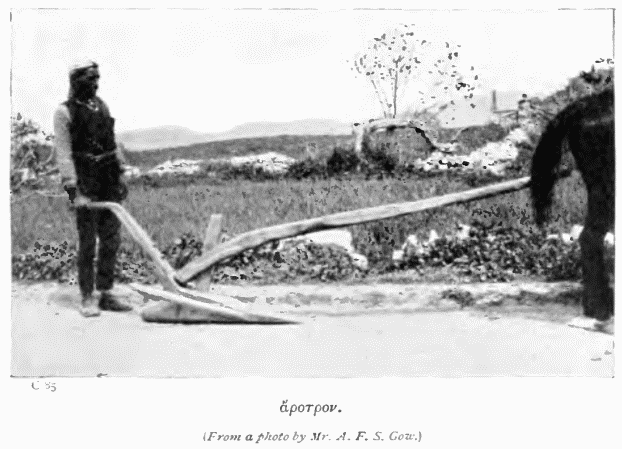
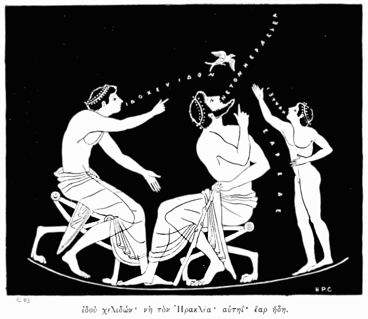

I
PRELIMINARY
Read pp. 1–4 of Rouse’s First Greek Course, and
practise the alphabet as on p. 4.
The grammar for ch. II is found on pp. 4–6, with
the pronouns p. 13 and εἰμί p. 10.
For the other exercises see the corresponding
number in the First Greek Course. Those with Arabic
numerals assume a knowledge of the whole grammar.
II
ΟΣΤΙΣ ΕΙΜΙ ΕΓΩ
ἐγὼ μέν εἰμι παιδίον Ἑλληνικόν, οἰκῶ δ’ ἐν ἀγροῖς.
ἐνταῦθα γὰρ ἐν τοῖς ἀγροῖς γεωργός τις Θράσυλλός ἐστιν,
ὃς γεωργεῖ καὶ ἔχει χωρίον. ἆρ’ ἐρωτᾷς, τίς μὲν ἐγώ,
τίς δ’ ὁ Θράσυλλος; λέγω δή. τέκνον γάρ εἰμι ἐγὼ τοῦ
Θρασύλλου. καὶ μὴν ἄλλα γε ἔχει τέκνα ὁ Θράσυλλος·
καὶ γὰρ ἐγώ εἰμι τέκνον αὐτοῦ, καὶ ἔχω ἀδελφόν τε
καὶ ἀδελφήν· ὀνομάζουσι δ’ ἐμὲ μὲν Θρασύμαχον,
τὸν δ’ ἀδελφὸν ὀνομάζουσιν Θρασύστομον, τὴν δ’
ἀδελφὴν Ἑλένην ὀνομάζουσιν. ἐσμὲν οὖν τέκνα τοῦ
Θρασύλλου, ἐσμὲν δὲ καὶ τὴς Εὐρυδίκης τέκνα.
ποῦ δ’ οἰκοῦμεν; ὅπου; ἔστι δὴ χωρίον ἐν ἀγροῖς,
καὶ ἐν τῷ χωρίῳ οἰκία· ἡμεῖς μὲν οἰκοῦμεν ἐν τῇ
οἰκίᾳ, ὁ δὲ Θράσυλλος γεωργεῖ ἐν τῷ χωρίῳ. ἆρ’
ἐρωτᾷς, τί ἐστι χωρίον; ἆρ’ οὐ δῆλον; ὁ γεωργὸς
γὰρ ἔχει χωρίον, τὸ δὲ χωρίον τόπος ἐστὶν ἐν ᾧ
γεωργεῖ γεωργός. χώρα μὲν γάρ ἐστι τόπος, καὶ
χωρίον ἐστι χώρα μικρά· λέγω δὲ οὕτως, ἐπειδὴ οὐκ
εἶ σὺ Ἑλληνικὸν παιδίον. ἆρα δῆλόν σοι νῦν ἐστιν
ὃ λέγω; τὸ δὲ χωρίον ἔχει ἀγροὺς οὐκ ὀλίγους.
IIΑ
ΤΟ ΧΩΡΙΟΝ
λέγω δή σοι, ὦ φίλε, ὅτι ἐν χωρίῳ οἰκοῦμεν, καὶ
ὅτι τέκνα ἐσμὲν τοῦ Θρασύλλου καὶ τῆς Εὐρυδίκης
ἐγώ τε καὶ Θρασύστομος καὶ Ἑλένη. ἐν δὲ τῇ οἰκίᾳ
ἡμῶν οἰκεῖ τις καὶ ἄλλη· ἡ δ’ ἐστὶ τροφός, καὶ
ὀνομάζουσι τὴν τροφὸν ἡμῶν Λαδίκην. ἆρ’ ἐρωτᾷς,
ποῖόν τί ἐστι τροφός; καὶ δὴ λέγω. τροφὸς γὰρ
τρέφει τὰ μικρὰ τέκνα. ἡ οὖν τροφὸς ἡ ἡμετέρα οἰκεῖ
μεθ’ ἡμῶν ἐν τῇ οἰκία.
οὐκ ἄδηλόν πού ἐστί σοι ὅτι οἰκοῦμεν ἅμα, ἐγώ τε
καὶ ὁ Θράσυλλος ὁ γεωργός, καὶ ὁ ἀδελφός μου
Θρασύστομος, καὶ ἡ ἀδελφὴ Ἑλένη, καὶ ἡ Εὐρυδίκη,
ἧς τέκνα ἐσμέν, καὶ ἡ Λαδίκη, ἥ τροφός ἐστιν. καὶ
ἐν ᾧ χρόνῳ λέγω σοι, μανθάνεις ἕκαστα· δῆλον οὖν
δή πού ἐστι, διὰ τί λέγω πολλάκις ἕκαστα. καὶ ἐν
ᾧ ἐγὼ λέγω, σὺ ἀκούεις.
ἔπειτα λέγω περὶ τοῦ ἡμετέρου χωρίου. τὸ γὰρ
ἡμέτερον χωρίον λόφοι περιέχουσιν. ἆρ’ ἐρωτᾷς τί
ποτ’ ἐστι λόφος; λέγω δή. λόγος γάρ ἐστι τόπος
ὑψηλός, ἡ δὲ γῆ ἣν γεωργοῦμεν οὔκ ἐστιν ὑψηλή,
ἀλλ’ ἔστιν ὁμαλή. ἆρα νῦν δῆλον ὅ τι ἐστὶ λόφος;
εἰ μὴ δῆλον, λέγω ἄλλως δή. ἔστι γάρ τοι λόφος
μάλιστα ὑψηλὸς ἐν Ἑλβετίᾳ, ὃν ὀνομάζουσι Λόφον
Λευκόν· ἔστι δὲ καὶ ἐν Σκωτίᾳ λόφος Νέβις, καὶ ἐν
Ἱβερνίᾳ λόφοι Πυρηναῖοι, καὶ ἄλλοι ἐν Ἰταλίᾳ
Ἀπεννῖνοι· νῦν που δῆλόν ἐστί σοι. ἀλλὰ οἱ λόφοι
οἱ ἡμέτεροι οὔκ εἰσιν οὕτως ὑψηλοὶ ὡς οἱ Πυρηναῖοι·
μικροὶ γὰρ μᾶλλόν εἰσιν οἱ ἡμέτεροι. περιέχουσιν οὖν
οἱ λόφοι τὸ χωρίον ἡμῶν κύκλῳ, ὑψηλοὶ μέν, ἀλλ’
οὐχ οὕτως ὑψηλοὶ ὡς καὶ ἄλλοι. ἐν μέσῳ δὲ τῶν
λόφων τὸ χωρίον ἐστίν, ἐν ᾧ γεωργοῦμεν.
καὶ οὐ μόνον τὸ ἡνέτερον χωρίον ἐστὶν ἐνταῦθα,
χωρία δ’ ἐστὶν ἐγγὺς ἄλλα. ἐκ δεξιᾶς μὲν τὸ ἡμέτερον,
ἐξ ἀριστερᾶς δὲ τὰ ἄλλα· καὶ ἐν μέσῳ ὁδός. ἡ οὖν
ὁδός ἐστιν ἐν μέσῳ τοῦ θ’ ἡμετέρον χωρίου καὶ τῶν
ἄλλων, καὶ τὰ χωρία ἐν μέσῳ τῶν λόφων. δῆλον
δή σοί ἐστι νῦν τὰ περὶ τοῦ τόπου, ὡς νομίζω.
IIΒ
ΔΙΑΛΟΓΟΣ
πηλίκον ἐστι τὸ χωρίον; μικρόν ἐστι τὸ χωρίον.
τίς τροφός ἐστι τῆς Ἑλένης; Λαδίκη τροφός ἐστι
τῆς Ἑλένης.
τίς ἐστι τέκνον Θρασύλλου; Θρασύμαχός τε καὶ
Θρασύστομός ἐστον τέκνω τοῦ Θρασύλλου, καὶ
δὴ καὶ ἡ Ἑλένη τέκνον ἐστὶν ἄλλο.
ποῦ οἰκεῖ ὁ Θράσυλλος; ἐν χωρίῳ οἰκεῖ.
ἐν πηλίκῳ δὲ χωρίῳ οἰκεῖ ὁ Θράσυλλος; ἐν μικρῷ
οἰκεῖ χωρίῳ ὁ Θράσυλλος.
τίς δ’ οἰκεῖ ἐν τῷ χωρίῳ μετὰ τοῦ Θρασύλλου; ὁ
Θρασύστομος καὶ ὁ Θρασύμαχος καὶ ἡ Ἑλένη
οἰκοῦσι κετὰ τοῦ Θρασύλλου ἐν τῷ χωρίῳ.
ἆρα ἔχει Λαδίκη τὸ χωρίον; οὐχ ἡ Λαδίκη ἀλλ’
ὁ Θράσυλλος ἔχει τὸ χωρίον.
ποῦ οἰκεῖ ἡ τροφός; μετὰ τῶν ἄλλων οἰκεῖ ἡ
τροφός.
τί περιέχει τὸ χωρίον; λόφοι περιέχουσι τὸ χωρίον.
τί δ’ ἐν μέσῳ ἐστὶ τῶν χωρίον; ὁδός ἐστιν ἐν
μέσῳ τῶν χωρίων.
ἆρ’ ἐστὶν ἐξ ἀριστερᾶς τὸ χωρίον τοῦ Θρασύλλου;
οὔκ ἐστιν ἐξ ἀριστερᾶς τὸ χωρίον τοῦ Θρασύλλου,
ἀλλὰ ἐκ δεξιᾶς.
ποῖοι δ’ εἰσὶν οἱ λόφοι; ὑψηλοί εἰσιν οἱ λόφοι.
IIΓ
ΤΟ ΧΩΡΙΟΝ
οὔκ ἐστι μέγα τὸ χωρίον ἐν ᾧ οἰκῶ, ἀλλὰ μικρόν ἐστιν. ἐγὼ δ’ οὐκ ἔχω τὸ χωρίον. ἀλλὰ ὁ Θράσυλλος ἔχει τὸ χωρίον ἐν ᾧ οἰκοῦμεν. οὐδ’ ἐστὶν τέκνον μου ὁ Θράσυλλος, ἀλλ’ ἐγὼ τέκνον εἰμὶ τοῦ Θρασύλλου. ἡ δ’ Εὐριδίκη οὔκ ἐστιν ἀδελφή μου, ἀλλ’ ἡ Ἑλένη· εἰμὶ δὲ υἱὸς τῆς Εὐρυδίκης, οὐ τῆς Ἑλένης· ἡ γὰρ Ἑλένη ἀδελφή ἐστί μου, καὶ τέκνον τοῦ Θρασύλλου. τροφὸν δ’ ἔχομεν τὴν Λαδίκην· ἡ δ’ ἐστὶ τροφὸς καὶ ἐμὴ καὶ Ἑλένης. οἰκοῦμεν ἡμεῖς ὁμοῦ, οἰκεῖ δὲ καὶ ἡ τροφὸς μεθ’ ἡμῶν, ἡμεῖς δὲ μετὰ τῆς τροφοῦ. ὀνομάζω μὲν ἔγωγε τὴν τροφὸν μάμμην, ἡ δ’ Ἑλένη ὀνομάζει τὴν τροφὸν μάμμην, καὶ δὴ καὶ ὁ ἀδελφός· οἱ δ’ ἄλλοι ὀνομάζουσιν τὴν τροφὸν Λαδίκην.
λόφους δ’ έχει ὑψηλοὺς κύκλῳ τὸ χωρίον ἡμῶν· οἰλοῦμεν δ’ ἐν μέσοις τοῖς λόφοις, οἵπερ περιέχουσι κύκλῳ τὸ χωρίον. ἐν μέσῳ δὲ τοῦ θ’ ἡμετέρου χωρίου καὶ τῶν ἄλλων ὁδὸς ἐστί τις· ὁρῶ δ’ τὸ μὲν ἡμέτερον χωρίον ἐκ δεξιᾶς, τὰ δ’ ἄλλα ἐξ ἀριστερᾶς.
III
ΚΗΠΟΣ
τοῦτ’ ἐστὶ τὸ χωρίον ἐν ᾧ γεωργεῖ ὁ Θράσυλλος, καὶ οὗτοί εἰσιν οἱ λόφοι, οἳ περιέχουσι τὸ χωρίον· αὕτη δ’ ἡ ὁδὸς ἡ ἐν μέσῳ τῶν χωρίων, καὶ ταῦτ’ ἐστὶ τὰ χωρία τὰ ἐν μέσῳ τῶν λόφων. καὶ δὴ καὶ αὕτη ἐστὶν ἡ οἰκία ἡ ἑν μέσῳ τῷ χωρίῳ· οὗτος δὲ κῆπός ἐστιν ἐγγὺς τῆς οἰκίας.
ἆρα δῆλόν σοι ὅ τι ἐστὶ κῆπος; ἆρα τοῦτό μ’ ἐρωτᾷς; λέγω δὴ τοῦτο ὥσπερ καὶ τὰ ἄλλα· καὶ ἐν ᾧ χρόνῳ λέγω, σὺ μανθάνεις ἕκαστα. κῆπος γάρ ἐστι τόπος, ἐν ᾧ φυτεύομεν δένδρα καὶ ἄλλα φυτά. ἅπερ δὲ φυτεύομεν ἐν τῷ κήπῳ, ταῦτα ἐσθίομεν, ἢ τὸν καρπὸν αὐτῶν. ἄλλα μὲν γὰρ δένδρα οὐ φυτεύομεν, μόνα δὲ ταῦτα τὰ δένδρα, ἃ φέρει καρπόν· καὶ τὸν καρπὸν ἐσθίομεν τῶν δένδρων. τὰ δὲ δένδρα ἃ καρπὸν φέρει, ταῦτ’ ὀνομάζομεν καρποφόρα δένδρα, ἢ καὶ ἀκρόδρυα. λέγω δὴ συκᾶς καὶ ἐλαίας καὶ ἄλλα τοιαῦτα δένδρα. τούτων δὲ τῶν δένδρων ἡ μὲν συκῆ φέρεο σῦκα, ἡ δ’ ἐλαία φέρει ἐλαίας· ἐσθίομεν δὲ καὶ τὰ σῦκα καὶ τὰς ἐλαίας, ἐκ δὲ τῶν ἐλαιῶν ποιοῦμεν ἔλαιον. καρποὺς δὲ φέρει τὰ δένδρα ἄλλα ἄλλους. λάχανα δὲ καὶ φυτεύομεν καὶ ἐσθίομεν· ταῦτα δ’ ἐστὶ σκόροδα καὶ κρόμμυα καὶ ῥάφανοι καὶ κύαμοι καὶ σέλινα καὶ ἄλλα.
IIIΑ
ΑΓΡΙΑ ΔΕΝΔΡΑ
ταῦτ’ ἐστί τοι δένδρα ἥμερα· ἔστι δὲ καὶ ἄγρια δένδρα ἐπὶ τῶν λόφων. καὶ δὴ ἐρωτᾷς, τί ποτ’ ἐστὶν ἄγριον καὶ τί ἥμερον· λέγω οὖν σοι καὶ ταῦτα, καὶ μανθάνεις σὺ ἐν ᾧ λέγω. τὰ μὲν ἥμερα δένδρα ταῦτ’ ἐστίν, ἅπερ φυτεύομεν ἐν τῷ κήπῳ· ὥσπερ καὶ τὰ ἥμερα ζῷα ταῦτ’ ἐστίν, ἅπερ τρέφομεν ἐν τῇ οἰκίᾳ καὶ ἐν τῷ χωρίῳ. ἀλλὰ τὰ ἄγρια δένδρ’ ἐστὶ ταῦθ’, ἃ μὴ φυτεύομεν, ὥσπερ καὶ τὰ ἄγρια ζῷα ταῦτ’ ἐστίν, ἃ μὴ τρέφομεν. ἐπὶ οὖν τῶν λόφων ἐστὶ τὰ ἄγρια δένδρα, καὶ δὴ καὶ τὰ ζῷα τὰ ἄγρια. ποῖα δ’ ἐστὶ τὰ δένδρα τὰ ἄγρια; ἔστι μὲν ἄλλα, περὶ ὧν ὕστερον· νῦν δὲ λέγω ἔνια αὐτῶν· ἔστι μὲν πεύκη, ἔστι δὲ φηγός, ἔστι δὲ καὶ ἰτέα καὶ πτελέα· ὅπου δὲ πολλὰ δένδρα ὁμοῦ ἐστιν, ταύτην ὕλην ὀνομάζομεν. ἕκαστον δὲ δένδρον κλάδους ἔχει, ἕκαστος δὲ κλάδος φύλλα. ἡ δ’ ὕλη πολλὰ δένδρ’ ἐνέχει, καὶ φηγοὺς καὶ ἰτέας καὶ πεύκας καὶ πτελέας· καὶ τὰ δένδρα πολλοὺς ἔχει καὶ κλάδους καὶ φύλλα. ταῦτ’ ἐστὶν ὑψηλὰ τὰ δένδρα· τὰ δὲ μὴ ὑψηλά, δρυμοὺς λέγομεν. ὑψηλὰ μὲν τὰ δένδρα, ταπεινοὶ δὲ οἱ δρυμοί.
IIIΒ
ΖΩΙΑ
ἄγρια οὖν ταῦτα τὰ δένδρα, ἄγριοι δὲ καὶ οἱ δρυμοί. ἐν δὲ τῇ ὕλῃ καὶ δὴ καὶ ἐν τοῖς δρυμοῖς μάλιστα οἰκεῖ τὰ ἄγρια ζῷα, περὶ ὧν ὕστερον. θηρεύομεν γὰρ τὰ ζῷα τὰ ἄγρια, καὶ ἔστιν ἃ αὐτῶν ἐσθίομεν. καὶ περὶ μὲν τῆς ὕλης τοσαῦτα.
οἰκεῖ δ’ ἐν τοῖς δένδροις ζῷα ἄλλα, ἅπερ ἔχει πτερά· ταῦτα δὲ οἰκεῖ ἐν τοῖς δένδροις καὶ ἀντὶ οἰκιῶν οἰκοδομοῦσι καλῑάς. ὀνομάζομεν δὲ ὀρνίθια ταῦτα τὰ ζῷα. τὰ οὖν ὀρνίθια οἰκοδομοῦσι καλιάς, ὥσπερ καὶ οἱ ἄνθρωποι οἰκοδομοῦσιν οἰκίας· ἡ καλιὰ γὰρ ἐστιν ἀντὶ οἰκίας ὀρνιθίῳ, ἐν ᾗ οἰκεῖ τὰ νεόττια. καὶ ὥσπερ ἄνθρωποι παιδία τίκτουσιν, οὕτως καὶ τὰ ὀρνίθια τίκτει ᾠά. φανερὸν δήπου ἐστί σοι, τοῦθ’ ὃ λέγομεν ᾠόν· ἔστι γὰρ μικρὸν καὶ στρογγύλον, καὶ τὰ μέν ἐστι λευκὰ τῶν ᾠῶν, τὰ δ’ οὔ. τρέφομεν δὲ καὶ ἥμερα ὀρνίθια, ἅπερ τίκτει ᾠὰ ἡμῖν· ταῦτα δὲ τὰ ᾠὰ λευκά. καὶ τῶν ἡμέρων ὀρνιθίων τὰ ᾠὰ ἐσθίομεν· τῶν δ’ ἀγρίων ὀρνιθίων τὰ μὲν ἐσθίομεν, τὰ δ’ οὔ.
IIIΓ
ΩΙΑ
τὰ δ’ ᾠὰ ζητοῦμεν ἐν τῷ χωρίῳ ἡμῶν καθ’ ἡμέραν· εὑρίσκομεν δ’ οὕτως. τὰ μὲν ἄριστα τῶν ἡμέρων ὀρνιθίων τίκτει καθ’ ἑκάστην ἡμέραν ᾠόν· καὶ πρῶτον μὲν τίκτει τὸ ᾠὸν ἐν τῇ καλιᾷ, ἔπειτα δὲ κλώζει μέγα. ἐν ᾧ δὲ χρόνῳ κλώζει τὸ ὀρνίθιον, ἀκούομεν ἡμεῖς· καὶ εὐθὺς ζητοῦμεν τὸ ᾠόν, καὶ ἐκ τῆς καλιᾶς λαμβάνομεν, καὶ φέρομεν εἰς τὴν οἰκίαν· ἡ δ’ Εὐρυδίκη λαμβάνει τὸ ᾠὸν εὐθύς, καὶ μετὰ ταῦτα ἕψει μετ’ ἄλλων ᾠῶν, καὶ ἡμεῖς ἐσθίομεν. τὸ δ’ ὀρνίθιον κλώζει οὐχ ἧττον. τῇ δ’ ὑστεραίᾳ ἡμέρᾳ τὸ αὐτὸ ποιεῖ τὸ ὀρνίθιον, τὸ δ’ αὐτὸ ποιοῦμεν καὶ ἡμᾶς· οὐδὲ θαυμάζει τὸ ὀρνίθιον, ὅπου ποτ’ ἐστὶ τὰ ἄλλα ᾠά· κλώζει δ’ ὁμοίως καὶ καθ’ ἡμέραν τίκτει. ὢ τοῦ φιλανθρώπου ὀρνιθίου· οὕτω γὰρ φιλεῖ τοὺς ἀνθρώπους, ὥστε καθ’ ἡμέραν τίκτει ᾠὸν αὐτοῖς τροφήν· τοῦτο δὲ ποιεῖ δήπου ἀντὶ τῆς τροφῆς ᾗ τρέφομεν αὐτὸ ἡμεῖς. οὕτω δὴ τροφὴν μὲν παρέχομεν, τροφὴν δὲ λαμβάνομεν. λέγομεν δὲ τὸ δῶρον, ὅπερ λαμβάνομεν ἀντὶ τροφῆς, τροφεῖα.
IIIΔ
ΑΓΡΙΑ ΟΡΝΙΘΙΑ
καὶ περὶ μὲν τῶν ἡμέρων ὀρνιθίων τοιαῦτα· περὶ δὲ τῶν ἀγρίων ἄλλος ἐστὶ τρόπος. ταῦτα γὰρ, ὡς καὶ λέγω, οἰκοδομεῖ τὰς καλῑὰς ἐν δένδροις ὑψηλοῖς· ἡμεῖς δὲ οὐ τροφὴν παρέχομεν τούτοις τοῖς ὀρνιθίοις, παρέχει δ’ ἡμῖν τροφὴν ταῦτα, ἀλλ’ οὐχ ἑκουσίως. ὅσοι δὲ λαμβάνουσί τι οὕτως ἀπ’ ἀκουσίων, κλέπται εἰσὶ καὶ κλέπτουσιν· ἡμεῖς οὖν κλέπται ἐσμέν. ἀλλ’ ὅμως οὐ σκληροί ἐσμεν τοῖς ὀρνιθίοις· λείπομεν γὰρ ἔστιν ἃ τῶν ᾠῶν ἐν ταῖς καλιαῖς ἑκάστοτε. καὶ οὗτος δή ἐστιν ὁ τρόπος τοῦ ζητεῖν τὰ ᾠὰ ταῦτα, λέγω τὰ τῶν ἀγρίων ὀρνιθίων. περιπατοῦμεν γὰρ κατὰ τὴν ὕλην· κάτωθεν δὲ σκοποῦμεν, εἴ που καλιά τίς ἐστιν. καὶ ἰδού· ὁρῶμεν ἤδη καλιὰν ἐπ’ ἄκρου τοῦ δένδρου. ἀναβαίνω οὖν ἐγὼ ἐπὶ τὸ δένδρον, ἀναβαίνει δ’ ὁ ἀδελφός. καὶ ἰδού· ἐπὶ κλάδου καλιά, καὶ ἐν τῇ καλιᾷ ᾠά· λαμβάνομεν οὖν ᾠά, καὶ καταβαίνομεν εὐθὺς κατὰ τὸ δένδρον. τὰ δ’ ᾠά, ὅσα ἐσθίομεν, ὀνομάζομεν ᾠὰ ἐδώδιμα.
πολλαὶ δὲ τῶν καλιῶν ἐπὶ κλάδων εἰσὶν οὕτως ὑψηλῶν, ὥστε οὐ τάρεστιν ἀναβαίνειν ἐκεῖσε· ταῦτα οὖν μένει ἐν ταῖς καλιαῖς. τὸ δ’ ὀρνίθιον ἐπῴζει, τοῦτ’ ἔστι, καθίζει ἐπὶ τῶν ᾠῶν· οὕτως μὲν δή ἐστι θερμὰ τὰ θερμὰ μέν ἐστι, μετὰ χρόνον δ’ ὀλίγου, τέκνον ἐστὶν ἐν τῷ ᾠῷ. λέγομεν δὲ τὸ τέκνον τοῦ ὀρνιθίου νεόττιον. τὸ δὲ νεόττιον τὸ ἐν τῷ ᾠῷ θραύει μὲν τὸ ἔξω τοῦ ᾠοῦ, καὶ ἰδού, ἐκπηδᾷ· τὸ δὲ ὀρνίθιον φέρει αὐτῷ καθ’ ἡμέραν τροφήν. τὸ δὲ ἀνοίγει μὲν τὸ ῥύγχιον, ἐσθίει δὲ τὴν τροφήν. μετ’ ὀλίγον δὲ φύει πτερὰ τὸ νεόττιον, καί ἐστιν ὀρνίθιον ἤδη.
ἆρ’ ἐρωτᾷς με, πότερον ἀναβαίνει καὶ ἡ ἀδελφὴ ἐπὶ τὰ δένδρα; ἀναβαίνει· ἀλλ’ οὐκ ἐπὶ τὰ ὑψηλὰ δένδρα· κόρη γάρ ἐστιν αὕτη, αἱ δὲ κόραι οὐκ ἀναβαίνουσιν ἐπὶ τὰ δένδρα τὰ μάλιστα ὑψηλά. οὐ γὰρ οὕτως ἰσχυραί εἰσιν αἱ κόραι ὡς ἡμεῖς. οὐδ’ αὖ ἡ τροφὸς ἀναβαίνει· γεραιὰ γὰρ ἐστιν, αἱ δὲ γεραιαὶ οὐκ ἰσχυραί. οὐδὲ πρέπει γ’, ὡς λέγει· ἀλλ’ ἔμοιγε δοκεῖ, ὅτο οὐκ ἐθέλει· νωθρὰ γὰρ ἔμοιγε δοκεῖ. ἀλλ’ οὐκ ἔγωγε νωθρός, ἀλλὰ νεανικός. αἱ δὲ κόραι καὶ αἱ γεραιαὶ ἐσθίουσι γοῦν τὰ ᾠά, εἰ καὶ μὴ ἀναβαίνουσιν ἐπὶ τὰ δένδρα· πρὸς τοῦτό γε δὴ οὐ νωθραὶ δοκοῦσιν. τί σοὶ δοκεῖ, ὦ φίλε; ἆρ’ ἐστὶν οὕτως καὶ παρ’ ὑμῖν;
IIIΕ
ΔΙΑΛΟΓΟΣ
ποῖα δένδρ’ ἐστὶν ἐπὶ τῶν λόφων; ὑψηλά τε καὶ καλὰ δένδρα ἐπὶ τῶν λόφων ἐστίν.
ποῖά ἐστι τὰ καρποφόρα δένδρα; ταῦθ’ ἅπερ καρποὺς φέρει καρποφόρα δένδρα ἐστίν.
τὰ δ’ ἀκρόδρυα ποῖα; καρποφόρα δένδρα ὀνομάζουσι καὶ ἀκρόδρυα.
ποῖον καρπὸν φέρει ἡ συκῆ; σῦκα φέρει ἡ συκῆ.
τί δ’ ἐστὶ τὸ σῦκον; καρπός ἐστι τῆς συκῆς σῦκον.
ποῦ ἐστι τὰ ᾠὰ τῶν ὀρνιθίων; ἐν ταῖς καλιαῖς ἐστι τὰ ᾠὰ τῶν ὀρνιθίων.
τί δ’ ἐστιν ᾠόν; τὰ ὀρνίθια τίκτει ᾠά· τὸ δ’ ᾠὸν μικρόν ἐστι καὶ στρογγύλον, καὶ ἐν τῷ ᾠῷ ἐστι τὸ νεόττιον.
τὸ δὲ νεόττιον τί ἐστιν; τέκνον ἐστὶν ὀρνιθίου τὸ νεόττιον.
IIIΖ
ΠΑΙΔΙΑ
ἔστι τις κώνη πέλας τῆς οἰκίας ἡμῶν· ἐν δὲ τῇ κώνῃ οἰκίαι εἰσὶ πολλαί, καὶ ἐν ταῖς οἰκίαις πολλὰ παιδία· καὶ παιδίσκοι καὶ κόραι ἔνεισιν ἐν τῇ κώνῃ. οἱ δὲ παιδίσκοι καὶ αἱ κόραι παίζουσιν. ἄλλοτε δύο στίχοι εἰσίν, ἕτερος μὲν στίχος παιδίσκων, ἕτερος δὲ κορῶν. καὶ ὁ ἕτερος στίχος ἐναντίον ἐστὶ τοῦ ἑτέρου. καὶ ᾄδουσιν οἱ στίχοι. ὁ μὲν ἕτερος στίχος ᾄδει· ποῦ μοι τὰ ῥόδα, ποῦ μοι τὰ ἴα, ποῦ μοι τὰ καλὰ σέλινα; ὁ δ’ ἕτερος στίχος ᾄδει·
ταδὶ τὰ ῥόδα, ταδὶ τὰ ἴα, ταδὶ τὰ καλὰ σέλινα. καὶ ἐν ᾧ ᾄδουσι, χορεύουσιν πρὸς ἀλλήλους· προχωρεῖ μὲν ὁ ἕτερος στίχος, ἀναχωρεῖ δὲ ὁ ἕτερος.
αἱ δ’ αὖ κόραι παίζουσιν καὶ ὧδε. μία μὲν καθίζει ἐν μέσῳ, αἱ δ’ ἄλλαι κύκλῳ περιτρέχουσι καὶ χορεύουσι, καὶ ᾄδουσι·
χέλει-χελώνη, τί ποιεῖς ἐν τῷ μέσῳ;
ἡ δ’ ἐν μέσῳ ᾄδει·
πλέκω τὰ ἔρια καὶ κρόκην Μιλησίαν.
παίζει δὲ τὰ παιδία πολλὰ καὶ ἄλλα, περὶ ὧν ὕστερον.
IIIΗ
ΚΑΛΙΑΙ
ἆρ’ ἀγνοεῖς ὅτι ἀναβαίνω πολλάκις ἐπὶ τὰ δένδρα, καὶ ζητῶ τὰ ᾠὰ τῶν ὀρνιθίων; αὖθις οὖν λέγω σοι ταῦτα· λήθη γὰρ ἔχει τοὺς ἀνθρώπους ῥᾳδίως. λέγω αὖθις καὶ τοῦτο· ὅτι οἰκοδομεῖ τὰ ὀρνίθια καλιάς, ἐν δὲ ταῖς καλιαῖς ἐστι τὰ ᾠὰ ἃ ζητῶ. τὰς δὲ καλιὰς οἰκοδομεῖ τὰ ὀρνίθια, τὰς μὲν ἐπὶ τῶν δένδρων τῶν ὑψηλῶν, τὰς δὲ ἐν τοῖς δρυμοῖς τοῖς ταπεινοῖς, τὰς δὲ καὶ ἐν τῇ πόᾳ· τὰ δὲ ἐν τοῖς δρυμοῖς ᾠὰ εὑρίσκει καὶ ἡ ἀδελφή, ἀλλ’ οὐκ ἀναβαίνει ἐπὶ τὰ ὑψηλὰ δένδρα ὥσπερ ἐγὼ ἀναβαίνω· αὖθις γὰρ λεκτέον ὅτι οὔτ’ ἰσχυραί εἰσιν αἱ κόραι οὔτ’ ἀνδρεῖαι, ὥστε διὰ τοῦτο οὐκ ἀναβαίνουσιν ἐπὶ τὰ δένδρα τὰ ὑψηλά. οὐδ’ ἡ τροφὸς ἀναβαίνει οὐδαμῶς· πῶς γὰρ δή; γεραιὰ γάρ ἐστι.
IIIΘ
ΚΩΜΗ
τὸ χωρίον ἐν ᾧ οἰκοῦμεν ἐγγύς ἐστι κώνης· ἆρα γιγνώσκεις ὅ τι ἐστὶ κώμη; λέγω δή. ἐν τῇ κώμῃ οἰκίαι εἰστίν, οἱ δὲ ἐν τῇ κώμῃ ἄνθρωποι, κωμηταί. καὶ ἐν τῇ ἡμετέρᾳ κώμῃ ἀγορά ἐστιν· μικρὰ μὲν ἡ κώμη, μικρὰ δὲ καὶ ἡ ἀγορά· καὶ δὴ καὶ τὸ χωρίον ἡμῶν μικρόν. καὶ ἐν τῇ ἀγορᾷ ἀγοράζουσι μὲν οἱ ἀγορασταί, πωλοῦσι δὲ οἱ πωληταί. ἐγὼ δέ, ὃς λέγω, μικρός εἰμί· ἀλλ’ ἡ τροφός μου οὔκ ἐστι μικρά. οὐδὲ οἱ λόφοι μικροί, οἳ περιέχουσι τὸν τόπον κύκλῳ· ὑψηλοὶ γάρ εἰσιν οἱ λόφοι. ἀλλὰ οἱ ὑψηλοὶ λόφοι μικρὰν κώμην περιέχουσι. λέγω δὴ πολλάκις τὰ περὶ τῆς κώμης· ἡ μνήμη γὰρ ἡ τῶν ἀνθρώπων οὐ ῥᾳδίως κατέχει τοῦτο, ὃ λέγομεν ἅπαξ. οὕτως λέγει ὁ διδάσκαλος. οὐ δήπου νῦν ἀγνοεῖς οὔτε τὰ περὶ τῶν λόφων οὔτε τὰ περὶ τῆς κώμης, οὔθ’ ὅπως ὀνομάζομεν τὴν τροφὸν ἡμῶν, οὔθ’ ὅτι Ἑλένη ἡ ἀδελφή μου, οὔθ’ ὅτι ἐγὼ υἱός εἰμι τοῦ τε Θρασύλλου καὶ τῆς Εὐρυδίκης. τίς δῆτα ἀγνοεῖ;
IV
ΟΙΚΙΑ
ὥρα νῦν λέγειν σοι τὰ περὶ τῆς οἰκίας. μικρὰ μέν ἐστιν ἡ οἰκία ἡμῶν, μικροτάτη μὲν οὖν· τί μήν; οὐ γὰρ πολλοί ἐσμεν, οὐδὲ πλούσιοι.
πρῶτον μὲν ἐκ τῆς ὁδοῦ ὁρῶμεν τοῖχον μέγαν, καὶ ἐν τῷ τοίχῳ πύλας· τῆς δ’ ἡμέρας ἀνοικταί εἰσιν αἱ πύλαι. ἐντὸς δὲ τῶν πυλῶν βλέπομεν αὐλὴν μεγάλην, καὶ ἐν τῇ αὐλῇ τὰ ὀρνίθια, καὶ δὴ καὶ ἴσως ἕν τι τῶν ζῴων, ἢ ἵππον ἢ ὄνον ἢ ἡμίονον. ἆρ’ ἀγνοεῖς ποῖα ἄττα ἐστὶ ταῦτα; οὐκ ἔχω λέγειν καλῶς, ὅμως δὲ λέγω. ὁ μὲν ἵππος ἕλκει τὴν ἅμαξαν· ὁ δ’ ὄνος ὅμοιος μὲν ἵππῳ ἐστί, διαφέρει δέ· καὶ γὰρ μικρότερός ἐστι, καὶ μιαρὰν ἔχει τὴν φωνήν, καὶ ἐσθίει ἀκάνθας. ὁ δ’ ἡμίονος τέκνον ἐστὶν ἵππου καὶ ὄνου. δοκεῖς δὴ νῦν οὐκ ἀγνοεῖν ὅ τι λέγω. ταῦτ’ οὖν ἐν τῇ αὐλῇ βλέπεις· ὀρνίθια καὶ ἴσως ἵππον ἢ ὄνον καὶ ἅμαξαν.
ἐξ ἀριστερᾶς δὲ τῆς αὐλῆς καὶ ἐκ δεξιᾶς οἰκίσκοι εἰσὶ μικροὶ ἢ δωμάτια, ἐν οἷς ἔχομεν τοῖς ζῴοις τὴν τροφήν, καὶ δὴ καὶ ἄλλα πολλά. ἐναντίον δὲ βλέπεις τὸν πρόδομον· οὔκ ἐστι κλειστὸς ὁ πρόδομος, ἀλλ’ ἀνοικτός· σκιὰν δ’ ἔχει, ὥστε μὴ καίειν ἡμᾶς τὸν ἥλιον. περαιτέρω δὲ τοῦ προδόμου ἡ οἰκία ἤδη ἐστίν, καὶ ἐν τῇ οἰκίᾳ τράπεζαι καὶ κλῖναι καὶ δίφροι, περὶ ὧν λέγω τοιάδε. ἐπὶ μὲν τραπέζης ἐστὶν ὅσα ἐσθίομέν τε καὶ πίνομεν. σιτία λέγω καὶ οἶνον καὶ τὰ ἀλλα· καθίζομεν δὲ ἐπὶ τῶν δίφρων. ἐπὶ δὲ τῶν κλινῶν καθεύδομεν. καθεύδομεν δὲ καὶ ἔνδον καὶ ἐν τῷ προδόμῳ καὶ ἐπὶ τῆς στέγης—τὸ γὰρ ἄνωθε τῆς οἰκίας στέγην ὀνομάζομεν—καὶ δὴ καὶ ἔξω.
ἐσθίομεν δὲ τρὶς τῆς ἡμέρας. ἑῷοι μὲν ὀλίγον πάνυ ἐσθίομέν τε καὶ πίνομεν· ἔπειτα πρὸ τῆς μεσημβρίας ἀριστῶμεν· εἶτα τῆς ἑσπέρας δειπνοῦμεν. τὸ μὲν πρῶτον ὀλίγον ἐστί, καὶ οὐκ ὀνομάζομεν αὐτὸ οὐδέν· τὸ δὲ δεύτερον λέγομεν τὸ ἄριστον, τὸ δὲ τρίτον ἐστὶ τὸ δεῖπνον. μετὰ ταῦτα λαλοῦμεν μετ’ ἀλλήλων, καὶ καθεύδομεν.
IVΑ
ΚΗΠΟΣ
καὶ κύκλῳ περὶ τὴν οἰκίαν ἀγροὶ μέν εἰσιν, οὓς γεωργοῦμεν, καὶ ἄλλος ἐστὶ τόπος ἐν ᾧ αἱ ἀμπέλοι. ἔστι δὲ καὶ κῆπος, ἐν ᾧ κηπεύομεν. καὶ περὶ μὲν τῆς γεωργίας ὕστερον λεκτέον ἐστί· περιέχει δὲ ὁ κῆπος τὴν οἰκίαν, ἐν δὲ τῷ κήπῳ πολλὰ καὶ ἄλλα πάρεστι βλέπειν, καὶ δὴ καὶ λάχανα καὶ πόαν καὶ ἴα καὶ ῥόδα. καὶ ἀπὸ τῆς ἀμπέλου δρέπομεν σταφυλάς· καὶ τῶν σταφυλῶν τὰς μὲν ἐσθίομεν, τὰς δὲ ξηραίνομεν, τὰσ δὲ πατοῦμεν ἐν τῇ ληνῷ, καὶ ποιοῦμεν οὕτως οἶνον. δρέπομεν δὲ καὶ σῦκα ἀπὸ τῶν συκῶν, καὶ ἐλαίας ἀπὸ τῶν ἐλαιῶν. περὶ τούτων ὕστερον λεκτέον μοι· νῦν γὰρ οὐ πάρεστιν. οἴμοι· φεῦ· ὡς πολλάκις λέγω τὸ αὐτό. καὶ γὰρ οὐ γιγνώσκετε οὔπω τὴν Ἑλληνικὴν γλῶτταν. ἀλλὰ ῥᾳδία μᾶλλον δοκεῖ εἶναι καθ’ ἡμέραν, ὡς νομίζω. πῶς γὰρ οὔ; ἐγὼ μὲν οὐ δεινός εἰμι λέγειν, σὺ δέ που δεινὸς εἶ μανθάνειν.
IVΒ
ΔΙΑΛΟΓΟΣ
τί κῆπός ἐστιν; τόπος ἐστὶ κῆπος ἐν ᾧ δένδρα καὶ ἄλλα φυτὰ φυτεύομεν.
τί φυτεύετε ἐν τῷ κήπῳ; συκᾶς φυτεύομεν ἐν τῷ κήπῳ, καὶ ἐλαίας.
τί ἄλλο φυτεύετε πρὸς τούτοις; λάχανα φυτεύομεν παντοῖα.
τί δρέπετε ἀπὸ τῶν συκῶν; σῦκα δρέπομεν ἀπὸ τῶν συκῶν.
ἀπὸ δὲ τῶν ἐλαιῶν τί δρέπετε; ἐλαίας δρέπομεν ἀπὸ τῶν ἐλαιῶν.
ἀπὸ δὲ τῶν λαχάνων τί δρέπετε; ἀπὸ τῶν γε λαχάνων οὐδέν.
ποῖα δ’ ἄττ’ ἐστὶ τὰ λάχανα; σκόροδα καὶ κρόμμυα καὶ ῥάφανοι καὶ κύαμοι καὶ σέλινα, ταῦτ’ ἐστὶ λάχανα.
πρὸς τί οὖν χρήσιμά ἐστι τὰ λάχανα; πρὸς τὸ ἐσθίειν ἐστὶ χρήσιμα τὰ λάχανα.
καὶ δὴ καὶ ἐν τῇ οἰκίᾳ τί ἔνεστιν; δίφροι ἔνεισι καὶ κλῖναι καὶ τράπεζαι.
ὁ δίφρος δὲ τί ἐστιν; καθίζομεν δὴ ἐπὶ δίφρου.
ἆρα καὶ ἐν τῇ τραπέζῃ καθίζετε; τὰ σίτια μὲν οὖν ἐσθίομεν ὅσα ἐστὶν ἐπὶ τῆς τραπέζης.
καὶ ἐπὶ τῶν κλινῶν τί ποιεῖτε; καθεύδομεν ἐπὶ τῶν κλινῶν.
IVΓ
ΑΙ ΑΘΗΝΑΙ
ἐνθένδε ὁρῶμεν τὰς Ἀθήνας· φανεραὶ γάρ εἰσιν αἱ Ἀθῆναι ἀπὸ τῆς κώμης, ἐν ᾗ οἰκῶ μετὰ τοῦ ἀδελφοῦ καὶ τῆς ἀδελφῆς καὶ τοῦ Θρασύλλου καὶ τῶν ἄλλων. καὶ δὴ καὶ ἐν ταῖς Ἀθήναις φανερός ἐστι ναὸς τῆς Ἀθήνης, ὅς ἐστιν ἐπὶ τῆς πέτρας ἣν ὁρᾶτε. ἡ μὲν γὰρ Ἀθήνη θεός ἐστίν, ἡμεῖς δὲ σέβομεν τὴν Ἀθήνην· σέβομεν δὲ καὶ ἄλλους θεοὺς ἐγχωρίους, περὶ ὧν ὕστερον. καὶ πολλάκις ἄγομεν ἑορτὰς καὶ Ἀθήνησι καὶ κατ’ ἀγρούς· ᾄδομεν, χορεύομεν, σφάζο μεν ἱερά, ἐσθίομεν, πίνομεν· τί δ’ οὐ ποιοῦμεν ἐν ταῖς ἑορταῖς; ἐν τοῖς Παναθηναίοις πομπή ἐστι λαμπροτάτη· ἐν τοῖς Διονυσίοις φοιτῶμεν εἰς τὸ θέατρον· καὶ αἰεὶ χαίρομεν.
IVΔ
ΑΡΙΘΜΟΣ
ἀριθμῶ μὲν τοὺς ἐν τῇ οἰκίᾳ ἀνθρώπους· καὶ πέντε ἐσμέν. ἀριθμῶ δὲ τὰ τῆς οἰκίας οἰκήματα, καὶ δέκα ἐστίν. ἀριθμῶ δὲ καὶ τοὺς δίφρους ὅσοι ἔνεισι· καὶ οὗτοι εἴκοσίν εἰσι μάλιστα. τὰς δὲ κλίνας ἀριθμῶ· εἰσὶ δ’ ἕξ. τὰς δὲ τραπέζας ἀριθμῶ· τρεῖς εἰσιν. πόσους ἔχεις ὀφθαλμούς; ἀριθμῶ τοὺς ὀφθαλμούς· ἔχω δὲ ὀφθαλμῶ δύο ἔγωγε, δύο δ’ ἔχεις καὶ σύ, καὶ δὴ καὶ ἕκαστός τις, εἰ μή γ’ οἱ τυφλοί· ὁ γὰρ τυφλὸς οὐκ ἔχει ὀφθαλμούς, ἢ οὐχ ὁρᾷ γε τοῖς ὀφθαλμοῖς· ἡμῶν δ’ οὐδεὶς τυφλός. καὶ εἰσὶν οἳ τυφλοί εἰσι τὸν ἕτερον ὀφθαλμόν· τούτους λέγομεν ἑτεροφθάλμους. ὤμους δὲ ἔχει ἕκαστος δύο. καὶ δακτύλους ἔχω εἴκοσι, δέκα μὲν ἄνω, δέκα δὲ κάτω. ἀλλ’ οὐκ ἔχω νῦν λέγειν τὰ ἄλλα ὄργανα· ἄλλῳ γὰρ ὀργάνῳ ἀκούω, ἄλλῳ δὲ ὀργάνῳ βαδίζω, ἄλλῳ δὲ ἐσθίω, καὶ τὰ λοιπὰ οὕτως.
IVΕ
ΤΑ ΕΝ ΟΙΚΙΑΙ
οὐκ ἀγνοεῖς δὴ ὁπόσα δωμάτιά ἐστιν ἐν τῃ ἡμετέρᾳ οἰκίᾳ· λέγω γὰρ αὖθις ὅτι δέκα. εἰσὶ δὲ καὶ ἐν αὐτῇ δίφροι, ἐφ’ ὧν καθίζομεν, καὶ κλῖναι, ἐν αἷς καθεύδομεν, καὶ τράπεζαι, ἐφ’ ὧν ἐστι τὰ σιτία καὶ ὁ οἶνος· τὰ μὲν σιτία ἐσθίομεν, τὸν δ’ οἶνον πίνομεν. ποτήρια δ’ ἐστὶν ἡμῖν ἐξ ὧν πίνομεν, λεκάναι δ’ ἐξ ὧν ἐσθίομεν τὰ σιτία. καὶ μὴν ποῖά γ’ ἐστὶν ἡμῖν τὰ σιτία; ἄρτος μὲν καὶ μᾶζα, μετὰ ταῦτα τῡρὸς λευκός, καὶ ᾠά, καὶ ὀρνίθεια, καὶ δὴ καὶ ἄλλα ἐστὶν περὶ ὧν λεκτέον ἐστὶν ὕστερον· οὐ γὰρ νῦν πάρεστιν. τὰ δ’ ἐκ τοῦ κήπου ἐσθίομεν· λάχανα λέγω καὶ ὀπώραν, σταφυλάς τε καὶ σῦκα καὶ ἐλαίας. ἆρα ἀγνοεῖς τὴν περὶ σύκων παροιμίαν; αὕτη δή ἐστιν ἡ παροιμία· “οὐ σῦκον σύκῳ ὁμοιότερον.” καὶ δὴ ἐγὼ ὅμοιός εἰμι τῷ ἀδελφῷ· ὁρᾷ τις νώ, καὶ λέγει· “ὁμοιότερός ἐστι τῷ ἀδελφῷ ὁ Θρασύμαχος ἢ σῦκον σύκῳ.” οἷον γὰρ ἄλλο σῦκον, τοιοῦτο καὶ ἄλλο.
IVΖ
ΔΙΔΑΣΚΑΛΟΣ
οὐκ ἔχομεν ἡμεῖς, ὥσπερ καὶ ὑμεῖς, οἶκον μέγιστον ἐν ᾧ διδάσκουσι πολλοὶ διδάσκαλοι· παρ’ ὑμῖν γάρ ἐστιν οἶκος ὃς πολλὰ ἔχει δωμάτια, ἄλλα μὲν μεγάλα, ἄλλα δὲ μικρότερα· εἰσὶ δὲ καὶ διδάσκαλοι πολλοί, εἰς μὲν ἀρχιδιδάσκαλος, ἕτεροι δ’ ὑποδιδάσκαλοι. ἐμοὶ δ’ ἐστὶ παιδαγωγὸς μέν, ὃς δοῦλός ἐστι, καὶ ἄγει με εἰς τὴν κώμην παρὰ τὸν διδάσκαλον· διδάσκει δ’ ὁ διδάσκαλος ἢ ἐν τῇ ἑαυτοῦ οἰκίᾳ, ἢ ἐν τῇ αὐλῇ, ἢ ὑπὸ τῶν δένδρων ἔξω. ὑμεῖς μὲν γράφετε καλάμοις ἐν παπύρῳ, γύψῳ ἐν τῷ τοίχῳ· ἡμεῖς δὲ γράφομεν στύλῳ ἐν πινακίῳ, ἢ ξύλῳ ἐπὶ τῆς γῆς. ἆρ’ ἀγνοεῖς ποῖα ἄττα ἐστὶ τὰ πινάκια ἡμῶν; λέγω δή. ξύλινα μέν ἐστι ταῦτα τὰ πινάκια, ἔστι δ’ ἐπ’ αὐτῶν μάλθα ἐν ᾗ γράφομεν τοῖς στύλοις· καὶ μετὰ ταῦτα λεαίνομεν τὴν μάλθαν, καὶ λεία ἐστὶν ἤδη· ὥστε γράφομεν πολλάκις ἐν τῇ αὐτῇ μάλθῃ. οὕτως οὐ δεῖ ἡμῖν πολλῶν πινακίων, τὰ δὲ αὐτὰ πινάκια ἱκανά ἐστιν. ἆρ’ ἀγνοεῖς τὴν μάλθαν, ὅ τι ἐστί; ἦ που δεινὸς εἶ σύ γε μανθάνειν.
IVΗ
ΤΑ ΤΟΥ ΔΙΔΑΣΚΑΛΕΙΟΥ
γράφομεν δὴ οὕτως. γάμμα ῥῶ ἄλφα φῖ οὖ μῦ εἶ νῦ, τοῦτ’ ἐστί, γράφομεν· εἶ πῖ ἰῶτα, ἐπί· ταῦ οὖ ὖ, τοῦ· πῖ ἰῶτα νῦ ἄλφα κάππα ἰῶτα οὖ ὖ, πινακίου. γράφομεν δὲ καλῶς· οὐ γὰρ ἐθέλομεν πληγὰς λαμβάνειν. καὶ γὰρ ἔχει ξύλον ὁ διδάσκαλος, ᾧ παίει ἡμᾶς ἐνίοτε· ἀλλ’ οὐ πολλάκις παίει τὰ παιδία τῷ ξύλῳ, ἐπεὶ εὔκολός ἐστιν. οἱ δὲ δύσκολοι διδάσκαλοι πολλάκις παίουσι τὰ παιδία, ἐν ᾧ χρόνῳ διδάσκουσιν.
πρὸς δὲ τούτοις μανθάνομεν ἀναγιγνώσκειν τὰ τῶν ποιητῶν, καὶ δὴ καὶ ἐκμανθάνομεν, ὥστε λέγειν ἄνευ πινακίου καὶ ἄνευ βιβλίου. ποιητῶν τοι ὁ μέγιστός ἐστιν Ὅμηρος. μανθάνομεν δὲ ἀναγιγνώσκειν τὰ τοῦ Ὁμήρου, καὶ τὰ Ἰλιακὰ καὶ τὴν Ὀδυσσείαν, περὶ ὧν ὕστερον λεκτέον ἐστίν. μαθηταί ἐσμεν καλοί, καὶ μανθάνομεν εὖ, ἐπεὶ οὕτως εὔκολός ἐστιν ὁ διδάσκαλος· ὁ δὲ σοφώτατός τίς ἐστι, καὶ δυνατός ἐστι λέγειν πάντα τὰ Ὁμηρικὰ ἄνευ βιβλίου.
IVΘ
ΑΡΙΘΜΟΣ
ἀριθμοῦμεν δ’ οὕτως. εἷς, δύο, τρεῖς, τέτταρες, τέντε, ἕξ, ἑπτά, ὀκτώ, ἐννέα, δέκα. μετὰ ταῦτα ἕνδεκα, δώδεκα, τρεῖς καὶ δέκα, τέτταρες καὶ δέκα, τέντε καὶ δέκα, ἑκκαίδεκα, ἑπτὰ καὶ δέκα, ὀκτὼ καὶ δέκα, ἐννέα καὶ δέκα, εἴκοσιν.
καὶ μετὰ τὰ εἴκοσιν· εἷς καὶ εἴκοσι, δύο καὶ εἶκοσι, τρεῖς καὶ εἴκοσι, τέτταρες καὶ εἴκοσι, πέντε καὶ εἴκοσιν, ἓξ καὶ εἴκοσιν, ἑπτὰ καὶ εἴκοσιν, ὀκτὼ καὶ εἴκοσιν, ἐννέα καὶ εἴκοσι, τριάκοντα.
μετὰ δὲ τὰ τριάκοντα· εἷς καὶ τριάκοντα, δύο καὶ τριάκοντα, τρεῖς καὶ τριάκοντα, τέτταρες καὶ τριάκοντα, τέντε καὶ τριάκοντα, ἓξ καὶ τριάκοντα, ἑπτὰ καὶ τριάκοντα, ὀκτὼ καὶ τριάκοντα, ἐννέα καὶ τριάκοντα, τετταράκοντα.
μετὰ δὲ τὰ τετταράκοντα· εἷς καὶ τετταράκοντα, δύο καὶ τετταράκοντα, τρεῖς καὶ τετταράκοντα, τέτταρες καὶ τετταράκοντα, πέντε καὶ τετταράκοντα, ἓξ καὶ τετταράκοντα, ἑπτὰ καὶ τετταράκοντα, ὀκτὼ καὶ τετταράκοντα, ἐννέα καὶ τετταράκοντα, πεντήκοντα.
μετὰ δὲ τὰ πεντήκοντα· εἷς καὶ πεντήκοντα, δύο καὶ πεντήκοντα, τρεῖς καὶ πεντήκοντα, τέτταρες καὶ πεντήκοντα, πέντε καὶ πεντήκοντα, ἓξ καὶ πεντήκοντα, ἑπτὰ καὶ πεντήκοντα, ὀκτὼ καὶ πεντήκοντα, ἐννέα καὶ πεντήκοντα, ἑξήκοντα.
λέγομεν δὲ τῷ αὐτῷ τρόπῳ περὶ τῶν ἑβδομήκοντα, ὀγδοήκοντα, ἐνενήκοντα, ἑκατόν.
καὶ δὴ καὶ τῷ αὐτῷ τρόπῳ μετὰ ταῦτα λέγομεν· εἰσὶ γὰρ διᾱκόσιοι, τριᾱκόσιοι, τετρᾰκόσιοι, πεντᾰκόσιοι, ἑξᾰκόσιοι, ἑπτᾰκόσιοι, ὀκτᾰκόσιοι, ἐνᾰκόσιοι, χίλιοι.
IVΙ
ΠΟΛΛΑΠΛΑΣΙΩΣΙΣ
πολλαπλασιοῦμεν δ’ οὕτω τοὺς ἀριθμούς. ἄπαξ ἕν
ἐστιν ἕν, δὶς ἕν ἐστι δύο, τρὶς ἕν ἐστι τρία, τετράκις
ἕν ἐστι τέτταρα, πεντάκις ἕν ἐστι πέντε, ἑξάκις ἕν
ἐστιν ἕξ, ἑπτάκις ἕν ἐστιν ἑπτά, ὀκτάκις ἕν ἐστιν
ὀκτώ, ἐνάκις ἕν ἐστιν ἐννέα, δεκάκις ἕν ἐστι δέκα,
ἐνδεκάκις ἕν ἐστιν ἕνδεκα, δωδεκάκις ἕν ἐστι δώδεκα,
τρισκαιδεκάκις ἕν ἐστι τρία καὶ δέκα, τετταρεσκαιδεκάκις
ἕν ἐστι τέτταρα καὶ δέκα, πεντεκαιδεκάκις ἕν
ἐστι πέντε καὶ δέκα, ἑκκαιδεκάκις ἕν ἐστιν ἑκκαίδεκα,
ἑπτακαιδεκάκις ἕν ἐστιν ἑπτὰ καὶ δέκα, ὀκτωκαιδεκάκις
ἕν ἐστιν ὀκτὼ καὶ δέκα, ἐννεακαιδεκάκις ἕν ἐστιν ἐννέα
καὶ δέκα, εἰκοσάκις ἕν ἐστιν εἴκοσιν.
τῷ δ’ αὐτῷ τρόπῳ καὶ περὶ τοῦ τριακοντάκις,
τετταρακοντάκις, πεντηκοντάκις, ἑξηκοντάκις, ἑβδομηκοντάκις,
ὀγδοηκοντάκις, ἐνενηκοντάκις, ἑκατοντάκις,
χιλιάκις, μυριάκις.
καὶ δὴ καὶ ἅπαξ δύο ἐστὶ δύο, δὶς δύο ἐστὶ
τέτταρα, τρὶς δύο ἐστὶν ἕξ, τετράκις δύο ἐστὶν ὀκτώ,
πεντάκις δύο ἐστὶ δέκα, ἑξάκις δύο ἐστὶ δώδεκα,
ἑπτάκις δύο ἐστὶν τέτταρα καὶ δέκα, ὀκτάκις δύο ἐστὶν
ἑκκαίδεκα, ἐνάκις δύο ἐστὶν ὀκτὼ καὶ δέκα, δεκάκις δύο
ἐστὶν εἴκοσι, ἑνδεκάκις δύο ἐστὶ δύο καὶ εἴκοσι,
δωδεκάκις δύο ἐστὶ τέτταρα καὶ εἴκοσιν.
καὶ τῷ αὐτῷ δὴ τρόπῳ· ἅπαξ τρία ἐστὶ τρία, δίς
τρία ἐστὶν ἕξ, τρὶς τρία ἐστὶν ἐννέα, τετράκις τρία
δώδεκ’ ἐστί, πεντάκις τρία πέντε καὶ δέκα, ἑξάκις
τρία ὀκτὼ καὶ δέκα, ἑπτάκις τρία ἓν καὶ εἴκοσιν,
ὀκτάκις τρία τέτταρα καὶ εἴκοσιν, ἐνάκις τρία ἑπτὰ
καὶ εἴκοσιν, δεκάκις τρία τριάκοντα, ἑνδεκάκις τρία
τρία καὶ τριάκοντα, δωδεκάκις τρία ἓξ καὶ τριάκοντα.
οὐδ’ ἄλλῳ τρόπῳ τὰ λοιπά· ἅπαξ τέτταρα, δὶς
τέτταρα· καὶ ἅπαξ πέντε, δὶς τέντε, τρὶς πέντε· καὶ
δὴ καὶ τοὺς ἄλλους τῶν ἀριθμῶν ἀριθμοῦμεν τῷ αὐτῷ
τρόπῳ· σὺ δὲ λέγε δὴ ἄνευ βιβλίου οὔτως.
λοιπὸν δή ἐστι λέγειν τὰ μετὰ τοὺς χιλίους· οὕτω
δὲ λεκτέον ἐστίν. δισχίλιοι, τρισχίλιοι, καὶ τὰ ἄλλα
μεχρὶ τῶν ἐνακισχιλίων· ἀντὶ δὲ τῶν δεκάκις χιλίων
λέγομεν μυρίους, καὶ δισμυρίους, καὶ τὰ ἄλλα οὕτως.
IVΚ
ΜΕΡΙΣΜΟΣ
διαμερίζομεν δ’ αὖ τοὺς ἀριθμοὺς ὧδέ πως.
πόστον μόριον ἢ πόστη μοῖρά ἐστι τὸ ἓν τοῖν δυοῖν;
ἡμίσεια μοῖρά ἐστι τὸ ἓν τοῖν δυοῖν.
πόστη μοῖρα τὸ ἓν τῶν τριῶν; τρίτη μοῖρα τὸ ἓν
τῶν τριῶν.
πόστη μοῖρα τὸ ἓν τῶν τεττάρων; τετάρτη μοῖρα τὸ
ἓν τῶν τεττάτων.
πόστη μοῖρα τὸ ἓν τῶν πέντε; πέμπτη μοῖρα τὸ ἓν
τῶν πέντε.
πόστη μοῖρα τὸ ἓν τῶν ἕξ; ἕκτη μοῖρα τὸ ἓν τῶν ἕξ.
πόστη μοῖρα τὸ ἓν τῶν ἑπτά; ἑβδόμη μοῖρα τὸ ἓν
τῶν ἑπτά.
πόστη μοῖρα τὸ ἓν τῶν ὀκτώ; ὀγδόη μοῖρα τὸ ἓν
τῶν ὀκτώ.
πόστη μοῖρα τὸ ἓν τῶν ἐννέα; ἐνάτη μοῖρα τὸ ἓν
τῶν ἐννέα.
πόστη μοῖρα τὸ ἓν τῶν δέκα; δεκάτη μοῖρα τὸ ἓν
τῶν δέκα.
πόστη μοῖρα τὸ ἓν τῶν ἕνδεκα; ἑνδεκάτη μοῖρα τὸ
ἓν τῶν ἕνδεκα.
πόστη μοῖρα τὸ ἓν τῶν δώδεκα; δωδεκάτη μοῖρα τὸ
ἓν τῶν δώδεκα.
οὕτω δὴ τῷ αὐτῷ τρόπῳ λέγομεν περὶ τῶν ἄλλων
μοιρῶν· εἰσὶ δ’ αὗται· τρισκαιδεκάτη, τετταρεσκαιδεκάτη,
πεντεκαιδεκάτη, ἑκκαιδεκάτη, ἑπτακαιδεκάτη,
ὀκτωκαιδεκάτη, ἐννεακαιδεκάτη, εἰκοστή. καὶ μετὰ
ταῦτα· εἰκοστὴ πρώτη, εἰκοστὴ δευτέρα, εἰκοστὴ
τρίτη, καὶ τὰ λοιπά. μετὰ ταῦτα δέ· τριακοστή,
τριακοστὴ πρώτη, τριακοστὴ δευτέρα. λέγε δὲ σὺ τοὺς
ἄλλους ἀριθμοὺς αὐτός. καὶ δὴ καὶ τετταρακοστή,
τετταρακοστὴ πρώτη, τετταρακοστὴ δευτέρα, καὶ τὰ
ἄλλα οὕτως. λοιπὰ δ’ ἐστὶ ταῦτα· πεντηκοστή, ἑξηκοστή,
ἑβδομηκοστή, ὀγδοηκοστή, ἐνενηκοστή, ἑκατοστή·
καὶ δὴ καὶ διᾱκοσιοστή, τριᾱκοσιοστή, τετρᾰκοσιοστή,
πεντᾰκοσιοστή, ἑξᾰκοσιοστή, ἑπτᾰκοσιοστή, ἐνᾰκοσιοστή,
χιλιοστή, καὶ δισχιλιοστὴ μέχρι τῆς ἐνάκις χιλιοστῆς
καὶ μυριοστῆς καὶ δισμυριοστῆς.
τῷ αὐτῷ τρόπῳ λέγομεν καὶ μόριον τρίτον, ἢ
ἑκατοστόν, ἢ χιλιοστόν· σὺ δ’ αὐτὸς οἷός τ’ εἶ ταῦτα
λέγειν καὶ ἄνευ ἐμοῦ, οὐ γὰρ δήπου μῶρος εἶ, ὦ
μαθητά. λέγε οὖν ἐφεξῆς.
IVΛ
ΚΟΠΟΣ
οἴμοι, ὡς χαλεπὰ ταῦτα μανθάνειν. οὐ μὲν οὖν
χαλεπά ἐστιν, ἀλλὰ ἐν ᾧ τὰ αὐτὰ ἐπαναλαμβάνομεν
πολλάκις, κόπον ἔχομεν μέγιστον. φεῦ τοῦ κόπου.
οἴμοι τοῦ κόπου τούτου. διὰ τί ὄχλον παρέχει
τοσοῦτον ὁ ἀριθμός; κόπος κόπον λύει, ὥσπερ ἡ
παροιμία λέγει· ἄλλος κόπος τελευτᾷ, ἰδοὺ ἄλλος,
ἔργον ἐπ’ ἔργῳ, ὄχλος᾽επ’ ὄχλῳ. ἀλλ’ οὕτω γὰρ
κελεύουσιν οἱ θεοί· ἄνευ κόπου καὶ ἔργου οὐ δυνατόν
ἐστιν ἀγαθὸν ἔχειν οὐδέν. καὶ δὴ καὶ μάλιστα
παιδίοις πρέπει ταῦτα καὶ νέοις, ὥσπερ ἡ παροιμία
λέγει·
ἔργα νέων, βουλαὶ δὲ μέσων, εὐχαὶ δὲ παλαιῶν.
τοῖς μὲν γὰρ νέοις τὴν ἡλικίαν πάρεστιν ἔργα ἀναγκαῖα·
τοῖς δὲ μέσοις τὴν ἡλικίαν βουλαί, τοῖς δὲ
παλαιοῖς εὐχαί. ἄνευ ἔργων οὐκ ἀκούουσιν οἱ θεοὶ
τῶν νέων τὰς εὐχάς, ἀκούουσι δὲ τὰσ εὐχὰς τῶν
παλαιῶν, ἐπειδὴ οὐχ οἷοί τ’ εσι ποιεῖν ἄλλο οὐδέν.
θάρρει οὖν, ὦ φίλτατε· καλὸς γάρ ἐστιν ὁ τῶν ἔργων
καρπός, εἰ μὴ νῦν γε, ἀλλὰ ὕστερόν ποτε. ὥστε
ἀριθμοῦμεν αὖθις ἄσμενοι, καὶ γράφομεν τῷ ξύλῳ ἐπὶ
τῆς γῆς, ἢ τῷ στύλῳ ἐπὶ τοῦ πινακίου, ἢ τῷ καλάμῳ
ἐπὶ τῆς παπύρου· καὶ μανθάνομεν τὰ Ὁμηρικὰ καὶ
λέγομέν τε καὶ ᾄδομεν.
IVΜ
ΤΑ ΑΥΤΑ
ἐσμὲν οὖν ἐν τῇ οἰκίᾳ πέντε ἄνθρωποι, ὅ τε
Θράσυλλος καὶ ἡ Εὐρυδίκη, καὶ τὰ τρία παιδία, δύο
μὲν ἀδελφοί, μία δὲ ἀδελφή. διδάσκει δ’ ἡμᾶς ἀριθμεῖν
ὁ διδάσκαλος ἡμῶν, ἀριθμοῦμεν δ’ ἡμᾶς αὐτοὺς
καθ’ ἡμέραν, ἀριθμοῦμεν δὲ καὶ τὰ μόρια ἡμῶν.
ἔχομεν γὰρ ἕκαστος μίαν κεφαλήν, ὥστε ὁμοῦ ἔχομεν
πέντε κεφαλάς· ὀφθαλμοὺς δ’ ἔχομεν ἕκαστος δύο,
ὥστε δέκα ὁμοῦ ἔχομεν ὀφθαλμούς· δακτύλους δ’
ἔχομεν ἕκαστος εἴκοσιν, ὥστε ἑκατὸν δακτύλους ἔχομεν
ὁμοῦ. τὰ δ’ ἄλλα μόρια ὕστερον.
διδάσκει δ’ ἡμᾶς ὁ διδάσκαλος ᾄδειν καὶ λέγειν
καὶ γράφειν· τῇ μὲν φωνῇ ᾄδομεν, τῇ δὲ γλώττῃ
λέγομεν, γράφομεν δὲ καλάμῳ ἐν βιβλίοις.
V
ΤΑ ΜΕΤΕΩΡΑ
παρ’ ἡμῖν ἄλλοτε μὲν λάμπει ὁ ἥλιος καὶ φέγγει ἡ
σελήνη καὶ τὰ ἄστρα, ὥστε εὐδία ἐστίν, ἄλλοτε δὲ
ὕει καὶ ἀστράπτει καὶ βροντᾷ ἢ ἄνεμος πνεῖ λαβρός,
ὥστε ῥεῖ πολὺς ὁ ποταμός, ἡμεῖς δὲ ἐν τούτῳ τῷ χρόνῳ
καθίζομεν ἐν τῇ οἰκίᾳ καὶ ἀναμένομεν. χθὲς ἔνεμος
ἦν λαβρότατος καὶ ὑετὸς καὶ ἀστραπὴ καὶ βροντή.
ἡμεῖς δὲ ἐντὸς ἐκαθίζομεν. ἤστην δὲ δύο τινὲ φίλω
παρ’ ἡμῖν, ἔλεγεν δὲ ὁ ἕτερος, “ἰδού, ὡς ὁμοίω ἐστὸν
τὼ ἀδελφώ. οὐ γὰρ σῦκον σύκῳ ὁμοιότερον.” ὁ δὲ
ἕτερος λέγει, “ἀλλ’ οὐχ οὕτως ὅμοιός ἐστιν οὗτος
ἐκείνῳ, ὡς ἐκεῖνος τούτῳ.” οἱ δ’ ἄλλοι ἐγέλασαν,
ἐπειδὴ ἤκουσαν τοῦ ἀνθρώπου.
VΑ
ΑΣΤΡΑΠΗ
χθὲς ἤστραπτεν· ἡ δ’ ἀστραπὴ μεγάλη ἦν καὶ
φοβερά· ἦν δὲ πύελός τις ἐν τῇ αὐλῇ, ἐξ ἧς πυέλου
οἱ χοῖροι τρώγουσιν· ἦν δ’ ἐν τῇ πυέλῳ ὑετός, ὃς
κατέπεσεν ἀπ’ οὐρανοῦ. ἡ δ’ ἀδελφὴ ἡ ἐμὴ εἶδεν ἐν
τῇ πυέλῳ ὥσπερ τὴν ἀστραπήν, ἣ ἦν ἐν τῷ οὐρανῷ,
καὶ φόβῳ ἐβόα. ἡ δὲ τροφὸς εἶπε, “θάρρει, φίλη
κεφαλή. ἀστραπὴ ἐκ πυέλου οὐδὲν βλάπτει, κατὰ τὴν
παροιμίαν.” ἡ δ’ ἐθάρρει εὐθύς. οἱ δὲ χοῖροι ὅμως
ἐν φόβῳ ἦσαν· ἠγνόουν γὰρ ὅτι οὐδὲν βλάπτει ἡ
ἐκ τῆς πυέλου ἀστραπή· καὶ ἐκόϊζον δεινῶς· ὥσπερ
γὰρ βοῶμεν ἡμεῖς οἱ ἄνθτρωποι, οὕτω καὶ κοΐζουσιν οἱ
χοῖροι. ὅ τι δ’ ἐν τῷ νῷ αὐτῶν ἔνεστιν, οὐ δῆλον ἔμοιγε,
οὐδὲ δῆλον πότερον ἔχουσι νοῦν ἢ οὔ. συντρέχουσι
γοῦν ἐν ᾧ ἡμεῖς καλοῦμεν, καὶ τρώγουσιν ὅσα ὁρῶσιν
ἐν τῇ πυέλῳ· ὥστε οὐ δοκοῦσιν ἄνευ νοῦ εἶναι
παντελῶς. τί γὰρ ἄλλο δυνατὰ ποιεῖν ἐστι τὰ παιδία
τὰ μικρά; βοῶσιν, ἀκούουσιν, τρέχουσιν, ἐσθίουσι,
πίνουσι· φωνοῦσι δ’ οὔ. οὕτως δὴ ὅμοια τὰ παιδία
τοῖς χοίροις.
VI
ΦΙΛΟΣΟΦΟΣ
ὁ ἀδελφός μου αἰεὶ κλαίει, ἐγὼ δὲ αἰεὶ
γελῶ· ὥστε οἱ φίλοι καλοῦσιν ἐμὲ μὲν Δημόκριτον,
ἐκεῖνον δὲ Ἡράκλειτον. οὗτοι γὰρ οἱ ἄνθρωποι
φιλόσοφοι ἦσαν, διότι ἐφίλουν δὴ τὴν σοφίαν· ὁ δὲ
Δημόκριτος ἐγέλα τοῖς ἀνθρώποις, διότι μῶροι δή
εἰσιν, ὁ δ’ Ἡράκλειτος ἔκλαιεν τὴν κακὴν τυχὴν αὐτῶν.
ἐμοὶ μὲν δοκεῖ ἡ τυχὴ τῶν ἀνθρώπων οὐ πάνυ κακή,
ὥστε γελῶ. ἔχω γὰρ ὑγίειαν καὶ ἰσχυρός εἰμί, ἔχω
δὲ ἅλις σιτίων, οἰκῶ δ’ ἐν καλῇ οἰκίᾳ· ἔστι γὰρ ἡμῖν,
ὥσπερ λέγει ἡ παροιμία, ἀγαθῶν θάλαττα. ἐγὼ δὲ
τοῦ ἀδελφοῦ γεραίτερός εἰμι, ὥστε οὐ τοσοῦτον ἔχει
ὁ ἀδελφός, ὅσον ἐγώ· κλαίει διὰ τοῦτ’ ἄρα. λέγω
δὲ αὐτῷ, “θάρρει, ὦ ἄδελφε· ἀγαθὸν καὶ μᾶζα μετ’
ἄρτον, κατὰ τὴν παροιμίαν.” ὁ δέ φησιν, “ἄχρι κόρου
σκώπτεις· σῖγα. τὰ δίκαια αἰτῶ, ἴσον ἔχειν σοι.
ἐσμὲν γὰρ καὶ ἐγὼ καὶ σὺ υἱὼ τοῦ Θρασύλλου.”
VIΑ
ΒΑΣΚΑΝΙΑ
εἰ δ’ ὁ ἀδελφὸς ἔκλαυσε χθές, τήμερον ἐγὼ κλαίω·
ἀλγῶ γὰρ τὴν κεφαλήν. καὶ μὴν ἡ τροφὸς λέγει
εὐθύς, “ὦ φίλτατε, τί πάσχεις; τίς σ’ ἐβάσκηνεν;
ἀλλὰ φίλτρον γε εὑρήσω· μή, μή.” καὶ δὴ καὶ
ᾄδει ἐπῳδήν τινα, καὶ πτύει τρὶς ἐς τὸν κόλπον τὸν
ἐμόν, καὶ κοιμᾷ με ἐπὶ κλίνης, καὶ κλῄει μοι τοὺς
ὀφθαλμούς, καὶ λέγει· “ὦ φίλη κεφακή, λέγω δὴ τῆς
λύπης παραμύθιον. εἰσὶ γάρ τινες ἄνθτωποι οἳ
βασκαίνουσι τοὺς ἄλλους· τοιούτους γὰρ ἔχουσιν
ὀφθαλμούς, ὥστε βλέπουσι μὲν πρός τινα, ὁ δ’ εὐθὺς
ἀλγεῖ τὴν κεφακήν· οὐδ’ ἐστὶ φίλτρον οὐδὲν εἰ μὴ
ᾠδή τις μυστική, οἵαν νῦν δὴ ᾖσά σοι ἐγώ.”
VII
ΔΗΜΟΙ
τὸ χωρίον ἐν ᾧ οἰκοῦμεν ἐγώ τε καὶ οἱ ἄλλοι, ἐν
Ἀχαρναῖς ἐστιν. αἱ δ’ Ἀχαρναί εἰσι δῆμος τῶν
Ἀθηνῶν. ἆρ’ ἐρωτᾷς με, τί ποτ’ ἐστὶ δῆμος; ἆρ’
ἀγνοεῖς; λέγω δή. ἡ γῆ ἡ τῶν Ἀθηνῶν ἡ μέν ἐστι
πεδίον, ἡ δὲ λόφοι. καὶ ἔν τε ταῖς Ἀθήναις καὶ ἐν
τῷ πεδίῳ καὶ δὴ καὶ ἐν τοῖς λόφοις πολλοί εἰσι
δῆμοι, ἃ μόριά ἐστι τῶν Ἀθηνῶν· τὰ δὲ τῶν Ἀθηνῶν
μόρια τὰ μέν ἐστιν ἐν ταῖς Ἀθήναις αὐταῖς, τὰ δ’ ἐν
ταῖς κώμαις καὶ κατὰ τὸ πέδιον καὶ κατὰ τοὺς λόφους.
πολλοὶ δ’ εἰσὶν οἱ δῆμοι· ἕκαστος δ’ ἄρχει αὐτὸς ἑαυτοῦ,
αἱ δ’ Ἀθῆναι κύριαί εἰσι τῶν δήμων, ὅσοι ὑπάρχουσιν.
ὀνομάζομεν δὲ δημότας τοὺς ἐν ἑκάστῳ δήμῳ·
οἱ δὲ δημόται ἄρχουσιν αὐτοὶ ἑαυτῶν. ὁ μὲν πρῶτος
τῶν δημοτῶν δήμαρχός ἐστιν· ἐν ἑκάστῳ δὲ δήμῳ
ταμιεύει ταμίας· ἔστι δὲ καὶ δημοτικὰ ἱερὰ καὶ ἱεροποιοί,
καὶ πρυτανεῖον δημοτικὸν ἐν ᾧ ἐστιν ἑστία
δημοτική. ἐν τοῖς ἱεροῖς ἱερὰ ποιοῦμεν τοῖς θεοῖς καὶ
σέβομεν αὐτοὺς καὶ προσκυνοῦμεν· ἐν δὲ τῷ πρυτανείῳ
δειπνοῦμεν ἐνίοτε.
VIIΑ
ΑΧΑΡΝΑΙ
ἐνθένδε ἀπὸ τοῦ δήμου τῶν Ἀχαρνῶν ὁρῶμεν τὰς
Ἀθήνας· αἱ δ’ Ἀθῆναι μακρὰν ἄπεισιν τῶν Ἀχαρνῶν
σταια ἑξήκοντα. ἔχομεν δὲ δημότας πολλούς, ὥστε
ἔνεισιν ἐν ταῖς Ἀχαρναῖς τρισχίλιοι ὁπλῖται. ὁ δὲ
ὁπλίτης τοι στρατιώτης ἐστίν, ὃς ὅπλα φέρει χαλκᾶ ἢ
σιδηρᾶ. καὶ γὰρ οἱ πολῖται οἱ ἐν ἀγροῖς ἐν μὲν μάχῃ
εἰσὶ στρατιῶται, ἐν δ’ εἰρήνῃ ἐργάται. ὁ αὐτὸς οὖν
ἄλλοτε μὲν ἐργάτης ἐστίν, ἄλλοτε δὲ στρατιώτης· καὶ
ἀμύνουσι τοὺς πολεμίους ταῖς τ’ Ἀχαρναῖς καὶ ταῖς
Ἀθηναῖς. ἡ δὲ γῆ ἡ ἡμετέρα καρποφόρος ἐστίν· φύει
καὶ δένδρα καρποφόρα καὶ πυροὺς καὶ κρίθας· τὰ δ’
ἄλλα δένδρα κατακόπτομεν, καὶ καίομεν. οὗτοί εἰσιν
οἱ λόφοι οἳ περιέχουσι τὰς Ἀχαρνάς, καὶ ἐκεῖνά ἐστι
τὰ δένδρα ἃ κατακόπτομέν τε καὶ καίομεν. ὁρᾷς
δὲ καὶ κύκλῳ ἀγροὺς καὶ χωρία πολλά, ἐν οἷς ἡ γῆ
φύει τὰ καρποφόρα δένδρα καὶ τὸν σῖτον. τὰ δὲ
χωρία γεωργοῦσιν οἱ γεωργοί.
VIII
Ο ΜΩΡΟΣ
ἔστι τις μῶρος ἐν τῇ ἡμετέρᾳ κώμῃ, ὃν Κόβᾱλον
ὀνομάζει τὰ παιδία· ὁ δὲ μῶρος μισεῖ τὰ παιδία. οὐκ
ἔχει νοῦν ὁ μῶρος, ἡμεῖς δὲ τὰ παιδία ἔχομεν. χθὲς
ἠρώτησέ τις αὐτόν· “ὦ Κόβαλε, πόσον χωρεῖ ἡ πεντακότυλος
λήκυθος;” ὁ δ’ ἔφη, “πότερον οἶνον λέγεις
ἢ ἔλαιον;” καὶ ἐν ᾧ χρόνῳ ἐγελῶμεν, ἄλλος τις
ἐρωτᾷ αὐτόν· “ὦ Κόβαλε σοφώτατε, ἆρα σιωπᾶν οἷός
τ’ εἶ;” οὔ φασι γὰρ οἵους τ’ εἶναι σιωπᾶν τοὺς
μώρους. ὁ δ’ εἶπεν, “μάλιστά γε.” ὁ δέ, “διὰ τί
οὖν, ἔφη, οὐ σιωπᾷς;” ὁ δ’ ἔφη, “καὶ δὴ σιωπῶ·
τί μήν; σὺ δ’, ὦ κάκιστε, λέγεις.” “ἀλλὰ μήν, ἦ δ’
ὅς, οἷός τ’ εἰμὶ σιωπᾶν.” καὶ ὁ μῶρος, “καὶ ἐγώ,”
φησίν. ὥστε τότε γοῦν ἔδοξεν εἶναι σοφὸς ὁ ἄνθρωπος
ἀντὶ μώρου· τὸ δὲ παιδίον σιωπῶν μόλις, καὶ σοφὸς
ἔδοξεν ἅμα καὶ μῶρος. ἆρ’ οὔκ ἐστι θαυμάσιον τοῦτο;
ἔμοιγε δοκεῖ.
VIIIΑ
Ο ΜΩΡΟΣ ΜΑΛ’ ΑΥΘΙΣ
οὐκ ἄρ’ ἦν μῶρος ὁ μῶρος, ὅνπερ ὀνομάζομεν
Κόβαλον, δοκεῖ γὰρ εἶναι οὐκ ἄνευ νοῦ. ἐπώλησε
γοῦν ὄνον τῷ Θρασύλλῳ, ὁ δ’ ὄνος εὐθὺς ἀπέθανεν.
καὶ ὁ Θράσυλλος ἀπαντήσας τῷ Κοβάλῳ, μετ’ ὀργῆς
λέγει, “ὦ μιαρέ, ἀπέθανεν ἤδη ὁ ὄνος ὃν σύ μοι
ἐπώλησας.” ὁ δ’ εἶπεν, “φεῦ φεῦ· ἐν ᾧ παρ’ ἐμοὶ
ἦν, ὦ Θράσυλλε, οὐδὲν τοιοῦτον ἐποίησεν, οὐ μὰ τοὺς
θεούς. ἀλλ’, ὦ τάν, παθὼν μανθάνεις, ὥσπερ ἡ
παροιμία.” ὁ δὲ Θράσυλλος δι’ ὀργῆς ὢν παίει
αὐτόν, καὶ βοᾷ, “μανθάνεις ἄρα καὶ σύ, ὦ τάν,
παθών.” ὁ δὲ μῶρος, γελάσας, “ἀλλ’, ἦ δ’ ὅς,
συγγνώμην ἔχε μοι· ἥμαρτον γὰρ πωλήσας σοι
τοιοῦτον ὄνον, οἷος ἔμελλεν ἀποθανεῖν. ἀλλ’ οὐ γὰρ
εἶχον ἀθάνατον· εὑρήσω δ’ ἀνύσας.” εἰπὼν δὲ ταῦτα
ἀπέδρα. ὁ δὲ Θράσυλλος ἔφη, “εἴθ’ εὕροις, ὦ θαυμάσιε,”
καὶ ἀπῆλθεν οἴκαδε.
VIIIΒ
ΠΟΛΕΜΟΣ
πολλακίς ἀγγέλλει ἡμῖν ἄγγελος, ὅτι πόλεμός ἐστι
ταῖς τ’ Ἀθήναις καὶ τῶν πολεμίων ἔστιν οἷς· ἔχομεν
γὰρ πολλοὺς πανταχοῦ πολεμίους, τούς τ’ ἐν τοῖς
Μεγάροις καὶ τοὺς ἐν τῇ Αἰγίνῃ καὶ τοὺς ἐν τῇ
Βοιωτίᾳ, πλὴν τῶν ἐν ταῖς Πλαταίαις· οἱ γὰρ τῶν
Πλαταιῶν πολῖται φίλοι εἰσὶ καὶ σύμμαχοι πάλαι
τοῖς Ἀθηναίοις. οὐδεὶς οὖν φόβος ἐστὶν ἡμῖν ἀπὸ
τῶν Πλαταιῶν· ἀλλ’ ἀπὸ τῆς ἄλλης Βοιωτίας καὶ
ἀπὸ τῶν Μεγάρων καὶ ἀπὸ τῆς Αἰγίνης ἐστὶ φόβος
αἰεί. οἱ δὲ μάλιστα πολέμιοι πάλαι εἰσίν τε καὶ
ἦσαν οἱ Πέρσαι. οἰκοῦσί τοι ἐν Ἀσίᾳ οἱ Πέρσαι·
καὶ δὴ καί ποτ’ ἦλθον δεῦρο καὶ ὁ Δαρεῖος καὶ ὁ
Ξέρξης· οὗτοι δ’ ἦρχον τῶν Περσῶν. καὶ τὸν μὲν
Δαρεῖον ἐνικήσαμεν· ὁ δὲ Ξέρξης πρῶτον μὲν ἐνίκησεν
ἡμᾶς, ἔπειτα ἡμεῖς ἐνικήσαμεν τὸν Ξέρξην. περὶ
τούτων δὲ ὕστερον λέξω σοι.
VIIIΓ
ΜΑΧΗ
νεωστὶ ἦλθεν ἄγγελος εἰς τὴν κώμην, ὃς εἶπεν, ὅτι
οἱ Βοιωτοὶ εἰσέβαλον εἰς τὴν Ἀττικήν, μετὰ πεντακοσίων
ὁπλιτῶν· φέρειν ἄγειν ἔφη τὰ ζῷα, καὶ τὰ ἄλλα,
ὅσα ἔνεστιν ἐν τοῖς χωρίοις καὶ ταῖς κώμαις. παρεσκευάζομεν
οὖν καὶ ἡμεῖς τοὺς ὁπλίτας· ἦσαν δὲ
σχεδὸν δισχίκιοι, καὶ ἐπῆλθον δρόμῳ ἐπὶ τοὺς
πολεμίους. μετὰ τρεῖς ἡμέρας κατῆλθον· πολλοὶ μὲν
τραυματίαι ἦσαν, πολλοὶ δ’ ἀπέθανον ἐν τῇ μάχῃ·
ἀλλ’ ἐνίκησαν τοὺς Βοιωτούς, καὶ ἀπέκτειναν τοὺς
πολλούς, εἰς τετρακοσίους, τοὺς δ’ ἑκατὸν ἐζώγρησαν.
ἐπειδὴ δ’ ἑωρῶμεν τοὺς πολεμίους, πολὺ ἐχαίρομεν·
καὶ τῇ ὑστεραίᾳ ἐπωλοῦμεν τοὺς αἰχμαλώτους, ὥστε
δοῠλοι ἦσαν. ταῦτα μὲν δὴ ποιοῦμεν τοὺς πολεμίους.
VIIIΔ
ΡΑΨΩΙΔΟΣ
φοιτῶσι παρ’ ἡμᾶς ἐνίοτε καὶ ῥαψῳδοί· οἱ δὲ
ῥαψῳδοί τοι ἔχουσι λέγειν πάντα τὰ τοῦ Ὁμήρου
ἄνευ βιβλίων. ἄλλοι τῶν ῥαψῳδῶν οὐχ ὁρῶσιν τὸν
ἥλιον, ἀλλὰ τυφλοί εἰσιν· ὀφθαλμοὺς μὲν ἔχουσιν,
ὡς δοκεῖ, ἀλλ’ οὐχ ὁρῶσιν. διὰ ταῦτα οὐδὲν ἔργον
ἐστὶν αὐτοῖς ἄλλο ἢ τὸ ῥαψῳδεῖν. ἔχουσι δὲ καὶ
σκῆπτρα, οἷς παίουσι τὴν γῆν ἐν ᾧ χρόνῳ περιπατοῦσιν·
οὐ γὰρ καλόν ἐστιν ἔρρειν ἐκ τῆς ὁδοῦ·
καὶ βλέπουσιν οὐδέν. εἷς τις δὴ ῥαψῳδὸς ἑσπέρας
πάρεστι. παίει τὴν θύραν τῷ σκήπτρῳ, καὶ βοᾷ·
“τίς ἔνδον;” ὑπακούει τις τῶν οἰκετῶν, καὶ ἀνοίγει
τὴν θύραν, καὶ ἐρωτᾷ, “τίς πόθεν εἶ σύ, καὶ τί
ἐθέλεις;” ὁ δὲ λέγει πρὸς ταῦτα, “ἐγὼ μέν εἰμι
ῥαψῳδός, καὶ ἐθέλω μένειν παρ’ ὑμῖν τήμερον· σιτίων
δεῖ μοι καὶ οἴνου καὶ ὕπνου· ἀνθ’ ὧν ἀκούετέ μου,
ἐγὼ δὲ ῥαψῳδῶ τὰ Ὁμηρικά, ὅσα ἐθέλετε.” πρὸς
ταῦτα λέγει ὁ οἰκέτης, “κάθιζε δή, ὦ ξένε, καὶ ἔσθιε
καὶ πῖνε ὅσα ἐθέλεις· ἔχομεν γὰρ ἅλις. καὶ μετὰ
τὸ δεῖπνον ῥαψῴδει μὲν σύ, ἡμεῖς δὲ ἀκούομεν
ἄσμενοι.”
VIIIΕ
ΠΛΟΥΤΟΣ ΚΑΙ ΠΕΝΙΑ
ἆρα φανερόν ἐστί σοι, ὅ τι μέν ἐστιν ὁ πλοῦτος,
ὅ τι δ’ ἡ πενία; ἀκούοις ἄν. ὅταν τις ἔχῃ
ὅσα ἂν ἐθέλῃ, πλοῦτον ἔχει· ὅταν δὲ μὴ ἔχῃ
ἅλις, πενία. πλούτου μὲν παρόντος τρυφῶσιν οἱ
ἄνθρωποι, πενίας δὲ παρούσης ἰσχυροί εἰσιν. ἡ δὲ
πενία τὰς τέχνας διδάσκει, κατὰ τὴν παροιμίαν· ἀντὶ
γὰρ τοῦ τρυφᾶν καὶ ἀντὶ τοῦ ἡσθχάζειν, δεῖ τοὺς μὲν
γεωργοὺς γεωργεῖν, τὰς δ’ ἐν τῇ οἰκίᾳ τελεῖν τὰ ἔργα.
οἱ μὲν οὖν ἀροῦσι τῷ ἀρότρῳ, καὶ σπείρουσι, καὶ
ἀμῶσιν· αἱ δὲ λίνον ποιοῦσι κλώθουσαι ἔρια, καὶ
ὑφαίνοθσι, καὶ ῥάπτουσιν. ἡμεῖς δὲ τὰ παιδία μετέχομεν
τούτων τῶν ἔργων, καὶ μοῖραν ἔχομεν· μανθάνομεν
δὲ καὶ παίζομεν. πρὸς δὲ τούτοις ἀναβαίνομεν
ἐφ’ ἵππους καὶ ἱππεύομεν, καὶ διατρέχομεν. ἑσπέρας
δὲ καθίζομεν παρ’ ἐστίᾳ, καὶ ἡ τροφός, ἥτις παλαιά
ἐστι τὴν ἡλικίαν, λέγει μύθους παλαιοτέρους ἑαυτῆς.
ἡμεῖς δ’ ἀκούομεν ἄσμενοι.
VIIIΖ
ΨΙΤΤΑΚΟΣ
φεῦ τῆς εὐτυχίας· ἔχω γὰρ δῶρον κάλλιστον. ἆρ’
ἐρωτᾷς ὅ τι ἐστὶ τὸ δῶρον; ἄκουε δή, ἵνα συγζαίρῃς
ἐμοί. ξένος μὲν γάρ τις ἦλθε, τρίτη ἡμέρα αὑτηΐ,
φέρων ἐν οἰκίσκῳ θαυμάσιον ὀρνίθιον, θαυμασιώτατον
μὲν οὖν. ἔστι γὰρ μέγα τὸ ὀρνίθιον, καὶ τὰ μὲν πράσινον,
τὰ δὲ ξανθόν· ἔχει ῥύγχιον μέγα καὶ καμπύλον·
ἔχει δὲ καὶ μεγάλην τὴν φωνὴν καὶ ἀνθρωπίνην. οὐ
πιστεύεις; τὰ ὄντα λέγω· ἀνθτωπίνη τῷ ὄντι ἡ
φωνή, νὴ τοὺς θεούς. ἔφασκε δ’ ὁ ξένος ψιττακὸν
εἶναι τὸ ὀρνίθιον. φεῦ τῆς εὐφωνίας· λαλεῖ τὸ
θηρίον ὡς ἄνθρωπος· τὰ ὄντα λέγω. ἄκουε, ἵνα
πιστεύῃς. ἐπειδὴ γὰρ τάχιστα ἦλθεν ὁ ξένος, βοᾷ
ὁ ψιττακός· “χαίρετε.” ἡμᾶς δ’ εὐθὺς φόβος κατέλαβεν·
ὁ δ’ εἶπεν, “οὐδεὶς φόβος, ὦ ἄνθρωποι·
χαίρειν κελεύει ὑμᾶς ὁ ψιττακός, φιλὸς ὢν θεοῖς· οἱ
γὰρ θεοὶ ἐποίησαν αὐτὸν λαλεῖν φωνῇ ἀνθρωπίνῃ.”
καὶ ὁ Θράσυλλος θαυμάζων εἶπε, “τί δὴ τοῦτ’ ἐστίν,
ὦ τάν; οὐ γὰρ ἠκούσαμεν ἡμεῖς οὐδέποτε ὀρνιθίου
λαλοῦντος φωνῇ ἀνθτωπίνῃ. τί ἄλλο λέγει;” ὁ δὲ
ξένος, “πολλά, ἦ δ’ ὅς· πεινῶν γὰρ κελεύει σιτία
φέρειν, διψῶν δὲ ποτὸν φέρειν κελεύει· μὴ φερόντων
δ’ ἡμῶν, λοιδορία ἐστὶ πολλή.” ὁ δὲ Θράσυλλος
ἐπῄνεσέ τε τὸν ψιττακὸν τῆς εὐφωνίας, καὶ εἶπεν· “ὦ
ξένε, ἆρα πωλεῖς μοι τὸ ὀρνίθιον;” ὁ δέ, “καὶ
μάλα, ἔφη, δέκα δραχμῶν.” λαβὼν οὖν τὰς δέκα
δραχμὰς ἀπῆλθε μὲν ἄσμενος, ἡμῖν δὲ κατέλιπε τὸν
ψιτταλόν, πολλὰ λαλοῦντα, οἷα τάδε· “ὦ κατάρατε,
ποῖ φεύγεις; κάρυον, κάρυον, κάρυον· πεινῶ, πεινῶ·
διψῶ, διψῶ· φερέτω τις κάρυον, φερέτω τις οἶνον.
φεῦ τοῦ καταράτου ἀνθρώπου, φεῦ τοῦ πονήρου· ἄπαγε,
ἄπαγε.” ἡμεῖς δ’ ἐθαυμάζομεν ἀκούοντες. ἐγὼ δ’
εὐθὺς ἐποίησα τὸν ψιττακόν.1
1 ὅρα τὸ μέλος ἐν σελίδι ἑκατοστῇ εἰκοστῇ ἐνάτῃ.
IX
ΑΓΡΟΙΚΟΙ
πολλοὶ ἐργάται εἰσὶν ἐν τῷ χωρίῳ ἡμῶν, μισθὸν
δὲ δίδωσιν αὐτοῖς ὁ δεσπότης. ἄλλος μὲν ἀρότης ἐστὶ
καὶ ἀροῖ τὴν γῆν τῷ ἀρότρῳ· ἄλλος δὲ μακέκην ἔχων
σκάπτει, ἢ δίκελλαν ἔχων στρέφει τὸν χόρτον· ἄλλος
δ’ ἀξίνῃ κατατέμνει τὰ δένδρα, ἢ συλλέγει φρυγανισμόν·
ἀλλοι δὲ φυλάττουσι τὰ πρόβατα καὶ τὰ ἄλλα ζῷα.
τοῖς μὲν προβάτοις οὐ δίδομεν τροφήν· αὐτὰ γὰρ
αὑτοῖς εὑρίσκει ῥᾳδίως τὴν τροφὴν κατὰ τὸν νομόν·
δίδομεν δὲ τοῖς ἵπποις καὶ τοῖς ὄνοις καὶ τοῖς ἡμιόνοις
καὶ τοῖς χοίροις. τοῖς μὲν δὴ ἵπποις διδόασι κριθὰς
καὶ χόρτον, τοῖς δὲ χοίροις διδόασι τὰ λείψανα τῆς
ἀνθρωπίνης τροφῆς. ταῦτα δὲ τὰ λείψανα τιθέασιν
ἐν πυέλοις, οἱ δὲ χοῖροι, κοΐζοντες καὶ γρυλλίζοντες
καὶ λέγοντες γρῦ γρῦ, καθιᾶσι τὰ ῥύγχια εἰς τὰς
πυέλους, καὶ τρώγουσιν ὅ τι ἂν ἐμβάλωμεν. ἡμεῖς δ’
οὐχ οὕτως ἐσθίομεν, ἀλλὰ κατὰ κόσμον· εἰ δὲ μή,
πληγὰς λαμβάνομεν. οὐδὲ λέγομεν γρῦ γρῦ.
IXΑ
ΓΕΩΡΓΟΣ
πότερον ἀγνοεῖς τί ἐστιν ἄροτρον καὶ τὰ λοιπά;
νομίζω ἔγωγε· ὥστε λέγω δή. τὸ μὲν ἄροτρόν ἐστιν
ὄργανον τοῦ γεωργοῦ, ᾧ ἀροῖ τὴν γῆν· ἀρῶν δὲ τὴν
γῆν τί ποιεῖ; καθίησι μὲν τὸ κάτω τοῦ ἀρότρου,
ὃ σιδηροῦν ἐστιν, εἰς τὴν γῆν· ἕλκει δὲ τὸ ἄροτρον
ζῷόν τι, καὶ ὁ ἀρότης ἔχων τὴν ἐχέτλην ἐλαύνει τὸ
ζῷον. οὕτως ἐλαύνει ὀγμὸν ἐν τῇ γῇ. μετὰ τοῦτο
ἄλλος ἐλθὼν σπείρει τὸν σῖτον· τὸν δὲ σῖτον, ὅταν ᾖ
ἐν ἀκμῇ, θερίζει θεριστής. τὸ δ’ ὄργανον τοῦ θεριστοῦ
δρέπανόν ἐστιν· ὅπερ ἐστί τοι μάχαιρά τις καμπύλη,
ᾗ τέμνει τὸν σῖτον. τελευτῶντες δέ, ἐπειδὰν τάμωσι,
δέουσι δεσμοῖς τοὺς καλάμους τοῦ σίτου, καὶ ἀποτιθέασιν
ἐν ἀποθήκαις. μακέλη δ’ ἄλλο ὄργανόν ἐστιν,
ᾧ ὀρύττουσι σκάπτοντες, ὥστε φυτεύειν δένδρα καὶ
ἄλλα τοιαῦτα ἐν τοῖς κήποις. ὅταν δὲ κατατέμνωσι
τὰ δένδρα, ἀξίνην ἔχουσιν ὄργανον τοῦ κατατέμνειν.
ταῖς δ’ ἀξίναις καὶ φρυγανισμὸν κατατέμνουσιν, ὅς
ἐστι ξύλα πρὸς τὸ καίειν.
IXΒ
ΠΙΘΗΚΟΣ
εἴδομεν τήμερον θαυμάσιόν τι, θαυμασιώτατον μὲν
οὖν, οἷον οὐδεὶς πρότερον εἶδεν, ὡς νομίζω, οὐδεπώποτε.
ἦλθε γὰρ ξένος τις Αἰγύπτιος, ὃς εἶχε ζῷον
ὅμοιον μὲν ἀνθρώπῳ, μικρὸν δέ· φεῦ· ὡς ἐγελῶμεν
ἰδόντες τὸ ζῷον. καὶ τοῦτο τὸ ζῷον ἔφασκεν εἶναι
ὁ ξένος πίθηκον. οὗτος τοίνυν ὁ πίθηκος μικρότερος
ἦν παιδίου καὶ πάνυ μικροῦ· εἶχε δὲ χλαῖναν μικράν,
καὶ δὴ καὶ βλαύτας, καὶ πέτασον ἐπὶ τῆς κεφαλῆς.
κόμας δ’ εἶχεν ὁ πίθηκος κατὰ τὸ πρόσωπον ὅλον,
καὶ ἔβλεπε δόλιον· ἔφασκε δ’ ὁ ἄγων πολυμήχανόν
τ’ εἶναι, καὶ κλέπτην. ἵστησι δ’ ὁ ἄγων τὸν πίθηκον
ἐγγύς μου· ἐγὼ δὲ δίδωμι αὐτῷ κάρυον· ἰδού, τίθησι
τὸ κάρυον ὁ πίθηκος μεταξὺ τῶν ὀδόντων, καὶ πιέζει
τὸ κάρυον τοῖς ὀδοῦσιν, καὶ συνθραύει· τὸ μὲν ἔξω
τοῦ καρύου ἀποβάλλει, τὸν δὲ κόκκον κατεσθίει
ὥσπερ καὶ ἄνθτωπος· ἐπεὶ δ’ ἔφαγε τάχιστα τὸν
κόκκον, τίθημι παρ’ αὐτῷ ποτήριον οἴνου· ὁ δὲ
πίθηκος εὐθὺς λαβὼν τὸ ποτήριον πίνει τὸν οἶνον,
καὶ τὸ ποτήριον καταβάλλει χαμαί. μετὰ ταῦτα
τίθησι τὸν πέτασον χαμαὶ ὕπτιον, ὥστε τὸ κοῖλον
τοῦ πετάσου ἄνω εἶναι· ἵνα δὴ εἰσβάλωμεν καὶ ἄλλα
μάρυα. ἡμεῖς δὲ μόνον οὐκ ἐξεθάνομεν γελῶντες.
ἔπειτα μετὰ ταῦτα ἐρωτῶ τὸν ἄγοντα· “ποῖόν τι,
ὦ ξένε, λέγεις τοῦτο τὸ ζῷον; θαυμασίως γὰρ ὡς
ὅμοιόν ἐστιν ἀνθρώπῳ.” ὁ δὲ ξένος, “καὶ μήν, φησίν,
μιμηλότατόν γ’ ἐστὶ τὸ ζῷον· καὶ ὅ τι ἂν ἐκδιδάξῃς,
τοῦτο καὶ τοιεῖ ἀκριβῶς. χορεύει γοῦν, ἐὰν μάθῃ, καὶ
αὐλεῖ, ἐὰν ἐκδιδάξῃς. ἐγὼ δὲ καὶ πίθηκον εἶδον ἡνίας
κατέχοντα καὶ ἅμαξαν μικρὰν ἐλαύνοντα. ἔστιν ὅτε
καὶ μὴ διδακτὸς ταῦτὰ ποιεῖ ἅπερ οἱ ἄνθρωποι. ἦν
γάρ τις τροφὸς ἐν Αἰγύπτῳ ἥτις ἔλουε παιδίον ἐν
σκάφῃ. ἡ δὲ πρῶτον μὲν κατατίθησι τὴν σκάφην
χαμαί· ἔπειτα δὲ λύει τὰ σπάργανα τοῦ παιδίου,
εἶτα λούσασα τὸ παιδίον τίθησιν αὐτὸ ἐν τόπῳ τινὶ
ἡσύχῳ, καὶ ἀποχωρεῖ. ὁ δὲ πίθηκος ἰδὼν ταῦτα,
ἀποχωρησάσης τῆς τροφοῦ, εἰσθρώσκει εἰς τὴν οἰκίαν
διά τινος θύρας· ὡς δ’ εἶδεν ἐρημίαν οὖσαν ἐν τῇ
οἰκίᾳ, αἴρει τὸ παιδίον ἐκ τῆς εὐνῆς, καὶ λύει τὰ
σπάργανα ὥσπερ καὶ εἶδε τὴν τροφὸν λύουσαν· ἰδὼν
δὲ σκάφην τινα ἣ ἔτυχε ζέουσα, κατατίθησι τὸ παιδίον
εἰς τὴν σκάφην τὴν ζέουσαν, καὶ μέντοι καὶ ἀπέκτεινεν
αὐτὸ κάκιστα.”
πρὸς ταῦτ’ ἐγώ, “φέρ’ ἴδωμεν, φημί, ἔχομεν γὰρ
καὶ ἡμεῖς παιδίον ἔνδον.” ἡ δὲ τροφὸς εὐθὺς βοᾷ,
“εὐφήμει, ὦ Θρασύμαχε, μὴ πλήγας λάβῃς.” καὶ
ἐγὼ μὲν ἐσιώπων· ὁ δὲ ξένος ἔλεγεν, “ἐὰν σύ, ὦ
κάκιστε, οὕτως λέγεις περὶ τοῦ ἀδελφοῦ, ἴσως ἂν
μεταλλάττοιεν τὴν μορφήν σοι οἱ θεοί, ὥστε πίθηκον
σ’ εἶναι αὐτόν.” καὶ ἐγὼ ἐβόων, “φεῦ· μὴ γένοιτο
τοῦτό γε· σκώπτων γὰρ ταῦτ’ εἶπον.” ὁ δ’ ἔλεγε,
“καὶ δὴ καὶ σκώπτοντες ἂν ποιοῖεν τοῦτο οἱ θεοί.”
μετὰ ταῦτα φόβος μ’ εἶχε πολύς, μὴ οἱ θεοὶ ἀκούσαντες
μεταλλάττοιέν μ’ ὥστε πίθηκον εἶναι.
IXΓ
ΘΑΛΑΤΤΑ
ὅταν ᾖ γαλήνη, γελᾷ ἡ θάλαττα ὥσπερ προσκαλοῦσα
ἡμᾶς· ἡμεῖς δὲ ἔστιν ὅτε καθέρπομεν πρὸς
τὸν αἰγιαλόν, καὶ δὴ καὶ πλέομεν ἐν πλοι.ῳ. ἡμέρα
ἕκτη αὕτη, καὶ κατήλθομεν πρὸς τὸν αἰγιαλόν·
εὕρομεν δ’ ἄνθρωπόν τινα καθίζοντα ἐπὶ πέτρου, ὃς
μὰλα σκυθρωπὸς ἐδόκει εἶναι. καὶ ἐγώ, “χαῖρε, ἔφην,
ὦ τάν· διὰ τί συκθρωπὸς ὢν προσβλέπεις οὕτω τὴν
θάλατταν; ἆρ’ οὐ γαλήνη;” ὁ δ’ ἔφη, “γαλήνη δή·
ἀλλὰ διὰ τί; ὅτι σύκων ἐπιθυμεῖ ἡ θάλαττα.” πρὸς
ταῦτ’ ἐγώ, “ποίων σύκων, ὦ θαυμάσιε τίς γὰρ δή
ποτ’ ἤκουσε τὴν θάλατταν σύκων ἐπιθυμοῦσαν;” καὶ
ὅς, “λέξω σοι, ἔφη, ἐὰν ἐθέλῃς ἀκούειν. ἐγὼ γὰρ
πρὶν μὲν ἦν βουλόλος, καὶ εἶχον βοϊδίων ἀγελήν·
ἀλλ’ οὐκ ἤρεσέ μοι τὸ βουκολεῖν· ἤθελον γὰρ πλουτεῖν
ταχέως. ἐπώλησα οὖν τὰ βοΐδια καὶ ἠγόρασα
σῦκα· πωλήσας δὲ τὰ βοΐδια, καὶ ἀγοράσας τὰ
σῦκα, ἐπὶ πλοῖον ἐπιβαίνω ἔχων τὰ σῦκα, καὶ
πλέω ἐπὶ Βυζαντίου, ἔμπορος δὴ ὤν. ἀλλ’ ἄνεμος
μέγας ἔπνει, καὶ κατέδυσε τὸ πλοῖον, καὶ ἐναυάγησα·
τὰ δὲ σῦκα φροῦδα ἦν ἤδη. λαβούσης δ’ τῆς θαλάττης
τὰ σῦκα, πάλιν ἦν γαλήνη. ὥστε δοκεῖ μοι
ἡ θάλαττα σύκων ἐπιθυμεῖν, ὅταν ᾖ γαλήνη.”
πρὸς ταῦτ’ ἐγώ, “σοφὸς μέν, ἔφην, ὁ Πίττακος
καὶ οἱ ἄλλοι τῶν ἑπτά· σὺ δ’, ὦ μακάριε, σοφώτερος
εἶ αὐτῶν.” ὁ δ’ εἰπεν, “εἶεν δὴ σοφοὶ ἔμουγ’ ἕνεκα·
εἰ γὰρ ἔχοιμι πάλιν τὰ σῦκα. χαλεπὸν ἄρα ἡ σοφία
μετὰ πενίας· οἱ δὲ ἑπτὰ οὐ κατ’ ἐμὲ σοφοὶ ἦσάν
που· καὶ γὰρ εἶχον σῦκα, ὅσα ἐθέλοιεν.” καὶ μετὰ
ταῦτα ἐσίγα, καὶ οὐκέτ’ ἤθελε λέγειν οὐδέν.
X
ΔΕΚΑΤΗ
δημοκρατία νῦν ἐστι τοῖς Ἀθηναίοις· αρχει γὰρ
ὁ δῆμος ὁ Ἀθηναῖος αὐτὸς ἑαυτοῦ, καὶ ἔχει νόμους.
ἀλλὰ πρὶν οὐκ ἦν δημοκρατία, καὶ νόμοι οὐκ ἦσαν
δημοτικοί, ἀλλ’ οὓς ἐθέλοι τιθέναι ὁ τύραννος· ἦρχε
γάρ τις τῶν Ἀθηνῶν τύραννος, ὃς ὠνομάζετο Πεισίστρατος·
οὗτος δ’ ὁ τύραννος ἦρχεν ὠς καὶ ἤθελεν
ἄρχειν τῶν πολιτῶν. ἐξέπραττε δὲ τὴν λεγομένην
δεκάτην. αὕτη δ’ ἦν μέρος δέκατον τῶν καρπῶν τῆς
γῆς. τοὺς γεωργοὺς οὖν ἔδει τὴν δεκάτην τῶν γιγνομένων
ἀποδιδόναι τῷ τυράννῳ. ταύτην δ’ ἐξέπραττεν
ὁ Πεισίστρατος δυοῖν ἕνεκα· πρῶτον μέν, ἵνα μὴ
ἐν ταῖς Ἀθήναις διατρίβοιεν, ἀλλὰ πανταχοῦ κατὰ
χώραν· ἔπειτα, ἵνα εὐπορῶσι μετρίως, καὶ μὴ
ἔχοιεν σχολήν, ὥστε πράγματα παρέχειν ἑαυτῷ καὶ
ὄχλον. ὁ δὲ τύραννος πολλάκις ἐπορεύετο κατὰ τὰ
χωρία, ἐπισκοπῶν τίς μὲν εὖ ἐργάζεται, τίς δὲ κακῶς,
καὶ πότερον δικαίως ἀποδιδόασι τὴν δεκάτην.
ἦν δέ τις γεωργῶν ποτε, ὡς ἀκοῇ ἤκουσα, ἐν τῷ
Ὑμηττῷ· ἔστι δ’ ὁ Ὑμηττὸς λόφος τῆς Ἀττικῆς,
πλήρης μὲν πετρῶν, ἔχων δ’ οὐ καλὴν γῆν. ὁ δὲ
γεωργὸς ἠργάζετο ὅμως, καθ’ ὅσον οἷός τ’ ἦν. καὶ
ἐλθὼν ὁ Πεισίστρατος ἑώρα τὸν ἄνθρωπον σκάπτοντα
τὰς πέτρας καὶ ἐργαζόμενον· θαυμάσας δὲ
ἠρώτα, τί γίγνεται ἐκ τοῦ χωρίου; ὁ δὲ γεωργός,
“οὐδὲν ἄλλο, φησίν, ἢ κακὰ καὶ ὀδύναι· καὶ τούτων
τῶν κακῶν καὶ ὀδυνῶν δεῖ τὸν Πεισίστρατον λαβεῖν
τὴν δεκάτην.” ὁ μὲν οὖν ἄνθρωπος ἔλεγε ταῦτ’,
ἀγνοῶν ὅτι πάρεστιν ὁ Πεισίστρατος· ὁ δὲ Πεισίστρατος
ἀκούων ἐγέλασε, καὶ ἐπῄνει τὴν φιλεργίαν
αὐτοῦ· καὶ δὴ καὶ ἐποίησεν ἀτελὲς τὸ χωρίον καὶ
ἐλεύθερον τῆς δεκάτης.
XI
ΝΟΜΙΣΜΑ
τὸ νόμισμα τὸ Ἀττικὸν τοιόνδ’ ἐστίν. χρώμεθα
ἀργυροῖς νομίσμασι, οὐ χρυσοῖς οὐδὲ χαλκοῖς. τὸ
μὲν τάλαντον οὔκ ἐστι νόμισμα, ἀλλὰ βάρος τι
ἀργυρίου ἔχον ἑξήκοντα μνᾶς· ἡ δὲ μνᾶ καὶ αὐτὴ
βάρος, ἔχει δὲ δραχμὰς ἑκατόν· ἡ δὲ δραχμὴ ἤδη
νόμισμα, καὶ δὴ καὶ χρώμεθα διδραχμοις καὶ τετραδδράχμοις
καὶ δεκαδράχμοις· ἔχει δὲ τὸ δίδραχμον δύο
δραχμάς, καὶ τἄλλα κατὰ λόγον. ἡ δὲ δραχμὴ
ὀβολοὺς ἔχει ἕξ· πρὸς δὲ χρώμεθα διωβόλῳ καὶ
τριωβόλῳ. ἔστι δὲ καὶ τριτημόριον, μέρος ὂν τρίτον
τοῦ ὀβολοῦ, καὶ τεταρτημόριον. ἡ οὖν δραχμὴ τῆς
μὲν μνᾶς ἑκατοστόν ἐστι μέρος, ἡ δὲ μνᾶ τοῦ
ταλάντου μέρος ἑξηκοστόν, τοῦ δὲ ταλάντου ἡ δραχμὴ
ἑξακισχιλιοστὸν ἤδη μέρος.
καὶ μὴν χαρακτὴρ ἔπεστιν ἐπὶ τῆς δραχμῆς,
ἑτέρωθεν μὲν κεφαλὴ Ἀθήνης, ἑτέρωθεν δὲ γλαῦξ,
ἱερὰ οὖσα Ἀθήνῃ. καὶ ἐπὶ τῶν κερμάτων (κέρματα
δ’ ἔστι τὰ μικρά) φύλλον ἐλαίας.
ταῦτ’ ἐστὶ τὰ νομίσματα τὰ Ἀθηναῖα. καὶ ἡ μὲν
Ἀθηναία δραχμὴ γλαῦξ ὀνομάζεται, ἡ δ’ Αἰγιναία
χελώνη, ἡ δ’ αὖ Κορινθία ἵππος, ἑκάστη κατὰ τὸν
χαρακτῆρα τὸν ἐπόντα.
XII
ΑΚΡΟΠΟΛΙΣ
φαίνεται καὶ ἐνθένδε ἡ πόλις ἡ τῶν Ἀθηναίων·
λέγω δὲ τὴν ἀκρόπολιν· ἡ γὰρ ἀκρόπολις πέτρα
ἐστὶν ἐν μέσῃ τῇ πόλει, καὶ ἐπὶ τῆς ἀκροπόλεως
ναοί εἰσι πολλοί, τῆς τ’ Ἀθήνης καὶ τῶν ἄλλων θεῶν.
ἦν μὲν τὸ πάλαι δῶμα βασιλικὸν ἐπὶ τῆς ἀκροπόλεως·
νῦν δὲ δημοκρατίας οὔσης ἐπαύσατο μὲν
βασιλικὸν ὂν τὸ δῶμα, οὐκέτι μὲν οὖν ἔστι δῶμα·
ἀλλὰ ναοὶ ἔνεισιν ἀντὶ τούτου. ἔστι μὲν ναὸς τῆς
Ἀθήνης μέγιστος καὶ κάλλιστος, ἔστι δὲ τῆς Νίκης,
εἰσὶ δὲ καὶ ἄλλων θεῶν, ὧν τὰ ὀνόματα διηγήσομαι
ὕστερον, ὅταν μάθῃς κάλλιον τὴν ἡμετέραν
γλῶτταν. οὐ γὰρ ῥᾴδιον διηγεῖσθαι τῷ μὴ ἔχοντι
ἐπιστήμην. περιέχει δὲ τὴν ἀκρόπολιν τείχη, ἅπερ
μετὰ σπουδῆς ᾠκοδόμησαν εὐθὺς μετὰ τὰ Μηδικά·
ἴδοις δ’ ἂν ἐν μέσοις τοῖς τείχεσιν καὶ ἐρείπια
ἀρχαίων ναῶν καὶ στήλας τῶν ἀποθανόντων. ὕψος
δ’ ἔχει τὰ τείχη πήχεις μάλιστα τριάκοντα.
XIII
ΤΑ ΤΕΙΧΗ
ᾠκοδομήθη δὲ τὰ τείχη ὧδε. ὁ μὲν Ξέρξης
ἀπῆλθεν μετὰ τῶν Μήδων, αἱ δ’ Ἀθῆναι κατεκάησαν
καὶ ἡ ἀκρόπολις· συνδβούλευε δ’ ὁ Θεμιστοκλῆς τοῖς
Ἀθηναίοις οἰκοδομεῖν ὡς τάχιστα τὰ τείχη, τά τε τῶν
Ἀθηνῶν καὶ τὰ τῆς ἀκροπόλεως. ἀλλὰ ἐφθόνουν τοῖς
Ἀθηναίοις οἱ Λακεδαιμόνιοι, καὶ ἐφοβοῦντο μὴ
αὐξάνωνται λίαν αἱ Ἀθῆναι· ὥστε ἐκέλευον μὴ
οἰκοδομεῖν. ὁ Θεμιστοκλῆς οὖν ἦλθε πρέσβυς εἰς
Σπάρτην, τρίτος αὐτός, μετὰ ἄλλων πρέσβεων δυοῖν,
κελεύσας τοὺς Ἀθηναίους ὡς τάχιστα οἰκοδομεῖν. καὶ
ἐν ᾧ διέτριβε χρόνον ἐν Σπάρτῃ, ἤγγειλέ τις τοῖς
Λακεδαιμονίοις οἰκοδομεῖν ἔτι τοὺς ἐν ταῖς Ἀθήναις.
πρὸς ταῦθ’ ὁ Θεμιστοκλῆς οὐκ ἔφη οἰκοδομεῖν· ἐκέλευε
δ’, εἰ μὴ πιστεύοιεν, πέμπειν πρέσβεις καὶ
αὐτούς. ἔπεμψαν οὖν οἱ Λακεδαιμόνιοι πρέσβεις
Ἀθήναζε· καὶ ὡς τάχιστα ἀφίκοντο, φανερῶς ἤδη
ἔλεγεν ὁ Θεμιστολκῆς ἀληθῆ εἶναι τὰ λεγόμενα, καὶ
οἰκοδομηθῆναι ἤδη τὰ τείχη. οἱ δὲ Λακεδαιμόνιοι,
φοβούμενοι μὴ οἱ ἑαυτῶν πρέσβεις πάθωσί τι, ἀνάγκῃ
ἀφίεσαν τοὺς Ἀθηναίους πρέσβεις. διὰ ταῦτα ἐχρῶντο
οἱ Ἀθηναῖοι καὶ στήλαις καὶ ἐρειπόοις, κατὰ σπουδὴν
οἰκοδομοῦντες.
XIIIΑ
Ο ΜΩΡΟΣ
ἴσθι σοφὸν δὴ ὄντα τὸν μῶρον τὸν παρ’ ἡμῖν·
ἄκουε γάρ. ἐπύρεττε μὲν ὁ μῶρος· καὶ κατακλιθεὶς
ἐπὶ κλίνης μεγάλῃ τῇ φωνῇ ἐβόα. μετεπέμψατο δ’
ἰατρόν, ἵνα σωθείη· ὁ δ’ ἰατρὸς ἐλθών, καὶ ψαυσάμενος
αὐτοῦ, “οἴμοι, ἔφη, κακῶς πυρέττεις.” ὁ δὲ
μῶρος τοῦτ’ ἀκούσας ὠργίσθη, καὶ εἶπεν· “εὐφήμει,
ὦ ἄνθρωπε· οὐ γάρ σε μετεπεμψάμην ἵνα λοιδορηθείης
μοι. εἰ δὲ σὺ ἄμεινον πυρέττειν οἷός τ’ εἶ, ἰδοὺ
κλίνη· κατακλιθεὶς πύρεττε.” μετὰ ταῦτα λέγει τις
τῶν παρόντων, “τί δεῖ ἰατρῶν; σεμνοὶ φαίνονται,
πολλὰ λέγουσι, μισθὸν αἰτοῦσιν· ἄμεινον πλεῖν ἐπὶ
τὸ Ἀσκληπίειον τὸ ἐν Ἐπιδαύρῳ.” περὶ δὲ τοῦ
Ἀσκληπιείου ὕστερον διηγήσομαι.
XIV
ΠΛΟΙΑ
πρέπει νῦν δή, πρὶν πόρρω ἰέναι τοῦ λόγου,
διεξιέναι τά τε γένη τῶν πλοίων, ὁποῖά ἐστι, καὶ δὴ
καὶ τὰ μέρη αὐτῶν καὶ τὰ σκεύη. δύο μέν ἐστι γένει
νεῶν, αἵ τε μακραὶ νῆες καὶ αἱ στρογγύλαι· μακραὶ
δ’ εἰσὶν αἱ πολεμικαί, στρογγύλαι δ’ αἱ φορτικαί.
τῶν δὲ πολεμικῶν νεῶν αἱ μέγισταί τε καὶ ἰσχυρόταται
τριήρεις, αἵτινες ἔχουσι καὶ ἱστοὺς καὶ ἱστία
καὶ τρεῖς στίχους κωπῶν. ὀνομάζονται δὲ καὶ ἑκατόντοροι
αἱ ἑκατὸν ἔχουσαι κώπας, καὶ πεντηκόντοροι
καὶ τριακόντοροι καὶ εἰκόσοροι, κατὰ τὸν ἀριθμὸν τῶν
κωπῶν. ἀκολουθοῦσι δὲ ταῖς τριήρεσιν ἐν πολέμῳ
ἄλλαι νῆες ὁπλιταγωγοί, αἵτινες ἄγουσι τοὺς ὁπλίτας,
καὶ σιταγωγοί, καὶ ἱππαγωγοί.
αἱ δὲ στρογγύλαι νῆες φορτηγοί εἰσιν, αἵτινες
ἄγουσιν οἶνον καὶ σῖτον καὶ δέρματα καὶ ἄλλα πρὸς
ἐμπορίαν.
μικρὰ δ’ ἐστὶν τὰ ἀκάτια.
XIVΑ
ΜΕΡΗ ΝΕΩΣ
ἔστι δὲ τὰ μέρη τῆς νεὼς τοιάδε.
τὸ μὲν σκάφος ἐστὶν ἡ ναῦς ὅλη πλὴν ἱστοῦ καὶ
ἱστίου καὶ ὅπλων, τὸ δ’ κάτωθεν ὀνομάζουσιν ἔδαφος
ἢ καίλην ναῦν. ἀντλία δ’ ἐστὶν ἐν τῇ κοίλῃ νηί.
πρῷρα δὲ τὸ ἔμπροσθεν μέρος καλεῖται, πρύμνα δὲ
τὸ ὄπισθεν, ἐνίαις δ’ ἐστὶ κατάστρωμα μεταξὺ τούτων.
ἱστὸς δὲ ὑπάρχει ταῖς μὲν τῶν νεῶν εἷς, ταῖς δὲ
δύο. καλοῦνται δὲ ὁ μὲν μέγας ἱστὸς ἀκάτειος, ὁ δ’
ὄπισθεν ἐπίδρομος. ὁ δ’ ἱστὸς ἔχει καὶ ξύλον τι
ἐγκάρσιον, τὴν κεραίαν καλουμένην, ἐξ ἧς ἅπτεται τὸ
ἱστίον. καὶ κατέχουσι τὸν ἱστὸν μὴ καταπεσεῖν οἱ
πρότονοι, ὁ μὲν ἐκ τοῦ δεξιοῦ τοίχου ὁ δ’ ἐκ τοῦ
ἀριστεροῦ· δεῖται δ’ ἡ ναῦς ἐκ τῆς γῆς κάλῳς ἢ πείσμασιν
ἢ πρυμνησίοις· τροχὸς δὲ μηχανή ἐστι ᾗπερ
καθέλκουσι καὶ ἀνέλκουσι τοὺς κάλως· ἄγκυραι δ’ εἰσὶν
ἄλλαι τε καὶ ἡ καλουμένη ἱερά, ᾗ χωρὶς ἀνάγκης οὐ
χρῶνται. οἱ δὲ ναῦται ἐκβαίνουσι τῇ ἀποβάθρᾳ.
XIVΒ
ΠΛΗΡΩΜΑ
οἱ δ’ ἐμπλέοντες ναῦταί εἰσιν ἅπαντες· ὧν ὁ μὲν
ἄρχων ναύκληρος ἢ ναύαρχος ἢ τριήραρχος, ὁ δὲ
κυβερνῶν κυβερνήτης, οἱ δ’ ἐρέττοντες ἐρέται.
ὁ μὲν κυβερνήτης κυβερνᾷ τὴν ναῦν ἔχων τὰ
πηδάλια, οἱ δ’ ἐρέττοντες ἐρέττουσιν ἔχοντες κώπας.
ἤρεττον δὲ τὴν τριήρη κάτωθεν μὲν οἱ θαλάμιοι ἐν τῇ
κοίλῃ νηΐ, ἥπερ καὶ θάλαμος ἐκαλεῖτο, οἱ δὲ ζυγῖται
ἐν τῷ μέσῳ, ὅπερ καὶ ζυγὸν ἐκαλεῖτο, οἱ δὲ θρανῖται
ἐπὶ τῷ καταστρώματι, ὅπερ καὶ θρᾶνος ἐκαλεῖτο. οἱ
δ’ ἐπιβάται μάχονται. καὶ οἱ σύμπαντες πληροῦσι
τὴν ναῦν, καὶ λέγονται πλήρωμα.

ἄροτρον.
(From a photo by Mr. A. F. S. Gow.)
XIVΓ
ΚΟΧΛΟΣ
ἤκουσας δήπου λέγοντος ἐμοῦ τὰ περὶ τοῦ μώρου,
ὃν Κόβαλον ὀνομάζουσιν· ἀλλ’ οὐκ ἄρα μῶρος ἦν
οὗτος· τεκμήριον γὰρ ἐκεῖνο, ὃ ἐποίησε, τρίτη ἡμέρα
αὑτηΐ. ἐθεώμεθα μὲν ἡμεῖς οἱ παῖδες τοὺς κόχλους
τοὺς ἕρποντας ἔνθα καὶ ἔνθα· καὶ ἐθαυμάζομεν, οἵους
εἶχον τοὺς στρόμβους· ὁ δὲ στρόμβος τοι οἶκός
ἐστιν ἐν ᾧ οἰκεῖ μὲν ὁ κόχλος, φέρει δὲ τὸν οἶκον
ἐφ’ ἑαυτῷ αἰεί· ὥστε παίζοντες ὀνομάζομεν φερεοίκους
τοὺς κόχλους. εὑρὼν οὖν ὁ Κόβαλος στρόμβον τινὰ
κενόν, ἐρωτᾷ, “τίς οἷός τ’ ἐστὶ λίνον διαίρειν διὰ τοῦ
κόχλου;” ἀλλ’ οὐδεὶς ἡμῶν ἐδύνατο ποιεῖν τοῦτο. ὁ
δ’ οὖν λαβὼν μύρμηκα, καὶ ἐξάψας τοῦ μύρμηκος
τὸ λίνον, εἶτα τρήσας τὸ ἄκρον τοῦ κόχλου, εἴασε
τὸν μύρμηκα εἰσελθεῖν· εἰσελθὼν δ’ ὁ μύρμηξ ἕλκει
τὸ λίνον· καὶ μετ’ ὀλίγον ἐξῆλθεν ἐκ τοῦ τρήματος.
ὥστε πάλιν σοφὸς ἐφαίνετο ὢν ὁ μῶρος ὁ παρ’
ἡμῖν.
XIVΔ
ΤΟΥ ΣΩΜΑΤΟΣ ΤΑ ΜΕΡΗ
τάδ’ ἐστὶ τὰ μέρη τοῦ σώματος. πρῶτον μὲν
ἄνω ἐστὶν ἡ κεφαλή· ἐπὶ δὲ τῆς κεφαλῆς αἱ τρίχες
φύονται, αἵπερ καὶ κόμη ὀνομάζονται. καὶ τοῖς μὲν
νεανίαις ἑκατέρωθεν τρίχες εἰσὶ παρὰ τοὺς κροτάφους,
οἱ λεγόμενοι ἴουλοι. ὁρῶμεν τοῖς ἀφθαλμοῖς, ἀκούομεν
τοῖς ὠσίν· ὥστε τοῦ μὲν ὁρᾶν ὄργανον ὁ ὀφθαλμός,
τοῦ δ’ ἀκούειν τὸ οὖς· τὸ δ’ ὁρᾶν λέγομεν ὄψιν,
καὶ τὸ ἀκούειν ἀκοήν. τὰ σκεπάζοντα τοὺς ὀφθαλμούς
ἐστι βλέφαρα, αἱ δ’ τρίχες αἱ ὑπὲρ τῶν ὀφθαλμῶν
κείμεναι ὀφρύες. καὶ ὑπὲρ μὲν τῶν ὀφθαλμῶν ἐστι τὸ
μέτωπον, ὑπὸ δ’ αὐτῶν καὶ ἡ ῥὶς καὶ ἑκατέρωθεν
παρειαί, αἷσπερ ἐρυθριῶμεν. ὕπεστι δὲ τὸ στόμα·
αὕτη δὲ τομή, ἔχουσα δύο χείλη· ἐν δὲ τῷ στόματι ἥ
τε γλῶττα καὶ οἱ ὀδόντες· τὰ μὲν περιέχοντα τοὺς
ὀδόντας σαρκία, οὖλά ἐστιν, τὰ δ’ ὀστᾶ ἐν οἷς ἐμπεφυκότες
εἰσὶν οἱ ὀδόντες, αἱ γνάθοι. τὸ δὲ γένειον κάτω
ἐστὶ τοῦ στόματος, καὶ ἡ ἐπὶ τοῦ γενείου φυομένη
θρὶξ καλεῖται πώγων. ἅπαντα τὰ ἔμπροσθεν τῆς
κεφαλῆς καλεῖται πρόσωπον.
ἵσταται δ’ ἡ κεφαλὴ ἐπὶ τοῦ τραχήλου. ὑποκεῖνται
δὲ τοῦ τραχήλου οἱ ὦμοι ἑκατέρωθε· τὰ δ’ ὀστᾶ τὰ
ἐν ὤμοις, κλῇδες. καὶ τὸ μὲν ὄπισθε μέρος τὸ ὑπὸ
τῶν ὤμων νῶτον λέγεται, ἐφ’ οὗ τὸ μετάφρενον· τὸ
δ’ ἔμπροσθε μέρος, στῆθος. οἱ δ’ ὦμοί εἰσιν αἱ
κεφαλαὶ τῶν βραχιόνων· καὶ οὕτως ἐφεξῆς, βραχίων,
πῆχυς, χείρ. τὸ δ’ ἄρθρον βραχίονός τε καὶ πήχεως,
ἀγκὼν ἢ ὠλένη· τὸ δ’ ἄρθρον πήχεώς τε καὶ χειρός,
καρπός. καὶ ἐν χειρὶ ἑκατέρᾳ πέντε δάκτυλοι, ὧν ὁ
μὲν ἀφεστηκὼς τῶν ἄλλων μέγας δάκτυλος καλεῖται,
οἱ δ’ ἐφεξῆς, λιχανὸς ὁ πρῶτος τῶν τεττάρων, εἶτα
μέσος, παράμεσος, μικρός. ἐπ’ ἄκροις δὲ τοῖς δακτύλοις
εἰσὶν αἱ ὄνυχες.
τοῦ σώματος δ’ ἑκατέρωθέν ἐστι πλευρά· πλευραὶ
δὲ καὶ τὰ ὀστᾶ καλεῖται. ἐν μέσῳ δ’ ἡ γαστήρ, εἰς
ἣν καθίεται τὰ σιτία.
καὶ κάτω τῆς γαστρὸς δύο σκέλη ὑπόκειται· τοῦ
δὲ σκέλους τὰ μέρη τοσάδε, μηρός, κνήμη, πούς· τὸ
δ’ ἄρθρον μηροῦ τε καὶ κνήμης, γόνυ· κνήμης τε καὶ
ποδός, σφυρόν. καὶ ἐφ’ ἑκατέρου ποδὸς πέντε δάκτυλοι.
ταῦτ’ ἐστὶ τὰ μέρη μάλιστα τοῦ σώματος.
XV
ΠΛΟΥΣ
χθὲς κατήλθομεν ἐς τὴν θάλατταν, ἥτις ἄπεστιν
ὀγδοήκοντα μάλιστα στάδια ἀπὸ τῆς κώμης ἐν ᾗ οἰκῶ.
κατελθόντες δὲ εὐθὺς ἑώρωμεν πλοῖόν τι ἕτοιμον ἐπὶ
τῷ ὅρμῳ. ναῦται δ’ ἐνῆσαν ἐν τῷ πλοίῳ ἑπτά, ὧν
οἱ μὲν δύο μετεχείριζον τὰ ὅπλα τοῦ πλοίου, ὁ δ’
εἷς κυβερνήτης ὢν ἐκυβέρνα, ἔχων τὰ πηδάλια, οἱ
δ’ ἄλλοι ναῦται. ἰδόντες δὲ τὸ πλοῖον εἰσέβημεν.
ὡς δ’ ἔδοξεν οὔριος εἶναι πρὸς ἀναγωγὴν ὁ ἄνεμος,
θόρυβος ἦν εὐθὺς κατὰ τὸ πλοῖον, τῶν τε ναυτῶν διαθεόντων
καὶ τοῦ κυβερνήτου κελεύοντος καὶ ἑλκομένων
τῶν κάλων· καὶ εὐθὺς ἡ κεραία περιήγετο, τὸ ἱστίον
καθίετο, τὸ πλοῖον μετέωρον ἦν, τὰς ἀγκύρας ἀνέσπων,
ὁ ὅρμος κατελείπετο· τὴν γῆν ὁρῶμεν ἀπὸ τοῦ πλοίου
κατὰ μικρὸν ἀναχωροῦσαν, ὥσπερ αὐτὴν πλέουσαν.
παιανισμὸς δ’ ἦν καὶ εὐχή, θεοὺς δ’ ἐκάλουν εὐφημοῦντες
αἴσιον τὸν πλοῦν γενέσθαι· ὁ δ’ ἄνεμος ἔπνει
σφοδρότερον, καὶ τὸ ἱστίον ἐκυρτοῦτο, καὶ ἔτρεχε τὸ
πλοῖον ἤδη.
XVΑ
ΔΕΙΠΝΟΝ
ἀναγόμενοι οὖν τὴν ναῦν ἐπλέομεν. καὶ πρῶτον
μὲν οὔριος ἦν ἄνεμος, καὶ ἔτρεχεν ἡ ναῦς ἤδη· ἀλλὰ
μετ’ οὐ πολὺν χρόνον ἐκοπίασεν ὁ ἄνεμος καὶ γαλήνη
ἦν, ὥστε ἐρέττειν ἔδοξε· καὶ ἤρεττον σφόδρα.
καὶ μὴν οἷον εἰώθασι ναῦται δρᾶν εἰς καμάτων
ἀμέλειαν, τοῦτο κακεῖνοι δρῶντες τὰς κώπας ἀνέφερον.
εἷς μὲν γὰρ αὐτοῖς, κελευστὴς ὤν, ναυτικὰς ᾖδεν
ᾠδάς, οἱ δὲ λοιποὶ ὥσπερ χορὸς ὁμοφώνως κατὰ
καιρὸν τῆς ἐκείνου φωνῆς ἐβόων. ἐν ᾧ δὲ ταῦτα
ἔπραττεν, πολλὴ μὲν ἦν βοή, σαφῆ δ’ ἐξέπιπτεν
εἰς τὴν γῆν τὰ ᾄσματα. μετ’ ὀλίγον δὲ κατήλθομεν
εἰς Σαλαμῖνα, οἷπερ καὶ ἠθέλομεν. ἀλλ’ ἐπειδὴ ἐντὸς
τοῦ λιμένος ἀπίκοντο, τὰ μὲν ἱστία ἐστείλαντο καὶ
κατέθεσαν ἐν τῇ νηΐ, τὸν δ’ ἱστὸν εἰς τὴν ἱστοδόκην
καθίεσαν τοῖς προτόνοις ὑφέντες, τὴν δὲ ναῦν εἰς ὅρμον
προήρεττον τοῖς ἐρετμοῖς, τὰς δ’ ἀγκύρας ἐξέβαλον,
κατέδησαν δὲ τὰ πρυμνήσια· αὐτοὶ δ’ ἐξέβαινον ἐπ’
ἀκτήν. καὶ ἐπειδὴ τάχιστα ἐξέβημεν ἐκ τῆς νεώς, ὁ
πατὴρ μετὰ τῶν ἄλλων παρεσκευάζετο δεῖπνον.
πρῶτον μὲν πῦρ ἔκαιε, μετὰ ταῦτα κατέβαλε μέγαν
πίνακα ἐγγὺς τοῦ πυρός, καὶ ἐπὶ τοῦ πίνακος κατέθηκεν
νῶτον αἰγὸς καὶ ῥάχιν συός, καὶ ἔτεμνε μαχαίρᾳ.
καὶ τὰ μὲν κρέα εὖ ἐμίστυλλε καὶ ἀμφὶ ὀβελοῖς
ἔπειρεν, ὁ δ’ ἀδελφός μου ἔκαιε μέγα τὸ πῦρ. καὶ
ἐπειδὴ τὸ πῦρ κατεκάη καὶ ἡ φλὸξ ἐσβέσθη, ὁ πατὴρ
στορέσας τοὺς ἄνθρακας ἔπηξε τοὺς ὀβελοὺς ὑπὲρ
τῶν ἀνθράκων, καὶ ἁλὸς ἐπέπασεν. καὶ ἐπεὶ ὤπτησεν,
ὁ ναύαρχος ἔφερε μάζας ἐν κανῷ, ὁ δὲ πατὴρ
ἔνειμε τὰ κρέα.
XVI–XVII
Η ΣΑΛΑΜΙΝΙ ΜΑΧΗ
ἐσθιόντων δ’ ἡμῶν, τῶν ναυτῶν τις, ἀνὴρ πάνυ
γέρων, “φεῦ, φησίν, οἷα εἶδον ἐγώ ποτε ἐν ταύτῃ τῇ
θαλάττῃ γιγνόμενα.” ὁ δὲ πατήρ, “τί λέγεις, φησίν,
ὦ γέρον; ἄσμενοι γὰρ ἂν ἀκούοιμεν ἀπὸ δείπνου
γενόμενοι.” ὁ δέ, “μακρὸς μὲν δή, φησίν, ὁ λόγος,
ἀλλ’ ἄξοις ἀκούειν· ἐνταῦθα γὰρ ἐγένετο μάχη μεγίστη
τῶν πρίν, ἐν ᾗ βασιλεὺς ἐνικήθη· ἐναυμάχουν δ’ ἐγώ.”
ἡμεῖς δὲ ἐπῃνοῦμεν ἅπαντες, καὶ ἠξιοῦμεν λέγειν αὐτόν·
ὁ δ’ ὀλίγον ἐπισχών, εἶπε τοιάδε.
“ἦν μέν, ὦ Θράσυλλε, βασιλεὺς τῶν Μήδων
μέγιστος Ξέρξης, ὃς θεὸς εἶναι ἐδόκει αὐτὸς ἑαυτῷ·
καὶ ἔπεμψεν ἀγγέλους δεῦρο γῆν καὶ ὕδωρ αἰτήσοντας.
οὐ τυχὼν δὲ γῆς καὶ ὕδατος—οὐ γάρ εἰσι δὴ δοῦλοι
οἱ Ἕλληνες τῶν Μήδων, οὐδ’ ἔσονται οὐδέποτε—στρατὸν
συνελέξατο ὡς καταστρεψόμενος τὴν Ἑλλάδα.
εἶχε δ’ ἡ ναυτικὴ στρατιὰ πολλὰς μυριάδας ἀνθρώπων,
πολλὰς δὲ ἡ πεζή. οἱ δ’ Ἀθήνησιν πάντες φοβούμενοι
ἔφευγον ἐς Σαλαμῖνα, ἐν ᾗ νῦν ἐσμεν· οἱ δὲ Πέρσαι
νικήσαντες τοὺς ἐν Θερμοπύλαις, Λεωνίδαν τε καὶ τοὺς
Σπαρτιάτας, κατακαίουσι τὰς Ἀθήνας καὶ τὴν ἀκρόπολιν,
ἐν ᾧ τὸ ναυτικὸν παραπλεῖ ἐς Φάληρον. νυκτὸς
δὲ περιπέμψαντες νῆάς τινας περὶ τὴν Σαλαμῖνα,
ἔκλῃον τὸν ἀφ’ ἑσπέρας πορθμὸν τῆς νήσου, ὥστε
μηδένα ἀποφυγεῖν. ἡμεῖς δὲ οἱ Ἕλληνες ἐν μέσῳ
τούτων κατεχόμενοι ἦμεν ἐν δέει καὶ ὀρρωδίᾳ.”
ὁ δ’ ἀδελφός μου, “φεῦ, φησίν, τοῦ κινδύνου· ἀλλὰ
πόσαι ἦσαν νῆες ἑκατέροις;”
ὁ δ’ ἀπεκρίνατο, “οὐκ οἶδ’ ἀκριβῶς, λέγεται δὲ ὡς
εἶεν τοῖς μὲν Πέρσαις ἑπτὰ καὶ διακόσιαι καὶ χίλιαι,
ἡμῖν δὲ τριακόσιαι καὶ δέκα.”
ὁ δὲ πατὴρ ὑπολαβὼν εἶπεν· “ὦ ναῦτα, ἀληθῆ
λέγεις· καὶ γὰρ ἐγώ ποτ’ ὢν Ἀθήνησιν εἶδον δρᾶμα
ἐν τῷ θεάτρῳ ὅπερ ἐδίδαξεν ὁ Αἰσχύλος, αὐτὸς συνναυμαχήσας
τότε· λέγει δ’ ὧδε ὁ Αἰσχύλος·
πλήθους μὲν ἂν σάφ’ ἴσθ’ ἕκατι βάρβαρον
ναυσὶν κρατῆσαι. καὶ γὰρ Ἕλλησιν μὲν ἦν
ὁ πᾶς ἀριθμὸς ἐς τριακάδας δέκα
νεῶν, δεκὰς δ’ ἦν τῶνδε χωρὶς ἔκκριτος·
Ξέρξῃ, δέ, καὶ γὰρ οἶδα, χιλιὰς μὲν ἦν
ὧν ἦγε πλῆθος, αἱ δ’ ὑπέρκοποι τάχει
ἑκατὸν δὶς ἦσαν ἑπτά θ’· ὧδ’ ἔχει λόγος.”
πρὸς ταῦτ’ ὁ ἀδελφός, “ὦ πάτερ, ἔφη, τί δῆτ’
ἐστὶ θέατρον, καὶ τί δρᾶμα;” ὁ δέ, “ὕστερον, ἔφη,
περὶ τούτων· νῦν δ’ ἀκούωμεν τοῦ λόγου. σὺ δ’, ὦ
ναῦτα, λέγοις ἄν.”
ὁ δ’ ἀπεκρίνατο, “καὶ δὴ λέγω. δέος οὖν εἶχεν
ἡμᾶς καὶ ὀρρωδία, καὶ οὐκ εἴχομεν ὅτι χρώμεθ’ ἡμῖν
αὐτοῖς· φεύγειν γὰρ ἀδύνατον, οὐδ’ ελπὶς ἦν νικήσειν
τοσούτους. πρῶτον μὲν οὐκ ἐπείθοντο οἱ στρατηγοὶ
τοῖς ἀγγέλοις, ὡς εἴη ἀληθῆ τὰ ἐξαγγελθέντα, ὡς
κυκλωθεῖεν δή· ἔπειτα δὲ σαφῶς πυθόμενοι, παρεσκευάζοντο
ὡς ναυμαχήσοντες. ἕως τε δὴ διέφαινε,
καὶ ὁ Θεμιστοκλῆς, ἀνὴρ Ἀθηναῖος ἀνδρειότατος τῶν
τότε, σύλλογον τῶν στρατηγῶν ποιησάμενος, παρῄνεσεν
ἄνδρας γενέσθαι, καὶ εἰσβαίνειν ἐκέλευεν εἰς τὰς νῆας.
καὶ οὗτοι μὲν δὴ εἰσέβαινον, καὶ ἀνῆγον τὰς νῆας
ἁπάσας οἱ Ἕλληνες· ἀναγομένοις δ’ αὐτοῖς αὐτίκα
ἐπέκειντο οἱ βάρβαροι. οἱ μὲν δὴ ἄλλοι Ἕλληνες ἐπὶ
πρύμναν ἀνεκρούοντο, καὶ ὤκελλον τὰς νῆας· Ἀμεινίας
δ’ ἀνὴρ Ἀθηναῖος ἐξαναχθείς, νηῒ ἐμβάλλει· οἱ δ’
ἄλλοι ὁρῶντες ταῦτα ἐβοήθουν. οὕτω γίγνεται τῆς
ναυμαχίας ἡ ἀρχή. τὸ δὲ πλῆθος τῶν νεῶν ἐν τῇ
Σαλαμῖνι διεφθείρετο, αἱ μὲν ὑπ’ Ἀθηναίων, αἱ δὲ ὑπ’
Αἰγινητῶν. οἱ μὲν γὰρ Ἕλληνες σὺν κόσμῳ ἐναυμάχουν
κατὰ τάξιν, οἱ δὲ βάρβαροι οὐ τεταγμένοι ἦσαν
ἔτι, οὔτε σὺν νῷ ἐποίουν οὐδέν· ὥστε ἔμελλε τοιοῦτο
αὐτοῖς συμβήσεσθαι οἷόν περ συνέβη. καίτοι ἦσαν
ταύτην τὴν ἡμέραν μακρῷ ἀμείνονες αὐτοὶ ἑαυτῶν,
πᾶς τις δειμαίνων Ξέρξην.”
πρὸς ταῦτα πάντες ἐπῃνοῦμεν, καὶ ἠρώτον ἐγὼ τὸν
πατέρα, πότερόν τι πεποίηκε περὶ τούτων ὁ Αἰσχύλος·
ὁ δέ, “ναί, φησίν, πεποίηκεν· ἀκούετε. ὁ γὰρ
ἄγγελος δὴ ὁ τοῦ στρατοῦ λέγει πρὸς τὴν μητέρα τοῦ
Ξέρξου τάδε·
ἐπεί γε μέντοι λευκόπωλος ἡμέρα
πᾶσαν κατέσχε γαῖαν εὐφεγγὴς ἰδεῖν...”
ἀλλ’ ὁ ἀδελφός μου ἐπιλαβόμενος ἐρωτᾷ, “οὐ δῆλά
μοι ταῦτ’, ὦ πάτερ· πῶς γὰρ λέγεις λευκόπωλον τὴν
ἡμέραν;”
πρὸς ταῦθ’ ὁ πατήρ, “ὦ Θρασύστομε, φησίν, εὖ γ’ ὡς
ἔοικεν ὠνόμασά σε, Θρασύστομον ὀνομάζων· θρασύτατον
γὰρ ἔχεις τὸ στόμα, ἐπιλαβόμενος τοῦ πατρὸς παῖς ὤν.”
ὁ δ’ “ἀλλ’, ἔφη, ὦ φίλτατέ μοι πάτερ, συγγνώμην
ἂν ἔχοις μοι. κελεύει γάρ με ὁ διδάσκαλος, ὅ τι ἂν
μὴ τύχω συνιείς, τοῦτο εὐθὺς ἐρωτᾶν.”
καὶ ὁ πατήρ, “εὖ γ’, ὦ παῖ, φησίν, συγγιγνώσκω
δή σοι, ὥσπερ ἀξιοῖς. λευκόπωλος οὖν ἐστιν ἡ ἡμέρα,
ἐπειδὴ ὁ Φαέθων τέθριππον ἐλαύνει καὶ τέτταρας
ἵππους λευκούς· ὥστε λεύκιππος ἢ λευκόπωλος ἡ
ἡμέρα. καὶ δὴ ἐπαναλαμβάνω τοὺς στίχους, σὺ δ’
ἐάν τι μὴ συνίῃς, ἀνάμενε τὸ τέλος.”
ὁ δ’ ἔφη, “ταῦτ’, ὦ πάτερ”· ὁ πατὴρ δ’ εἶπε·
“ἐπεί γε μέντοι λευκόπωλος ἡμέρα
πᾶσαν κατέσχε γαῖαν εὐφεγγὴς ἰδεῖν,
πρῶτον μὲν ἠχεῖ λέκαδος Ἑλλήνων πάρα·
εὐθὺς δὲ κώπης ῥοθιάδος συνεμβολῇ
ἔπαισαν ἅλμην βρύχιον ἐκ κελεύσματος,
θοῶς δὲ πάντες ἦσαν ἐμφανεῖς ἰδεῖν.
τὸ δεξιὸν μὲν πρῶτον εὐτάκτως κέρας
ἡγεῖτο κόσμῳ, δεύτερον δ’ ὁ πᾶς στόλος
ἐπεξεχώρει, καὶ παρῆν ὁμοῦ κλύειν
πολλὴν βοήν—‘ὦ παῖδες Ἑλλήνων, ἴτε,
ἐλευθεροῦτε πατρίδ’, ἐλευθεροῦτε δὲ
παῖδας, γυναῖκας, θεῶν τε πατρῴων ἕδη,
θήκας τε προγόνων· νῦν ὑπὲρ πάντων ἀγών.’
καὶ μὴν παρ’ ἡμῶν Περσίδος γλώσσης ῥόθος
ὑπηντίαζε, κοὐκέτ’ ἦν μέλλειν ἀκμή.
εὐθὺς δὲ ναῦς ἐν νηῒ χαλκήρη στόλον
ἔπαισεν· ἦρξε δ’ ἐμβολῆς Ἑλληνικὴ
ναῦς, κἀποθραύει τάντα Φοινίσσης νεὼς
κόρυμβ’, ἐπ’ ἄλλην δ’ ἄλλος ηὔθυνεν δόρυ.
τὰ πρῶτα μέν νυν ῥεῦμα Περσικοῦ στρατοῦ
ἀντεῖχεν· ὡς δὲ πλῆθος ἐν στενῷ νεῶν
ἤθροιστ’, ἀρωγὴ δ’ οὔτις ἀλλήλοις παρῆν,
Ἑλληνικαί τε νῆες οὐκ ἀφρασμόνως
κύκλῳ πέριξ ἔθεινον, ὑπτιοῦτο δὲ
σκάφη νεῶν, θάλασσα δ’ οὐκέτ’ ἦν ἰδεῖν,
ἀκταὶ δὲ νεκρῶν χοιράδες τ’ ἐπλήθυον.
φυγῇ δ’ ἀκόσμῳ πᾶσα ναῦς ἠρέσσετο,
ὅσαιπερ ἦσαν βαρβάρου στρατεύματος·
οἱ δ’ ὥστε θύννους ἤ τιν’ ἰχθύων βόλον
ἀγαῖσι κωπῶν θραύμασίν τ’ ἐρειπίων
ἔπαιον, ἐρράχιζον, οἰμωγὴ δ’ ὁμοῦ
κωκύμασιν κατεῖχε πελαγίαν ἅλα,
ἕως κελαινὸν νυκτὸς ὄμμ’ ἀφείλετο.”
καὶ ὁ μὲν ἐπαύσατο λέγων, ὁ δ’ ἀδελφὸς θαυμάσας
ἔφη, “ὦ τοῦ καλοῦ ποιήματος, σὺ δ’, ὦ πάτερ,
ζηλωτὸς εἶ τῆς μνήμης. εἰ γὰρ ἐγὼ οὕτως εἶχον τῆς
μνήμης, οὐκ ἂν ὠργίζετο ὁ διδάσκαλος ὥσπερ καὶ
ὀργίζεται, λέγων μῶρον ἐμὲ καὶ ἐπιλήσμονα, καὶ
πληγὰς ἐντείνων πολλάκις.”
ὁ δὲ πατὴρ γελάσας, “τί δ’, ὦ Θρασύστομε, φησίν,
ἆρα πληγὰς λαμβάνεις μῶρος ὤν; ἆρα συνίης τὸ πᾶν
ἢ καὶ σαφέστερον λέξω σοι;”
πρὸς ταῦτ’ εὐθὺς ἀνεβοήσαμεν ἐγώ τε καὶ ὁ
ἀδελφός, “εἴθε γὰρ λέγοις, ὦ πάτερ, ἁπλουστέροις
λόγοις λέγων.”
ὁ δέ, “σίγατε οὖν, ἔφη, καὶ ἐρῶ. τάδε γάρ φησιν
ὁ ποιητής· ἐπειδὴ πρῶτον ἡμέρα ἐγένετο, καὶ ὁ ἥλιος
ἔλαμπεν καὶ ἐδήλου τὴν γῆν, πρῶτον μὲν βοὴν
γενέσθαι παρὰ τῶν Ἑλλήνων· εὐθὺς δὲ συνεμβάλλειν
τὰς κώπας τοὺς ἐρέτας ἐς τὴν θάλατταν, ῥόθον
ποιουμένους καὶ ἀφρόν, καὶ τύπτειν την ἅλα μετὰ
μεγάλου κτύπου ὁμοῦ πάντας, ἐπεὶ κελεύοι ὁ κελευστὴς
διδοὺς κέλευσμα· ταχέως δὲ παρεῖναι ἰδεῖν πάντας εὖ.
πρῶτον μὲν προελθεῖν τὸ δεξιὸν κέρας τοῦ στόλου
κατὰ τάξιν σὺν κόσμῳ, δεύτερον δὲ τὰς ἄλλας νῆας
ἐπεκχωρεῖν, καὶ βοᾶν τοὺς στρατηγούς, ‘ἴτε, ὦ Ἕλληνες,
καὶ νικᾶτε τοὺς πολεμίους, μὴ δοῦλοι γενώμεθα τοῖς
Πέρσαις, ἡμεῖς τε καὶ οἱ παῖδες καὶ αἱ γυναῖκες, καὶ
οἱ θεοὶ αὐτοί, μηδὲ διαφθαρῶσιν οἵ τε ναοὶ τῶν
θεῶν καὶ οἱ τύμβοι τῶν προγόνων· περὶ πάντων γὰρ
ἤδη ἀγωνιζόμεθα.’ τοὺς δὲ Πέρσας αὖ φωνὴν καὶ
αὐτοὺς ἐξιέναι, καιρὸν δ’ εἶναι ἤδη τοῦ ἔργου. εὐθὺς δὲ
τὰς ναῦς ἄλλην ἄλλῃ προσπαῖσαι τὰ ἔμβολα χαλκᾶ
ὄντα· πρώτην δ’ ἄρξαι ναυμαχίας Ἑλληνικήν τινα
ναῦν, καὶ ἀποθραύειν τὰ ἄφλαστα τὰ ἐπὶ πρύμνης
Φοινίσσης τινὸς νεώς. καὶ πρῶτον μὲν τὸ πλῆθος
τῶν νεῶν τῶν Περσικῶν, πολὺ ὂν ὥσπερ ῥεῦμα
ποταμοῦ, ἀντέχειν· ὡς δὲ πολλὰς ἐν στενοχωρίᾳ ἠθροισμένας
εἶναι, καὶ ἀδύνατον εἶναι βοηθεῖν ἀλλήλαις,
τὰς Ἑλληνικὰς νῆας μετὰ πολλῆς ἐπιστήμης θείνειν
αὐτὰς κύκλῳ, τὰ δὲ σκάφη τῶν νεῶν περιτραπέντα
οἴχεσθαι, ὥστε μηκέτι παρεῖναι ἰδεῖν τὴν θάλατταν,
πολλῶν ὄντων τῶν ἐρειπίων. τὰς δὲ ἀκτὰς καὶ τὰς
πέτρας πλήρεις γενέσθαι νεκρῶν. μετὰ ταῦτα φεύγειν
τὰς Περσικὰς νῆας ἄνευ κόσμου· τοὺς δ’ Ἕλληνας
παίειν ἐκείνους καὶ ῥαχίζειν, ὥσπερ καὶ οἱ ἁλιῆς
ῥαχίζουσι θύννους ἢ ἄλλους ἰχθύας· πᾶσαν δὲ τὴν
θάλατταν πλήρη εἶναι οἰμωγῆς καὶ βοῆς καὶ κωκυμάτων
καὶ ὀλοφυρμῶν, ἕως νὺξ ἐπῆλθεν.”
ταῦτα δ’ ἀκούσας, “ὦ πάτερ, ἦν δ’ ἐγώ, σοῦ
λέγοντος ἀκούων δοκῶ μοι καὶ αὐτὸς ἰδεῖν τὴν
ναυμαχίαν· σὺ δ’, ὦ ναῦτα, ὃς ἐναυμάχησας καὶ
αὐτόπτης ἐγένου, λέγοις ἂν καὶ τὰ ἄλλα. τίς εὖ
ἐμάχετο, τίς κακῶς, τίς δὲ καὶ ἐφέρετο τἀριστεῖα;”
ὁ δ’ εἶπεν, “κατὰ μὲν τοὺς ἄλλους, οὐκ ἔχω
εἰπεῖν ἀκριβῶς, ὡς ὥκαστοι τῶν βαρβάρων ἢ τῶν
Ἑλλήνων ἠγωνίζοντο· κατὰ δὲ Ἀρτεμισίαν τάδε
ἐγένετο, ἀφ’ ὧν ηὐδοκίμησε μάρτα παρὰ βασιλεῖ.
αὕτη γάρ, γυνὴ οὖσα, ἐστρατεύσατο ἐπὶ τὴν Ἑλλάδα·
ἀποθανόντος γὰρ τοῦ ἀνδρός, καὶ παιδὸς ὑπάρχοντος
αὐτῇ νεανίου, αὐτή τε εἶχε τὴν τυραννίδα τῆς
Ἁλικαρνασσοῦ, καὶ ὑπὸ λήματος καὶ ἀνδρείας ἐστρατεύετο,
οὐδεμίας οὔσης ἀνάγκης. διὰ ταῦτα ηὐδοκίμησε
παρὰ βασιλεῖ, ηὐδοκίμησε δὲ καὶ μᾶλλον ἐν
ταύτῃ τῇ ναυμαχίᾳ. ἐπειδὴ γὰρ εἰς πολὺν θόρυβον
ἀφίκετο τὰ βασιλέως πράγματα, ἐν τούτῳ τῷ καιρῷ
ἡ ναῦς ἡ Ἀρτεμισίας ἐδιώκετο ὑπὸ νεὼς Ἀττικῆς·
ἡ δ’ οὐκ ἔχουσα διαφυγεῖν, ἔμροσθεν γὰρ αὐτῆς
ἦσαν ἄλλαι νῆες φίλιαι, ἐμηχανήσατο τόδε ποιῆσαι·
διωκομένη γὰρ ὑπὸ τῆς Ἀττικῆς, ἐνέβαλε νηῒ φιλίᾳ.
ὡς δ’ ἐνέβαλέ τε καὶ κατέδυσε, εὐτυχίᾳ χρησαμένη,
διπλᾶ ἑαυτὴν ἀγαθὰ ἠργάσατο. ὅ τε γὰρ τῆς
Ἀττικῆς νεὼς τριήραρχος, ὡς εἶδεν αὐτὴν ἐμβάλλουσαν
νηῒ ἀνδρῶν βαρβάρων, νομίσας τὴν ναῦν τὴν Ἀρτεμισίας
ἢ Ἑλληνίδα εἶναι ἢ αὐτομολεῖν ἐκ τῶν
βαρβάρων, ἀποστρέψας πρὸς ἄλλας ἐτράπετο. τοῦτο
μέν, τοιοῦτο αὐτῇ συνήνεγκε γενέσθαι, διαφυγεῖν τε
καὶ μὴ ἀπολέσθαι· τοῦτο δέ, συνέβη ὥστε κακὸν
ἐργασαμένην, ἀπὸ τούτων αὐτὴν μάλιστα εὐδοκιμῆσαι
παρὰ Ξέρξῃ. λέγεται γὰρ βασιλέα θεώμενον μαθεῖν
τὴν ναῦν ἐμβαλοῦσαν· καὶ δή τινα εἰπεῖν τῶν
παρόντων, ‘δέσποτα, ὁρᾷς, Ἀρτεμισίαν, ὡς εὖ ἀγωνίζεται,
καὶ ναῦν τῶν πολεμίων κατέδυσεν;’ τὸν δ’
ἐρωτᾶν εἰ ἀληθῶς ἐστιν Ἀρτεμισίας τὸ ἔργον· τοὺς
δὲ φάναι, σαφῶς τὸ ἐπίσημον τῆς νεὼς ἐπισταμένους·
τὴν δὲ διαφθαρεῖσαν ναῦν οὐδεὶς ἠπίστατο οὖσαν
φιλίαν· τά τε γὰρ ἄλλα, ὡς εἴρηται, αὐτῇ συνήνεγκεν
εἰς εὐτυχίαν γενόμενα, καὶ τὸ μηδένα τῶν ἐν
τῇ διαφθαρείσῃ νηῒ ἀποσωθῆναι. Ξέρξην δὲ εἰπεῖν
λέγεται πρὸς τὰ λεγόμενα, “οἱ μὲν ἄνδρες γεγόνασί
μοι γυναῖκες, αἱ δὲ γυναῖκες ἄνδρες.” ταῦτα μὲν
Ξέρξην φασὶν εἰπεῖν.”
τοῦ δὲ ναύτου λέγοντος ταῦτα, ἐθεασάμεθα τόν τε
πορθμὸν καὶ τὴν ἤπειρον, καὶ ἐθαυμάζομεν τοὺς
προγόνους ὡς ἀνδρείους ὄντας καὶ ἐλευθερώσαντας
τὴν πατρίδα. εὐξάμενοι δὲ τοῖς θεοῖς τοιοῦτοι γενέσθαι
καὶ αὐτοί, ηὐφημοῦμεν.
ἑσπέρας δὲ γενομένης κατεπλέομεν πρὸς τὴν
ἤπειρον, πεζοὶ δ’ ἀφικόμεθα οἴκαδε.
XVIII
ΔΙΑΛΟΓΟΣ
μετὰ ταῦτα τῇ ὑστεραίᾳ, διελεγόμεθα ἐγώ τε καὶ
ἀδελφὸς περὶ τούτων ἃ διηγήσαντο ὁ ναύτης καὶ ὁ πατήρ·
καὶ ἐγὼ εἶπον, “ὦ ἀδελφέ, μέγας ἄρ’ ἦν βασιλεύς,
εἴ γε τοσαύτην στρατιὰν ἦγεν ἐφ’ Ἑλλάδα. πόση
γὰρ ἦν ἡ στρατιά; ἦ μέμνησαι;” ὁ δ’, “μέμνημαι,
ἔφη· τῶν μὲν Μήδων ἦσαν νῆες ἑπτὰ καὶ διακόσιαι
καὶ χίλιαι, τῶν δ’ Ἑλλήνων τριακόσιαι καὶ δέκα.”
καὶ ἐγώ, “ὢ τοῦ πλήθους, ἔφην· καὶ κατὰ γῆν πεζὴ
στρατιὰ πλείων ἀριθμοῦ. τίς δ’ ἦν ὁ ποιητὴς ὃς
ἐδίδαξε τὸ δρᾶμα, ὡς εἶπεν, ἐν τῷ θεάτρῳ;” ὁ δ’
ἀπεκρίνατο, “Αἰσχύλος ἦν ὁ ποιήσας· καὶ ἐποίει
ἰάμβους πάνυ καλούς, ὧν μέμνημαι· ἄκουε δή·
καὶ γὰρ Ἕλλησιν μὲν ἦν
ὁ πᾶς ἀριθμὸς ἐς τριακάδας δέκα
νεῶν, δεκὰς δ’ ἦν τῶνδε χωρὶς ἔκκριτος·
ἀλλὰ πρὸς τί δῆτ’ ἔκκριτος;” πρὸς ταῦτ’ ἐγώ, “οὐκ
οἶδ’ ἔγωγε, ἔφην, οὐ γὰρ ἐδήλου τοῦθ’ ὁ πατήρ.
περὶ δὲ τοῦ βασιλέως τί φησιν ὁ ποιητής; οὐ γὰρ
εὖ ἔχω μνήμης.” ὁ δ’ ἀπεκρίνατο λέγων·
“Ξέρξῃ δέ, καὶ γὰρ οἶδα, χιλιὰς μὲν ἦν
ὧν ἦγε πλῆθος, αἱ δ’ ὑπέρκοποι τάχει
ἑκατὸν δὶς ἦσαν ἑπτά θ’· ὧδ’ ἔχει λόγος.”
“θαῦμ’ ἄρ’ ἐγένετο, ἦν δ’ ἐγώ, τὸ νικᾶν τοσαύτας·
οὐδ’ ἂν ἐνικήσαμεν ἄνευ τῶν θεῶν. ἐπαινῶ δὲ καὶ
τὸν Ἀμεινίαν ὡς ἀνδρεῖον ὄντα, ὅσπερ ἀναχθεὶς
πρῶτον ἦρξε τῆς μάχης. χαλεπὸν μὲν γὰρ τὸ
ἄρξαι μεγάλου ἔργου, ῥᾴδιον δ’ ἕπεσθαι. εἴθ’ ὤφελον
ἰδεῖν καὶ αὐτὸς τὰς ναῦς διαφθειρομένας ὑπὸ τῶν
Ἑλλήνων, καὶ κεραιζομένας ἐν τῇ Σαλαμῖνι· οἱ δ’
ἔπαιον τοὺς Μήδους ὥσπερ θύννους ἐν τῇ θαλάττῃ
νέοντας· οἴμοι, ὡς ὤφελον παραγενέσθαι καὶ συμμαχεῖν.”
“ἡ δ’ Ἀρτεμισία, ἦ δ’ ὃς ὁ Θρασύστομος,
οὐκ εὖ ἐποίει· ἀπέφυγε μὲν γάρ, ἀλλὰ προδοῦσα
τοὺς φίλους.”
XIX
ΔΙΚΑΣΤΗΣ ΒΟΥΚΟΛΟΣ
ἀτυχία ἐγένετο νεωστί. ἔπλεον γάρ τινες νεανίαι
ἐν πλοίῳ, ἵνα ἡβῶσι μετ’ ἀλλήλων· ἤρεττον δ’ οἱ
οἰκέται. παραπλέοντες δὲ εἰς λιμένα τινὰ εἰσέπλεον,
καὶ εἰσπλεύσαντες ὡρμίζοντο. ὁρμισάμενοι δὲ κακὸν
μὲν οὐδὲν ἐποίουν, ἐτέρποντο δέ. ἄλλοτε μὲν γὰρ
ἰχθῦς αἱροῦσιν, ἄλλοτε δὲ ὄρνιθας καὶ λαγὼς
θηρεύουσιν. ἁλιεύουσι δ’ ὧδε· ἄγκιστρον ἀπαρτῶσιν
ἐκ λίνου λεπτοῦ, τὸ δὲ λίνον ἀπαρτῶσιν ἐκ καλάμου·
καὶ ἐπιθέντες δέλεαρ, καθιᾶσι τὸ ἄγκιστρον μετὰ τοῦ
δελέατος εἰς τὴν θάλατταν· οἱ δ’ ἰχθύες ἐγκάπτουσι
τό τε δέλεαρ καὶ τὸ ἄγκιστρον, καὶ ἐξέλκονται ἤδη.
τοὺς δ’ ὄρνιθας αἱροῦσι βρόχοις, χῆνάς τ’ ἀγρίους καὶ
νήττας, τοὺς δὲ λαγὼς δικτύοις. οἱ δὲ νεανίαι, εἴ τινος
καὶ προσδέοι, παρὰ τῶν ἐν τοῖς ἀγροῖς ἐλάμβανον,
ὀβολοὺς καταβάλλοντες πλείους τῆς ἀξίας. τὸ δὲ
πλοῖον ἔδησαν ἐκ τῆς γῆς· πεῖσμα δ’ οὐκ ἔχοντες—φροῦδον
γάρ πως ἐγένετο τὸ πεῖσμα—λύγον χλωρὰν
ἀπέσπων, ἀποσπάσαντες δὲ τὴν λύγον ἐποίησαν
σχοινίον, καὶ ταύτῃ τὸ πλοῖον ἔδησαν ἔκ τε τῆς γῆς
καὶ πρύμνης ἄκρας. ἔπειτα ἀφεῖσαν τοὺς κύνας
ῥινηλατεῖν· οἱ δὲ κύνες διέθεον ὑλακτοῦντες, τῇ δ’
ὑλακῇ ἐφόβησαν τὰς αἶγας. καὶ αἱ αἶγες δὴ φοβούμεναι
ἔφευγον πρὸς τὴν θάλατταν. ἀλλ’ οὐδὲν
εὑροῦσαι τρωκτὸν ἐν τῇ ψάμμῳ, ἀπέφαγον τὴν λύγον
τὴν χλωράν, ᾗ ἐδέδετο τὸ πλοῖον.
καὶ ἰδού, κατέπνει ἀπὸ τῶν ὀρῶν πνεῦμα ἀνέμου·
καὶ πνέοντος τοῦ ἀνέμου, κλυδώνιον ἐγένετο ἐν τῇ
θαλάττῃ· γενομένου δὲ τοῦ κλυδωνίου, ἡ παλιρροία
τῆς θαλάττης ὑπέφερε τὸ πλοῖον εἰς τὸ πέλαγος.
αἰσθόμενοι δ’ ἤδη οἱ ξένοι ἔτρεχον ἐπὶ τὴν
θάλατταν· τὸ δὲ πλοῖον ἤδη ἔφθασεν φερόμενον κατὰ
ῥοῦν. ὀργιζόμενοι οὖν οἱ ξένοι ἐζήτουν τὸν νέμοντα
τὰς αἶγας, ἵνα τιμωροῖντο· καὶ εὑρόντες αὐτόν, φίλον
ὄντα ἡμῶν, τὸ ὄνομα Δάφνιν, ἔτυπτόν τε καὶ ἀπέδυον,
καὶ λαβόντες ἱμάντα, περιῆγον τὰς χεῖρας, ὡς
δήσοντες. ὁ δ’ ἐβόα καὶ ἱκέτευε τοὺς ἀγροίκους
βοηθεῖν ἑαυτῷ· οἱ δ’ ἐλθόντες ἀντείχοντο, καὶ ἐκέλευον
δικάζεσθαι περὶ τοῦ πράγματος.
δικαστὴν οὖν καθίζουσι Μέλητον τὸν βουκόλον·
πρεσβύτατός τε γὰρ ἦν τῶν παρόντων, καὶ κλέος
εἶχεν ἐν τοῖς κωμήταις δικαιοσύνης. πρῶτον δὲ
κατηγόρουν οἱ ξένοι, σαφῆ καὶ βραχέα. “ἤλθομεν
εἰς τούτους τοὺς ἀγροὺς θηρεύειν ἐθέλοντες. τὴν μὲν
οὖν ναῦν λύγῳ χλωρᾷ δήσαντες κατελίπομεν ἐπὶ τῆς
ἀκτῆς· αὐτοὶ δὲ μετὰ τῶν κυνῶν θήραν ἐποιούμεθα.
ἐν τούτῳ κατελθοῦσαι πρὸς τὴν θάλατταν αἱ αἶγες
τούτου τήν τε λύγον κατεσθίουσι καὶ τὴν ναῦν
ἀπολλύουσιν. ἀνθ’ ὧν ἀξιοῦμεν ἄγειν τοῦτον, πονηρὸν
ὄντα βουκόλον, ὃς ἐπὶ τῆς θαλάττης νέμει τὰς αἶγας
ὥσπερ ναύτης.”
τοιαῦτα μὲν δὴ οἱ ξένοι εἶπον κατηγοροῦντες. ὁ
δὲ Δάφνις, οὐδὲν ἀθυμῶν, εἶπεν ὧδε· “ἐγὼ νέμω
τὰς αἶγας καλῶς. οὐδέποτε κατηγόρησε κωμήτης
οὐδείς, ὡς ἢ κῆπόν τινος αἲξ ἐμὴ ἔβλαψεν, ἢ
ἄμπελον βλαστάνουσαν κατέκλασεν. οὗτοι δ’ εἰσὶ
κυνηγέται πονηροί, καὶ κύνας ἔχουσι κακῶς πεπαιδευμένους,
οἵτινες τρέχοντες καὶ ὑλακτοῦντες κατεδίωξαν
τὰς αἶγας ἐκ τῶν ὀρῶν καὶ τῶν πεδίων ἐπὶ τὴν
θάλατταν, ὥσπερ λύκοι. ἀλλὰ νὴ Δία ἀπέφαγον τὴν
λύγον· ἀλλ’ οὐκ εἶχον ἐν ψάμμῳ πόαν οὐδὲ κόμαρον
οὐδὲ θύμον. ἀλλὰ νὴ Δία ἀπώλετο ἡ ναῦς ὑπὸ τοῦ
πνεύματος καὶ τῆς θαλάττης. ἀλλὰ ταῦτα χειμῶνος
ἔργα, οὐκ αἰγῶν.”
ταῦτα εἰπὼν προσεδάκρυσεν ὁ Δάφνις, καὶ εἰς
οἶκτον κατέστησε τοὺς ἀγροίκους πολύν· ὥστε ὁ
Μέλητος ὁ δικαστὴς ὤμνυ Πᾶνα καὶ Νύμφας μηδὲν
ἀδικεῖν Δάφνιν.
XX
ΑΤΥΧΙΑΙ
πέρυσι καὶ τῆτες ἐπάθομεν πολλὰ καὶ κακά, οὐδὲ
προπέρυσι καλῶς εἶχε τὰ πράγματα.
πέρυσι μὲν γάρ, πρωῒ τοῦ φθινοπώρου, χειμῶνες
ἦσαν οὐ κατὰ καιρόν· ταῦτα δὴ ἐγένετο τοιαῦτα μέχρι
Πλειάδος δύσεως. ὁ χειμὼν δὲ βόρειος ἐπεγένετο,
μετὰ πολλοῦ ὑετοῦ καὶ λάβρου, καὶ δὴ καὶ χιόνος.
ἤδη δὲ μετὰ τὰς ἡλίου τροπὰς τὰς χειμερινάς, καὶ
ἡνίκα ζέφυρος πνεῖν ἄρχεται, ὀπισθοχειμῶνες ἦσαν
μεγάλοι μετὰ χιόνος, οὐρανὸς δ’ ἐπινέφελος. ταῦτα
δὲ συνέτεινε μέχρι ἰσημερίας. τὸ δ’ ἔαρ ψυχρόν,
βόρειον, ὑδατῶδες, ἐπινέφελον. τὸ θέρος οὐ λίαν
καυματῶδες ἐγένετο· ἐτησίαι συνεχεῖς ἔπνεον· ταχὺ
δὲ περὶ Ἀρκτοῦρον πολλὰ πάλιν ὕδατα. ἐκ τούτων
οὖν τοῖς μὲν ἀνθρώποις νόσοι πολλαὶ ἐγένοντο,
ὀφθαλμίαι καὶ ἱδρῶτες καὶ πυρετοί, τοῖς δὲ προβάτοις
ἄλλαι νόσοι οὐχ ἥκιστα.
καὶ μὴν τῆτές γε ἄπνοια ἦν αἰεί· πρῶτον μὲν
αὐχμοὶ ἦσαν, μετὰ δὲ ταῦτα ὑδάτων πλήθη· ὁ δὲ
χειμὼν νότοις καὶ ὑγρὸς καὶ μαλθακὸς μετὰ ἡλίου
τροπάς· ἔαρ πάλιν νότιον καὶ ἄπνουν, καὶ ὕδατα
πολλὰ μέχρι Κυνός. τὸ δὲ θέρος θερμόν, καὶ πνίγη
μεγάλα. ἐκ τούτων οὖν κακῶς διέκειντο οἵ τε πυροὶ
καὶ αἱ κριθαὶ καὶ δὴ καὶ ἡ ὀπώρα σχεδὸν πᾶσα.
ἐδόκει οὖν τῷ πατρὶ τὠμῷ ἰέναι εἰς Δελφοὺς
χρησόμενος τῷ μαντείῳ. ἔστι γάρ τοι ἐν τοῖς Δελφοῖς
μαντεῖον μέγιστον τοῦ Ἀπόλλωνος· χρῇ δὲ ἡ Πυθία,
ἱέρεια οὖσα καὶ παρθένος, καθημένη ἐπὶ τρίποδος ἐν
μυχῷ τοῦ ναοῦ. ὁ δ’ Ἀπόλλων μάντις ἐστὶ καὶ
ἑρμηνεὺς τοῦ Διός, ὥστε ὅ τι ἂν λέγῃ ἀληθές ἐστιν.
ἀπῄει οὖν ὁ πατὴρ ἄγων ἱερὰ τὰ νομιζόμενα, ἄγων
δὲ καὶ ἐμὲ καὶ αἰπόλον· καὶ ὠχούμεθα ὁ μὲν ἐφ’
ἵππου, ἐγὼ δὲ ἐπ’ ὄνου, ὁ δ’ αἰπόλος ἐφ’ ἡμιόνου.
ἀφικόμενοι δὲ εἰς τοὺς Δελφούς, ἔσφαξε τὰ ἱερὰ
παρὰ τῷ βωμῷ· καὶ λαχὼν εἰσῆλθεν ὁ πατὴρ χρησόμενος
τῷ μαντείῳ. ἔγραψε δ’ ἐν πινακίῳ τὸ
ἐρώτημα, καὶ ἦν τοιόνδε·
“ἐρωτᾷ ὁ Θράσυλλος περὶ προβάτων καὶ αἰγῶν
καὶ νόσου· τίνι θεῶν ἢ ἡρώων θύων καὶ εὐχόμενος
λῷον καὶ ἄμεινον πράττοι, καὶ τῆς
νόσου παύσοιτο;”
ὁ δὲ θεὸς ἔχρησε θῦσαι Γῇ καρποφόρῳ καὶ Ἑρμῇ
νομίῳ καὶ Ἥρωι ἰατρῷ, καὶ οὕτω λῳον καὶ ἄμεινον
ἔσεσθαι.
ἀνεχωροῦμεν οὖν οἴκαδε χάριν εἰδότες πολλὴν τῷ
θεῷ. καὶ ἀφικόμενοι ἐθύσαμεν ὡς καὶ ἔχρησε, Γῇ
καρποφόρῳ καὶ Ἑρμῇ νομίῳ καὶ Ἥρῳ ἰατρῷ. καὶ
ἡ μὲν νόσος ἐπαύσατο εὐθύς, ἐλπίζομεν δὲ εἰς νέωτα
λῷον καὶ ἄμεινον ἔσεσθαι καὶ τοῖς προβάτοις καὶ
αἰξὶν καὶ δὴ καὶ τῷ θέρει καὶ τῇ ὀπώρᾳ. εἰ
γὰρ οὕτω γένοιτο, ὦ θεοί. ἀλλὰ μήν, ὥσπερ ἡ
παροιμία,
αἰεὶ γεωργὸς ἐς νέωτα πλούσοις.
XXI
ΩΡΑΙ
τέτταρές εἰσιν ὧραι τοῦ ἐνιαυτοῦ· ἔαρ, θέρος,
ὀπώρα ἢ μετόπωρον, χειμών, ὧν ἕκαστόν ἐστι τέταρτον
μέρος τοῦ ἐνιαυτοῦ. εἰσὶ δὲ δώδεκα μῆνες, ὧν
ἕκαστος δωδέκατον μέρος τοῦ ἐνιαυτοῦ· ἐν ἑκάστῳ δὲ
μηνὶ ἢ τριάκοντα ἡμέραι ἢ ἐννέα καὶ εἴκοσι, ὧνπερ
ἑκάστη μέρος τοῦ μηνὸς ἢ τριακοστὸν ἢ εἰκοστὸν ἔνατον.
καὶ μὴν τοῦ γε μηνὸς τρία μέρη, ἱσταμένου καὶ
μεσοῦντος καὶ φθίνοντος, ἕκαστον δ’ ἔχει δέκα ἡμέρας,
ὥστε τρεῖς δεκάδες εἰσίν. ἡ μὲν πρώτη τοῦ μηνὸς
νουμηνία καλεῖται, ἡ δ’ ἐσχάτη ἕνη καὶ νέα· ἐν γὰρ
τῇ ἐσχάτῃ καὶ λήγει ἡ παλαιὰ σελήνη καὶ ἄρχεται
ἡ νέα. αἱ δὲ τῆς πρώτης δεκάδος πλὴν νουμηνίας
λέγονται δευτέρα ἱσταμένου καὶ αἱ λοιπαὶ οὕτως· αἱ
δὲ τῆς δευτέρας δεκάδος, πρώτη ἐπὶ δέκα μεχρὶ τῆς
ἐνάτης ἐπὶ δέκα, ἔπειτα δ’ εἰκάς· αἱ δ’ ἀπὸ ταύτης
πρώτη μετ’ εἰκάδας (ἡ δ’ αὐτὴ δεκάτη φθίνοντος) καὶ
δευτέρα μετ’ εἰκάδας (ἡ δ’ αὐτὴ ἐνάτη φθίνοντος) καὶ
ὁμοίως μεχρὶ τῆς ἕνης καὶ νέας.
τὰ δὲ μέρη τῆς ἡμέρας τάδε· ὄρθρος ἢ ὄρθρος
βαθύς, ὐπὸ πρώτην ἕω, ἡλίου ἀνέχοντος, πρωῒ τῆς
ἡμέρας, μεσούσης ἡμέρας ἢ περὶ μεσημβρίαν, δείλη,
δείλη ὀψία, ὀψὲ τῆς ἡμέρας, ἑσπέρα.
τῆς νυκτὸς τὰ μέρη τάδε· νυκτὸς ἀρχὴ ἢ περὶ
πρώτην νύκτα, περὶ πρῶτον ὕπνον, μέσαι νύκτες, περὶ
ἀλεκτρυόνων ᾠδάς. δαινέμουσι δὲ καὶ τριχῆ τὴν
νύκτα, ὥστε εἶναι τῆς νυκτὸς πρώτην τε φυλακὴν καὶ
δευτέραν καὶ τρίτην.
22
ΧΕΙΜΩΝ
χειμῶνος μὲν ψῦχος γίγνεται μέγιστον ἐν ὄρεσιν,
τόν τε Ποσειδεῶνα μῆνα καὶ Γαμηλιῶνα. πνέοντες
γὰρ βορέου ἀπὸ Θρῄκης χιὼν μὲν πίπτει πολλὴ ἐκ
Διός, ἄνεμοι δὲ φυσῶσι χαλεπώταται· πήγνυται τὸ
ὕδωρ καὶ κρύσταλλος γίγνεται. καὶ μὴν καθ’ ὕλην
πολλαὶ μὲν δρῦς πίπτουσι χαμαί, πολλαὶ δ’ ἐλάται,
βοᾷ δὲ πᾶσ’ ὕλη, καὶ φρίττει τὰ θηρία, καίπερ λασίων
οὐσῶν τριχῶν ἐπὶ τοῦ δέρματος αὐτῶν. ὁ δὲ βορέας
ψυχρὸς ὢν διαφυσᾷ καὶ διὰ τῆς λάχνης, οὐδ’ αὐτὸν
κατίσχει οὔτε τὸ δέρμα τοῦ βοὸς οὔτε τοῦ αἰγὸς δασὺ
ὄν· τροχαλὸν δὲ καὶ γέροντα τίθησιν. ἡ δ’ ἀδελφή μου
ἁπαγὴ οὖσα μένει οἴκοι παρὰ τῇ μητρί, λουσαμένη
τὸν χρῶτα καὶ χρισαμένη ἐλαίῳ. ἡ δὲ μήτηρ τῇ μὲν
ἀριστερᾷ ἔχει ἠλακάτην, τῇ δὲ δεξιᾷ ἄτρακτον. καὶ
ἡ μὲν ἠλακάτη πλήρης ἐστὶν ἐρίων, τὸν δ’ ἄτρακτον
στρέφει, καὶ κλώθει τὸ λίνον. ἐπειδὰν δὲ ἅλις
λίνου ἔχῃ, παρασκευάζει τὸν ἱστόν· παρεσκευασμένου
δὲ τοῦ ἱστοῦ, ὑφαίνει χρωμένη τῇ κερκίδι. ἐνυφαίνει
δ’ ἐν τῷ ὑφάσματι ζῳγραφίαν καλλίστην.
οἱ δ’ ἄνθρωποι τοῦ χειμῶνος στρέφουσι κάτω τὰς
κεφαλάς, ὥσπερ τρίποδες γενόμενοι ἅτε βακτηρίας ἐν
χερσὶν ἔχοντες, ἵνα ὑπεκδράμωσι τὴν χιόνα. καὶ δὴ
τότε χκαῖνάν τε χρὴ ἀμφιέσασθαι καὶ χιτῶνα, μὴ
ὀρθαὶ φρίττωσιν αἱ τρίχες κατὰ τὸ σῶμα, καὶ πέδιλα
χρὴ δήσασθαι ἀμφὶ ποσίν. πρὸς τούτοις δὲ συρράπτομεν
νεύρῳ δέρματα ἐρίφων, ἵνα ἀπαμύνωμεν τὸν
ὑετόν, ἐπὶ δὲ κεφαλῆς πῖλον φοροῦμεν, μὴ τὸ ὕδωρ
καταδύῃ εἰς τὰ ὦτα· ψυχρὰ γὰρ ἕως. καὶ τῆς
μὲν νυκτὸς οἱ ἀστέρες λάμπονται, ἅμ’ ἕῳ δὲ νεφέλη
τέταται ἐπὶ τῶν ἀγρῶν, καλὴ μὲν τοῖς πυροῖς χαλεπὴ
δὲ τοῖς ἀνθρώποις· ἑσπέρας δὲ ἢ ὕει ὁ Ζεὺς ἢ πνεῖ
ὁ βορέας· φθάνοις ἂν οὖν οἴκαδε ἀφικόμενος, πρὶν
νέφος σ’ ἀμφικαλύψαι, καὶ βρέχειν τὸν χρῶτα καὶ
τὴν ἐσθῆτα. οἴκοι δὲ μένων ἢ ἄροτρα πήξαις ἄν, ἢ
παγίδας ἂν ὀρνίθων μηχανήσαιο, ἢ ἄλλο τι ποιοίης ἂν
τῶν κατ’ οἰκίαν ἔργων.
23
ΑΡΟΤΟΣ
τοῦ ἦρος ἀρχομένου λύεται μὲν ἤδη ἡ χιών,
γυμνοῦται δ’ ἡ γῆ καὶ ὑπανθεῖ ἡ πόα· φιλοῦμεν δ’
ἐγώ τε καὶ ὁ ἀδελφὸς συνεργάζεσθαι τοῖς ἐργάταις
ἐργαζομένοις. καὶ πρῶτον μὲν δεῖ ἀροῦν τὴν γῆν, ἵνα
σπείρωμεν εὖ τὰ σπέρματα, μηδὲ ἀφαρπάσωσιν αὐτὰ
οἱ ὄρνιθες ἐπιπολῆς ὄντα.
ἔστιν οἴκοι δύο ἄροτρα, ἕτερον μὲν αὐτόγυον, ἕτερον
δὲ πηκτόν. πήγνυται δὲ τὸ ἄροτρον τὸ πηκτὸν ὧδε.
τὸ μὲν ἔλυμα σκληρόν τί ἐστι ξύλον, ὅπερ διατέμνει
τὴν γῆν· τοῦ δὲ ἐλύματος ἄκρου πήγνυται ἑτέρωθεν
μὲν ὁ γύης, ἑτέρωθεν δ’ ὁ ἱστοβοεύς. καὶ μὴν τοῦ
γύου τὸ ἄκρον ἐχέτλη ἐστίν, ἧς ἔχεται ἡ χεὶρ τοῦ
ἀροτῆρος· ἐπὶ δὲ τοῦ ἱστοβοέως ἔπεστι ζυγόν, ὅπερ
ἐπίκειται ἐπὶ τῶν αὐχένων τῶν βοῶν. αὐτόγυον δὲ
ἄροτρον ἔχει τόν τε γύην καὶ τὸ ἔλυμα αὐτοφυῆ ἄνευ
γόμφων. ἕλκετον δὲ τὸ ἄροτρον δύο βόε ἄρσενε, ἥβης
μέτρον ἔχοντε· οἱ γὰρ τοιοῦτοι ἄριστοι ἐργάζεσθαι.

ἰδοὺ χελιδών· νὴ τὸν Ἡρακλέα· αὑτηΐ· ἔαρ ἤδη.
διὰ τοῦτο δύο ἔχομεν ἀρότρω· ἵνα θάτερον ἐπιβάλωμεν
τοῖς βουσὶν ἐὰν κατάξωμεν θάτερον. πένητες
γάρ ἐσμεν εἰ γὰρ πλούσιος ἦν ὁ πατήρ, πολλὰ ἂν
εἶχε ζεύγη βοῶν, πολλοὺς δ’ ἀροτῆρας. καὶ μὴν οἱ
τῶν πλουσίων ἀροτῆρες ἐλαύνουσι τοὺς βοῦς κατ’
ὄγμους ἔνθα καὶ ἔνθα στρέφοντες· ὅταν δὲ στρέψαντες
ἀφίκωνται πρὸς τὸ τέλσον τῆς ἀρούρας, ἄλλος τις
ἐπιὼν δίδωσιν οἴνου ποτήριον. ὁ δ’ ἡμέτερος ἀροτήρ,
ἐὰν μὲν διψῇ, πίνει ὕδατος· ἔχει δὲ καὶ ἄρτον
τετράτρυφον ἵνα φάγῃ πεινῶν.
τοῦ ἦρος οὖν πρῶτον μὲν ἀροῖ τὴν γῆν ὁ ἀρότης
τῷ ἀρότρῳ· ἀροῦντος δὲ τοῦ ἀρότου ἄροτος γίγνεται.
ἔπειτα δὲ σπείρει σπέρματα ὁ σπορεὺς κριθῶν τε
καὶ πυρῶν· σπείροντος δὲ τοῦ σπορέως σπόρος
γίγνεται.
τοῦ δὲ θέρους θερίζει ὁ θεριστής, ἀμῶν τοὺς στάχυας·
θερίζοντος δὲ τοῦ θεριστοῦ θέρος γίγνεται.
τοῦ δὲ φθινοπώρου τρύγητος γίγνεται· τρυγῶσι
γὰρ καὶ βότρυας καὶ σῦκα καὶ ἐλαίας καὶ ἄλλον
καρπόν, ὃν καὶ ὀπώραν καλοῦσιν.2
2 μέλη πεποίηται περὶ τούτων ἐν σελίδι ἑκατοστῇ τριακοστῇ πρώτῃ καὶ ἐφεξῆς.
24
ΕΑΡ
ἦρος δὲ καὶ ἄγομεν ἑορτὴν Πανὶ καὶ Νύμφαις· ὁ γὰρ
Πὰν θεός ἐστι τῶν νομέων, καὶ αἱ Νύμφαι κατέχουσι
τάς θ’ ὕλας καὶ τοὺς ποταμοὺς καὶ κρήνας. τήμερον
ἐξῆλθον ἐγὼ οἴκοθεν μετὰ τοῦ πατρὸς καὶ τοῦ νομέως·
καὶ προευομένων ἡμῶν, “ἰδού, ἦν δ’ ἐγώ, χελιδών.”
σημεῖον γὰρ ἦρος τὴν χελιδόνα νομίζουσιν. ὁ δὲ
πατήρ, “νὴ τὸν Ἡρακλέα, φησίν, αὑτηΐ· ἔαρ ἤδη.”
καὶ μὴν ὁρῶμεν ὁμιλίαν παιδίων· ἅπαντες δὲ κεκοσμημένοι
ἦσαν πολιαῖς θριξὶ καὶ πώγωσιν, ὥσπερ
γέροντες· ἔφερον δὲ εἰκόνα ξυλίνην χελιδόνος. ἐπειδὴ
δ’ ἀφίκοντο ἐγγὺς τῆς θύρας, ᾖδον τοιοῦτό τι ᾆσμα·
ἦλθ’ ἦλθε χελιδών,
καλὰς ὥρας ἄγουσα,
καλοὺς ἐνιαυτούς,
ἐπὶ γαστέρα λευκή,
ἐπὶ νῶτα μέλαινα.
παλάθην σὺ προκύκλει
ἐκ πίονος οἴκου,
οἴνου τε δέπαστρον,
πυροῦ τε κάνιστρον.
καὶ πύρνα χελιδὼν
καὶ λεκιθίτην
οὐκ ἀπωθεῖται. πότερ’ ἀπίωμεν ἢ λαβώμεθα;
εἰ μέν τι δώσεις—· εἰ δὲ μή, οὐκ ἐάσομεν·
ἢ τὴν θύραν φέρωμεν ἢ θοὐπέρθυρον
ἢ τὴν γυναῖκα τὴν ἔσω καθημένην·
μικρὰ μέν ἐστι· ῥᾳδίως νιν οἴσομεν.
ἢ δὲ φέρῃς τι
μέγα δή τι φέροιο.
ἄνοιγ’ ἄνοιγε τὴν θύραν χελιδόνι·
οὐ γὰρ γέροντές ἐσμεν, ἀλλὰ παιδία.
ὁ δὲ μήτηρ, “χαίρετε, φησίν, καὶ δίδωμι ταῦθ’ ὑμῖν·
μή μ’ ἀπάγητε, ἱκετεύω.” καὶ ἅμα λέγουσα πλακοῦντάς
τε δίδωσι καὶ τυρὸν καὶ ὀπώραν. οἱ δὲ
χάριν εἰδότες πολλὴν οἴχονται.
Νυκφῶν ἄντρον στὶν ἐν τοῖἐς ὄρεσι, μέγα τε καὶ
κοῖλον· ἔνεστι δ’ ἀγάλματα τῶν Νυμφῶν αὐτῶν
λίθινα. σχῆμα δ’ ἔχουσιν ὥσπερ χορεύουσαι, τὰς ἀλλήλων
χεῖρας κατέχουσαι. ἀνυπόδητοι μὲν τοὺς πόδας,
γυμναὶ δὲ τὰς χεῖρας μέχρι ὤμων, αἱ δὲ κόμαι
λελυμέναι μέχρι τῶν αὐχένων· καὶ μειδιῶσιν αἱ
παρθένοι ἱλαρῶς. ῥεῖ δ’ ὕδωρ ἐκ τῆς πηγῆς, ὥστε
καὶ λειμὼν πάνυ καλός ἐστιν ἔμπροσθεν τοῦ ἄντρου,
πολλῆς καὶ μαλακῆς πόας οὔσης. ἀνάκεινται δ’ ἐν τῷ
ἄντρῳ καὶ γαυλοὶ καὶ αὐλοὶ καὶ σύριγγες καὶ κάλαμοι,
τῶν ποιμένων ἀναθήματα.
ἦρος δή ἐστιν ἀρχή, καὶ πάντες οἱ νομῆς ἄγουσι τὰς
ἀγέλας εἰς νομήν. εὐθὺς οὖν δρόμος ἐστὶν ἐπὶ τὰς
Νύμφας καὶ τὸ ἄντρον, ἐντεῦθεν δ’ ἐπὶ τὸν Πᾶνα καὶ
τὴν πίτυν, εἶτ’ ἐπὶ τὴν δρῦν, ὑφ’ ἧς καθίζοντες τὰς
ἀγέλας νέμουσιν. ἀναζητοῦσι δ’ ἄνθη, μέλλοντες στεφανῶσαι
τοὺς θεούς· τὰ δ’ ἄνθη ἄρτι ὁ ζέφυρος τρέφων
καὶ ὁ ἥλιος θερμαίνων ἐξήγαγεν· ἅμα δ’ εὑρίσκεται
καὶ ἴα καὶ νάρκισσος καὶ ὅσα ἦρος πρῶτα γίγνεται.
οἱ δὲ νομῆς ἀπ’ αἰγῶν καὶ ἀπ’ οἰῶν πίνουσι γάλα
νέον· ἀπάρχονται δὲ καὶ σύριγγος, ὥσπερ τὰς μούσας
εἰς τὴν μουσικὴν ἐρεθίζοντες· αἱ δ’ ὑποφθέγγονται
ἐν ταῖς λόχμαις, ὥσπερ ἀναμιμνῃσκόμεναι τῆς ᾠδῆς
ἐκ μακρᾶς σιωπῆς. βόμβος δὲ γίγνεται ἤδη μελιττῶν,
καὶ ἦχος ὀρνίθων, καὶ σκιρτήματα ἀρνῶν ἀρτιγεννήτων·
οἱ μὲν γὰρ ἄρνες σκιρτῶσιν ἐν τοῖς ὄρεσιν, βομβοῦσι
δ’ ἐν τοῖς λειμῶσιν αἱ μέλιτται, ᾄδουσι δ’ ἐν ταῖς
λόχμαις οἱ ὄρνιθες. κατὰ ταὐτὰ οὖν οἵ τε παῖδες
καὶ αἱ κόραι μιμοῦνται τὰ γιγνόμενα· ἀκούοντες μὲν
ᾀδόντων τῶν ὀρνίθων ᾄδουσι καὶ αὐτοί· βλέποντες δὲ
σκιρτῶντας τοὺς ἄρνας, ἅλλονται κούφοις τοῖς ποσίν·
τὰς δὲ μελίττας μιμούμενοι τὰ ἄνθη συλλέγουσιν, καὶ
τὰ μὲν εἰς τοὺς κόλπους τιθέασι, τὰ δὲ ταῖς Νύμφαις
ἐπιφέρουσι, στεφανίσκους πλέξαντες.
καὶ ἐγὼ καὶ ὁ Θρασύστομος καὶ ἡ Ἑλένη ἅμα
τοῖς ἄλλοις νέμομεν τὰ πρόβατα. ἐὰν μέν τι τῶν
προβάτων πλανῆται, συστέλλομεν, καί τινα τῶν αἰγῶν
θρασυτέραν γενομένην ἀπελαύνομεν ἀπὸ τῶν κρημνῶν,
μὴ πέσῃ κάτω. οὕτω φρουροῦμεν εὖ τὰς ἀγέλας.
κἄν ποτε σχολή τις ᾖ, καλάμους μὲν ἐγὼ ἐκτεμὼν
λεπτούς, καὶ τρήσας τὰς τῶν γονάτων διαφυάς,
συναρτῶν κηρῷ μαλθακῷ οὕτω σύριγγα τεκταίνομαι.
25
ΣΥΡΙΓΞ
ὅ τ’ αὐλὸς καὶ ἡ σῦριγξ διαφέρουσιν ὧδε. κάλαμος
μὲν ὁ αὐλός, ἔχων ὀπὰς ἢ τρήματα μικρὰ καὶ
στρογγύλα· καὶ αὐλεῖ ὧδε ὁ αὐλητής· κλῄσας τὰς
ἀλλας ὀπάς, μίαν ἀνοίγει μόνην, δι’ ἧς τὸ πνεῦμα
διαρρεῖ· τοῖς δὲ δακτύλοις κυβερνᾷ τὰ αὐλήματα. τῇ
δὲ σύριγγι αὐλοὶ μέν εἰσι πολλοί, κάλαμος δὲ ἕκαστος
τῶν αὐλῶν· ὀπὴν δ’ ἔχουσιν ἕκαστος μίαν ἄνωθεν
οὖσαν, κάτω δὲ βεβυσμένοι εἰσὶν οἱ αὐλοί. σύγκεινται
δὲ στοιχηδὸν ἄλλος ἄλλῳ συγκεκολλωμένοι· εἰσὶ δ’ οὐ
πάντες ἴσοι, ἀλλ’ ἑτέρωθεν μὲν τίθεται ὁ βραχύτατος,
ἑτέρωθεν δὲ ὁ μακρότατος, οἱ δὲ μεταξὺ κατὰ λόγον
τεταγμένοι, ὥσθ’ ὅσῳ τις ἐλάττων τοῦ ἑτέρου, τοσούτῳ
καὶ τοῦ ἑτέρου μείζων· καὶ μὴν ὅ γ’ ἐν μέσῳ ἡμισύς
ἐστι τοῦ μακροτάτου. αἰτία δὲ τῆς τοιαύτης τάξεως ἡ
ἁρμονία· οἱ γὰρ ἄκροι τῶν καλάμων ὁ μὲν μακρότατος
βαρυτάτην ἔχει φωνήν, ὁ δὲ βραχύτατος ὀξυτάτην,
οἱ δὲ μεταξὺ κατὰ λόγον ἐντείνουσιν ἢ χαλῶσι τὸν
τόνον. ὁ δὲ συρίζων τοὺς μὲν ἄλλους καλάμους ἀφίησιν
ἐλευθέρους, τούτῳ δὲ τὸ χεῖλος ἐπιτίθησιν ὃν ἂν
ἐθέλῃ μὴ σιωπᾶν, μεταπηδᾷ δ’ ἄλλοτ’ ἐπ’ ἄλλον,
κατὰ τὴν ἁρμονίαν.
26
ΘΕΡΟΣ
ὅταν ἦρος ᾖ τέλος, θέρους δ’ ἀρχή, πάντα δή
ἐστιν ἐν ἀκμῇ· καρπούς τε γὰρ αἰσθανόμεθα ἐπὶ
δένδρων ὄντας καὶ στάχυας ἐν ἀγροῖς. ὡς ἡδεῖα
ἀκούειν τεττίγων ἡ ἠχή, ὡς γλυκεῖα ὀπώρας ἡ ὀσμή, ὡς
τερπνὴ ἡ βληχὴ τῶν προβάτων. καὶ ᾔκασεν ἄν τις καὶ
τοὺς ποταμοὺς ᾂδειν ῥέοντας, καὶ τοὺς ἀνέμους συρίζειν
ἐμπνέοντας ταῖς πίτυσιν. ἐγὼ δὲ καὶ ὁ ἀδελφὸς
θαλπομένω εἰς τοὺς ποταμοὺς καταβαίνομεν, καὶ ποτὲ
μὲν λουόμεθα, ποτὲ δὲ θηρῶμεν τοὺς ἰχθύας, ἔστιν δ’
ὅτε πίνομεν ὡς σβέσοντες τὸ ἔνδοθεν καῦμα. ἡ δ’
ἀδελφὴ ἡ Ἑλένη, μετὰ τὸ ἀμέλξαι τὰς οἶας καὶ τῶν
αἰγῶν τὰς πολλάς, πολλὰ ἔχει πράγματα πηγνῦσα
τὸ γάλα· δειναὶ γὰρ αἱ μυῖαι λυπεῖν καὶ δάκνειν.
τὸ δ’ ἐντεῦθεν, ἀπολουσαμένη τὸ πρόσωπον, πίτυος
στεφανοῦται κλάδοις, καὶ τῇ νεβρίδι ζώννυται, καὶ τὸν
γαυλὸν πλήσασα οἴνου καὶ γάλακτος, κοινὸν μεθ’
ἡμῶν ποτὸν ἔχει. περὶ μεσημβρίαν δὲ κοιμώμεθα
ὑπὸ τῶν δένδρων.
27
ΤΕΤΤΙΞ
χθὲς ἡμῖν γελοῖόν τι ἐγένετο. ἐκλινόμεθα γὰρ
χαμαὶ περὶ μεσημβρίαν, καὶ ὅ τ’ ἀδελφὸς καὶ ἡ
Ἑλένη ἐκάθευδον, ἐγὼ δὲ ἥμενος ἐσύριζόν τι μέλος τῇ
σύριγγι. καὶ ἰδού, χελιδὼν διώκει τέττιγα, ὁ δὲ
τέττιξ φεύγων κατέπεσεν ἐς τὸν τοῦ Θρασυστόμου
κόλπον· διώκουσα δ’ ἡ χελιδὼν ταῖς πτέρυξιν ἥψατο
τῶν παρειῶν τῆς Ἑλένης· ἡ δ’ οὐκ εἰδυῖα τὸ γεγονός,
μέγα βοήσασα ἐξηγέρθη. ἐγὼ δ’ ἐγέλων τὸν φόβον
αὐτῆς, ὁ δὲ τέττιξ συνεχῶς ᾖδεν ὢν ἐν τῷ κόλπῳ
τοῦ Θρασυστόμου. ἐξεγείρεται δ’ εὐθὺς ὁ Θρασύστομος,
καὶ ἀπομάττει τοὺς ὀφθαλμοὺς ὡς νυστάζων·
ἐγὼ δὲ καθίημι τὴν χεῖρα εἰς τὸν κόλπον καὶ ἐξάγω
τὸν τέττιγα, οὐδὲ οὕτως σιωπῶντα.
28
ΑΠΑΤΗ
μετ’ ὀλίγον δὲ χρόνον ἄλλο τι γελοιότερον ἐγένετο.
ἔστι γάρ τις τῶν γειτόνων παῖς, Χαρικλῆς τοὔνομα, ὃς
τοιάνδε τέχνην ἐμηχανήσατο. λαβὼν δέρμα λύκου
μεγάλου, περιέτεινε τῷ σώματι, ὥστε τοὺς μὲν ἐμπροσθίους
πόδας περιδῆσαι περὶ τῶν χειρῶν, τοὺς δὲ
ὀπισθίους περὶ τῶν σκελῶν, καὶ τοῦ στόματος τὸ
χάσμα ἐσκέπαζε τὴν κεφαλὴν ὥσπερ ἀνδρὸς ὁπλίτου
κόρυς. κοσμήσας οὖν ἑαυτὸν κατὰ θηρίον ὡς μάλιστα,
παρὰ τῇ πηγῇ ἑαυτὸν κρύπτει ἐξ ἧς ἔπινον αἱ αἶγες
καὶ τὰ πρόβατα. περὶ δὲ τὴν πηγὴν πᾶς ὁ τόπος
πλήρης ἦν ἀκανθῶν καὶ βάτων, ὥστε ῥᾳδίως ἂν
ἔλαθεν ἐκεῖ λύκος ἀληθινὸς λοχῶν. ἐκεῖ κρύψας
ἑαυτὸν ὁ Χαρικλῆς περιέμενε τὴν ὥραν τοῦ ποτοῦ,
ἐλπίσας δὴ φοβήσειν ἡμᾶς τῷ σχήματι.
καὶ χρόνος οὐ πολὺς ἐν μέσῳ, καὶ πάρεσμεν ἡμεῖς,
ἐλαύνοντες τάς τε αἶγας καὶ τὰ πρόβατα. ἕπονται
δὲ καὶ οἱ κύνες, οἱ φύλακες τῶν αἰγῶν καὶ τῶν
προβάτων, ὀσφραίνονταί τε τοῦ δέρματος καὶ ἐσπίπτουσιν
ἐς τὰ ἴχνη· εὐθὺς δ’ ἐπιφερόμενοι πρὸς αὐτὸν
ὡς λύκον ὄντα δάκνουσι, καὶ μέγα δή τι ὑλακτοῦσιν.
ἡμεῖς δὲ ἐπικελεύομεν, “εὖ γε, εὖ γε, ὦ κύνες, ἕπεσθε,
ὦ κύνες.” ὁ δὲ χρόνον τινὰ ἡσύχαζεν αἰδούμενος δή·
ἐπεὶ δ’ οἱ κύνες περισπάσαντες τὸ δέρμα, ἔδακνον τὸ
σῶμα ἤδη, μέγα οἰμώξας βοηθεῖν ἠξίου ἡμᾶς. καὶ δὴ
καὶ ἡμεῖς ἀνακαλεσάμενοι τοὺς κύνας ἡμερώσαμεν, τὸν
δὲ Χαρικέα ἀγαγόντες πρὸς τὴν πηγὴν ἀπενίψαμεν
τὰ δήγματα, καὶ διαμασησάμενοι φλοῖον χλωρὸν
πτελέας, ἐπεπάσαμεν. οὕτω δὴ ἐτελεύτησεν ἡ ποιμενικὴ
παιδιά.
ἀλλὰ φοβούμενοι μὴ ὡς ἀληθῶς λύκος ἐμπέσῃ,
ἐμηχανώμεθα μηχανὴν τοιάνδε. σιρὸν μὲν κατωρύξαμεν,
τὸ μὲν εὖρος ὀργυῖας, τὸ δὲ βάθος τεττάρων.
καὶ μὴν τό γε χῶμα τὸ πολὺ ἐστείρομεν, μακρὰν
κομίσαντες· ξυλὰ δὲ ξηρὰ καὶ μακρὰ ἐτείναμεν ὑπὲρ
τοῦ χάσματος, καὶ κατεπάσμεν τὸ περιττὸν τοῦ
χώματος ὥστε ὅμοιον γενέσθαι τῇ πρότερον γῇ.
ὀρύξαντες δὲ τοιοῦτο ὄρυγμα παρὰ τῇ κρήνῃ, λύκου
μὲν ἡμάρτομεν, πρόβατα δὲ κατέπεσεν ἓξ εἰς τὸ
ὄρυγμα. ὥστε τὸ λεγόμενον φεύγοντες τὸν καπνὸν
ἐπέσομεν ἐς τὸ πῦρ.
![[Illustration]](images/ill04.png)